Introduction and concepts
ReelForge turns a voice recording and one YAML file into a finished vertical explainer video: 1080×1920 at 30 fps, ready for TikTok, Instagram Reels and YouTube Shorts.

You write what you say, sentence by sentence, and describe what appears on screen and on which word. ReelForge animates diagrams, code, tables, charts and titles exactly when you say them, adds word-by-word captions, sound effects and series branding, masters the audio and encodes platform-ready files.
Highlights
- A real editor, made simple. Place components on the frame like in a design tool, retime them on a timeline like in a video editor, edit every property in the inspector, with undo, smart guides, a command palette and keyboard shortcuts for everything.
- Timed to your words. Elements appear on the word that names them. Re-record a sentence and everything after it stays in sync, because animations follow your words, not seconds.
- English and Arabic. Word-by-word captions in English, and in Arabic with correct right-to-left layout
when English terms are mixed in:
الـ clientstays together and؟lands on the correct side. - Templates for many sectors. Industry packs (healthcare, real estate, logistics, education, finance and more) give you ready templates: fill in a few fields and the episode is designed for you.
- Works with AI assistants (optional). A built-in MCP server and a REST API let Claude, Cursor, Copilot, Codex, Gemini and other clients write scripts, build scenes and check frames for you.
- Animated components for explainers: nodes and arrows with moving packets, code that types itself, charts, steps and flows, tables, timelines, meters, counters, a phone mock, stamps…
- Professional sound: procedural sound effects on every hit and transition, voice mastered to −14 LUFS (the platforms' loudness target), effects ducked under the voice.
- Platform-ready output: an archival master MP4, a share MP4 that fits the upload limit you choose,
SRT captions, a contact sheet and a
publish.mdwith your caption, hashtags and pinned comment. - No AI in the render engine. Frames are drawn by a deterministic engine and encoded by FFmpeg. It never generates voices or visuals: your voice, your words, your design, consistent every time.
- Optional local helpers. Speech alignment marks every line and word from your recording, and scene suggestions propose a component for a line. Both run on your computer, and you can always mark cues by ear and design scenes yourself instead.
- Offline and private. Everything runs on your computer. No account, no subscription, no upload.
reelforge align --setupdownloads the optional speech models once; after that, everything runs offline. - Deterministic. The same inputs always produce the same frames.
Concepts
| Term | Meaning |
|---|---|
| Episode | One video: a folder episodes/<id>/ with episode.yaml, your voice.wav, cues.json and the outputs in out/. |
| Script line | One spoken sentence. Lines get ids l1, l2, … in order. Captions are built from them. |
| Cue | The moment a line starts in your recording. Cues come from automatic alignment, from marking by ear, or from an estimate before you record. |
| Scene | A group of elements on screen. A scene starts on a line (at: l3) and ends where the next scene starts. |
| Element | One component placed in a scene, with props, a box (place), and times to enter and exit. |
| Component | A building block such as title, node, arrow, code, bar-chart or steps. Props are strict and listed in the components reference. |
| Time expression | A time written relative to your words: l3, l3.end, l3:'bucket', @scene.end, plus offsets such as +0.4. Words survive re-recording. |
| Theme | Colors, fonts, sizes and motion tokens in themes/<name>.theme.yaml. |
| Preset | The platform layout (tiktok, reels, shorts): header, stage and caption positions and the platform's safe zones. |
| Pack, template | An industry pack bundles a theme and templates. A template is an episode with named fields (slots) that you fill in. |
| Timeline | The compiled episode with every time resolved. It is the only contract between the compiler and the renderer, which keeps the output repeatable. |
How a video is made
- Start from a template (
reelforge new <id> --pack <pack> --template <template>), from a blank episode (reelforge new <id>) or from the dashboard. - Write the script: one short spoken sentence per line, about 2.3 words per second.
- Design scenes in the editor or in YAML, with each element entering on the word that names it.
- Record your voice.
reelforge alignmarks every line and word; you check by ear in Cues mode. - Review: every check (overlap, safe zones, text overflow, pacing) has a fix hint.
- Render and upload the share file with the texts from
publish.md.
The quick start walks through these steps in about ten minutes.
What is in the repository
| Folder / file | Contents |
|---|---|
install.bat (install.ps1), install.sh |
One-command installers for Windows, macOS and Linux |
start.bat, start.sh, ReelForge.command |
Open the dashboard |
reelforge.cmd, reelforge |
The command-line interface |
examples/season1/ |
Nine complete example episodes in English (“System Design”) |
examples/season1-arabic/ |
The same series in Arabic with English technical terms |
examples/promo/intro/ |
A 45-second ReelForge intro video, a showcase of animations |
packs/ |
Industry packs: manifests, templates and example episodes |
skills/ |
Task guides for AI assistants (Agent Skills format) |
AGENTS.md, CLAUDE.md, GEMINI.md, … |
Instructions for AI assistants (see AI integration) |
themes/, presets/ |
Editable visual themes and platform layouts |
docs/, documentation/ |
This documentation (site source, and an offline copy) |
packages/ |
Full TypeScript source code |
LICENSE, NOTICE, THIRD-PARTY-NOTICES.md |
Apache-2.0 license, notices and third-party credits |
Requirements
| Minimum | Recommended | |
|---|---|---|
| Operating system | Windows 10, macOS 13, Ubuntu 22.04 (or any recent Linux) | Windows 11, macOS 14+, Ubuntu 24.04 |
| CPU / RAM | 4 cores, 8 GB | 8 threads or more, 16 GB (renders scale with cores) |
| Disk | 2 GB free (plus ~2 GB temporary space per render) | SSD |
| Software | Node.js 22 LTS, ffmpeg 6+ | installed automatically by the installer where possible |
A 2-minute episode renders in roughly 5–10 minutes on an 8-thread laptop.
Installation
Clone the repository (git clone https://github.com/TerminalDZ/vidcreat.git) or unpack a release
archive anywhere you like (for example Documents/ReelForge). Avoid folders synced by OneDrive
or iCloud for faster renders.
Windows 10 / 11
- Install Node.js 22 LTS from https://nodejs.org (keep the default options). If it is missing, the
installer can install it for you with
winget. - Double-click
install.bat. It will:- check Node.js,
- offer to install ffmpeg with
winget(answer Y), - install ReelForge's dependencies,
- download the pinned Chromium browser used for rendering,
- run a full environment check.
- Double-click
start.batto open the dashboard.
If Windows SmartScreen warns about the script, choose More info → Run anyway. If ffmpeg was just installed, close and reopen
start.batso Windows picks up the new PATH.
macOS
Install Node.js 22 LTS from https://nodejs.org and Homebrew from https://brew.sh.
Open Terminal in the ReelForge folder (Finder → right-click the folder → New Terminal at Folder) and run:
./install.shAnswer Y when it offers
brew install ffmpeg.Double-click
ReelForge.command(or run./start.sh) to open the dashboard.
Linux
./install.sh # add --yes to accept every prompt
./start.sh # opens the dashboard
The installer uses your package manager (apt, dnf, pacman or zypper) for ffmpeg and can install
Chromium's system libraries (it asks for sudo).
From source (developers)
git clone https://github.com/TerminalDZ/vidcreat.git && cd vidcreat
corepack enable && pnpm install && pnpm build && pnpm reelforge doctor --fix
The contributing guide covers the full development setup on each system.
Check your setup at any time
reelforge doctor # Windows: reelforge.cmd doctor
It checks Node.js, ffmpeg (version, encoders and filters), Chromium and the bundled fonts, and prints the exact fix for anything missing. The dashboard shows the same check as the status pill in the top bar.

Optional speech models
Automatic cue alignment works without any download (pause detection over the known script). For word-level accuracy with music in the background, install the optional speech models once (about 180 MB):
reelforge align --setup # downloads Whisper and Silero VAD into your user cache
reelforge align --status # shows what is installed
Troubleshooting
| Symptom | Fix |
|---|---|
| The dashboard says “setup issues” | Click the pill: each failed check shows its fix. Most often ffmpeg is missing. |
ffmpeg not found |
Windows: winget install Gyan.FFmpeg; macOS: brew install ffmpeg; Linux: your package manager. Then open a new terminal or start.bat. |
| “Cannot launch Chromium” | Run reelforge doctor --fix. On Linux, run the installer again and accept the system libraries prompt. |
| ffmpeg installed but still not found (Windows) | Close every terminal and start.bat, then reopen: Windows only picks up the new PATH in new windows. |
pnpm is not recognized |
Run corepack enable once (Node.js 22 ships Corepack), then open a new terminal. |
| Renders are slow or fail with disk errors | Move the folder out of OneDrive or iCloud and keep about 2 GB free for temporary files. |
More answers are in FAQ and troubleshooting.
Updating
If you cloned the repository, run git pull, then run the installer again (or pnpm install && pnpm build).
If you downloaded a release archive, download the new version from the
releases page, unpack it next to the old one, copy your
episodes/ folder (and any custom themes/ or presets/) into the new folder, then run the installer
again. Your episodes are plain files: nothing else needs migrating.
Uninstalling
Delete the ReelForge folder. The Chromium download lives in your user cache folder
(%LOCALAPPDATA%\ms-playwright on Windows, ~/Library/Caches/ms-playwright on macOS,
~/.cache/ms-playwright on Linux) and can be deleted too. The optional speech models from
reelforge align --setup live in reelforge inside the same cache folder (%LOCALAPPDATA%\reelforge,
~/Library/Caches/reelforge, ~/.cache/reelforge).
Quick start: your first video in 10 minutes
This walk-through makes a 30-second episode from an industry template, previews it without a recording,
then adds your voice and renders. You need ReelForge installed and reelforge doctor
passing. Commands use reelforge; on Windows type reelforge.cmd, on macOS and Linux ./reelforge.
1. Create an episode from a template (1 minute)
reelforge new clinic-intro --pack healthcare --template patient-journey --lang en
This writes episodes/clinic-intro/episode.yaml with a script, scenes and estimated (draft) cues, so the
episode previews immediately. Use --lang ar for an Arabic voice-over. The pack catalog
lists every pack and template, and the dashboard offers the same choice under + New episode →
Start from template.
Prefer a blank start? reelforge new ep10 --series "SYSTEM DESIGN" creates a commented template, or click
+ New episode in the dashboard (start.bat / ./start.sh).
2. Open the editor and make it yours (4 minutes)
reelforge edit clinic-intro
- In the Script tab on the left, edit the lines. Keep one spoken sentence per line, about 2.3 words per second. Line 1 is your hook.
- Click an element on the canvas and change its text in the inspector, or double-click to edit in place.
Words between
**get the accent color:**Duplicate** Charge. - To make an element appear on a word, put the playhead on that word and click the target button next
to Enter at. The editor writes a time such as
l3:'desk', which stays on the word after you re-record. - Insert adds a component (or drag one onto the canvas). Drag clips on the timeline to retime them; they snap to your words.
Everything is saved to episode.yaml as you go, with comments kept.
3. Check it (1 minute)
Switch to Review (Alt+3). Each issue, such as text that overflows or an element under the platform buttons, comes with a fix hint; click it to jump to the element. From the command line:
reelforge validate clinic-intro
reelforge snap clinic-intro l1+1 l3+1 # PNG frames in episodes/clinic-intro/out/snaps
4. Record and align (3 minutes)
Record yourself reading the script with any app (phone, Audacity, OBS…), leaving a short pause between
sentences. In the dashboard click Upload voice (WAV, MP3, M4A, OGG, OPUS or FLAC are converted to
voice.wav), or save the file as episodes/clinic-intro/voice.wav. Then mark the cues:
reelforge align clinic-intro
Open Cues mode (Alt+2), listen through once and fix any line by ear (press Space at the start of a line). Timing, cues and alignment explains the details.
5. Render (1 minute to start)
reelforge render clinic-intro
Or click Render (⌘/Ctrl+Enter) in the editor. When it finishes, upload
episodes/clinic-intro/out/clinic-intro.share.mp4 with the caption and hashtags from out/publish.md.
No recording yet? reelforge render clinic-intro --silent renders a preview with the draft timing.
Prefer working with an AI assistant? See AI integration. An assistant can write the script, build the scenes and check the frames for you through the MCP server.
Templates and packs
An industry pack bundles what one sector needs: a theme, two or three templates, recommended scene blueprints, an example episode in English and Arabic, and a playbook for AI assistants. A template is a complete episode (script, scenes, timing) with named fields, called slots, such as an organization name, a number or a call-to-action keyword. Filling the slots gives a valid, designed episode in seconds; you then refine it like any other episode.
The pack catalog lists every pack, template and slot, generated from the files in
packs/.
Create an episode from a template
From the command line:
reelforge packs # every pack and template with its slots (--json for details)
reelforge new first-visit --pack healthcare --template patient-journey --lang en \
--slot "org=Northwind Hospital" --slot wait=10
--lang ar uses the Arabic version of the template. --slot key=value can be repeated; slots you leave
out keep their defaults, and a value that is too long or out of range is rejected before anything is
written. Without --template the pack's first template is used. The episode gets draft cues, so it
previews immediately (reelforge snap first-visit --every 5); change the texts in the editor or in
episode.yaml.
From the dashboard, click + New episode and choose Start from template: pick a pack and a template, fill in the fields (text fields show their length limit, numbers their range, and every field starts with its default), choose the language and click Create.
From an AI assistant, the Tier 1 tools do the same: list_templates returns the templates with their
slots, and create_from_template takes the episode id, pack, template, language and a flat object of slot
values:
{
"id": "first-visit",
"pack": "healthcare",
"template": "patient-journey",
"lang": "en",
"slots": { "org": "Northwind Hospital", "wait": 10, "keyword": "VISIT" }
}
Slots
| Slot type | Value | Limits |
|---|---|---|
text |
a short text (default type) | max characters |
number |
a number | min and max values |
color |
a theme color name (lime, cyan, …) |
must be a theme color or CSS |
Missing slots keep their defaults, which exist in both languages. Respect the length limits: text that is too long is the most common cause of V-9 (text overflows its box).
Scene blueprints
Blueprints are named, parameterized scenes used by the add_scene tool (Tier 2) and by the templates:
hook, problem-solution, stat-reveal, comparison, process-steps, timeline, before-after,
bar-stats, quote, cta, map-route, appointment and chat (13 in all). Each turns a few flat fields
into positioned elements that enter on the right words. list_blueprints returns their fields.
Example episodes
Each pack has an example in English and Arabic under packs/<pack>/examples/. Open one in the editor or
render it without a recording:
reelforge edit packs/healthcare/examples/first-visit-en
reelforge render packs/healthcare/examples/first-visit-ar --silent
Tutorials by sector
Each tutorial makes one short video with one pack, with the tone and compliance notes for that sector.
Make your own pack
Packs are plain files: a pack.yaml manifest validated when it is loaded, and one template file per
language with {{slot}} placeholders. A project can add its own packs in <project>/packs/; a pack with
the same id as a bundled one replaces it. See Contributing.
# <project>/packs/clinic/pack.yaml
id: clinic
name: { en: My clinic, ar: عيادتي }
description: { en: Patient guides, ar: أدلة للمرضى }
theme: clinical
templates:
- id: first-visit
title: { en: First visit, ar: الزيارة الأولى }
description: { en: What happens at a first visit, ar: ماذا يحدث في الزيارة الأولى }
slots:
org: { label: Clinic name, max: 26, default: { en: Lakeside Clinic, ar: عيادة ليكسايد } }
wait: { label: Check-in minutes, type: number, min: 1, max: 120, default: 10 }
files: { en: templates/first-visit.en.yaml, ar: templates/first-visit.ar.yaml }
The easiest way to write a template is to copy a finished episode and replace the parts that change:
- Put text slots inside single-quoted YAML strings (
text: 'Welcome to {{org}}'); values are escaped for them. Numbers go unquoted (value: {{wait}}).{{id}}is the episode id (meta.id: '{{id}}'). - Anchor entrances on words that are not slots (
"l2:'bring'"), or on line starts and offsets (l2+0.4): a slot value may not contain the word you anchored on. - Size every text box for the slot's
maxlength, and give every script line something that enters while it is spoken. - Check it with
reelforge new test --pack <your-pack> --slot org=<a long name>andreelforge validate test, in both languages. Template files are excluded from Prettier, because they are not valid YAML until they are filled.
Tutorials
Each tutorial makes one short video with one industry pack: create the episode from a template, fill in your details, check the sector's content rules, then validate, record and render. New to ReelForge? Do the quick start first.
| Tutorial | Pack | Theme | You will make |
|---|---|---|---|
| Healthcare | healthcare |
clinical |
A 30-second guide to a first visit at a fictional hospital |
| Real estate | real-estate |
estate |
A short tour of an apartment for a fictional agency |
| Ports and logistics | ports-logistics |
harbor |
The journey of a container from ship to truck at a fictional port |
| Education | education |
campus |
One concept explained in 45 seconds |
| Finance | finance |
ledger |
How a simple monthly budget works |
| Food and hospitality | food |
bistro |
A signature dish made in four steps at a fictional restaurant |
| Retail | retail |
retail |
How click-and-collect works at a fictional shop |
| Government services | government |
civic |
How residents of a fictional city renew a document online |
| Tourism and travel | tourism |
voyage |
A three-day itinerary for a fictional coastal town |
| Manufacturing | manufacturing |
industrial |
How a part is made at a fictional plant, from raw material to the box |
| Events and non-profits | events-ngo |
editorial |
A call for volunteers for a beach clean-up day |
| Tech and software | tech |
default |
Rate limiting with a token bucket, for backend developers |
Every tutorial uses fictional organizations. The content rules come from the industry playbooks in
skills/reelforge-industry-playbooks/, which AI assistants follow as well.
Healthcare tutorial
You will make a 30-second guide to a first visit at a fictional hospital, with the healthcare pack and its clinical theme. Allow about ten minutes
before recording.
1. Create the episode
reelforge new first-visit --pack healthcare --template patient-journey --lang en
Use --lang ar for an Arabic version. The pack also has department-intro and health-tip. The pack catalog lists
every template and its slots.
2. Fill in your details
Open the episode with reelforge edit first-visit and replace the default names, numbers and keyword with
your own, or start from the dashboard (+ New episode → Start from template), whose form asks for each field. Keep within
the length limits shown for each slot.
Audience and tone. Patients and families, often anxious or in a hurry. Use a calm, warm tone and plain language; Modern Standard Arabic suits institutional content.
- Name each step on screen as you say it: reception, waiting area, nurse, doctor.
- Keep red for genuine warnings; use the
cyanorlimeglow. - Give one number at most (for example a typical check-in time) and say where it comes from.
3. Check the content
- No diagnosis, treatment advice, dosages or efficacy claims.
- No real patients, staff or recognizable cases; fictional names only.
- Add "General information, not medical advice. Ask your care team." to the caption when the topic touches symptoms or treatment.
4. Validate, record and render
reelforge validate first-visit
reelforge align first-visit # after you save voice.wav in the episode folder
reelforge render first-visit
A finished example is in packs/healthcare/examples/first-visit-en; render it with --silent to compare.
Real estate tutorial
You will make a short tour of an apartment for a fictional agency, with the real-estate pack and its estate theme. Allow about ten minutes
before recording.
1. Create the episode
reelforge new apartment-tour --pack real-estate --template property-tour --lang en
Use --lang ar for an Arabic version. The pack also has neighborhood-guide and buying-steps. The pack catalog lists
every template and its slots.
2. Fill in your details
Open the episode with reelforge edit apartment-tour and replace the default names, numbers and keyword with
your own, or start from the dashboard (+ New episode → Start from template), whose form asks for each field. Keep within
the length limits shown for each slot.
Audience and tone. First-time buyers, renters and sellers. Be confident and practical, without hype.
- Lead with the one fact buyers ask first (size, rooms or price) in the hook.
- Use your own photos from the episode
assets/folder; never use images you do not own. - End with one clear next step, such as booking a visit.
3. Check the content
- No promises of appreciation, rental yield or "guaranteed" returns.
- Prices and fees only as the client provides them; label anything else "example".
- Describe the property and the area, never who the home is "for" (family status, origin, religion or disability).
4. Validate, record and render
reelforge validate apartment-tour
reelforge align apartment-tour # after you save voice.wav in the episode folder
reelforge render apartment-tour
A finished example is in packs/real-estate/examples/maple-court-en; render it with --silent to compare.
Ports and logistics tutorial
You will make the journey of a container from ship to truck at a fictional port, with the ports-logistics pack and its harbor theme. Allow about ten minutes
before recording.
1. Create the episode
reelforge new container-journey --pack ports-logistics --template container-journey --lang en
Use --lang ar for an Arabic version. The pack also has terminal-in-numbers and new-route. The pack catalog lists
every template and its slots.
2. Fill in your details
Open the episode with reelforge edit container-journey and replace the default names, numbers and keyword with
your own, or start from the dashboard (+ New episode → Start from template), whose form asks for each field. Keep within
the length limits shown for each slot.
Audience and tone. Importers, exporters, forwarders, drivers and port staff. Be precise and operational; numbers matter.
- Show the stages as a
flowwith a moving token, one stage per spoken step. - Keep English terms inside Arabic sentences (
الـ container,الـ customs). - Label times and volumes as "example" unless the client gives real figures.
3. Check the content
- No real ports, carriers, vessels or terminal operators.
- Customs rules vary by country: present them as examples and point to the local authority.
- No security-sensitive details such as gate or inspection procedures.
4. Validate, record and render
reelforge validate container-journey
reelforge align container-journey # after you save voice.wav in the episode folder
reelforge render container-journey
A finished example is in packs/ports-logistics/examples/azur-container-en; render it with --silent to compare.
Education tutorial
You will make one concept explained in 45 seconds, with the education pack and its campus theme. Allow about ten minutes
before recording.
1. Create the episode
reelforge new concept-45s --pack education --template concept-explainer --lang en
Use --lang ar for an Arabic version. The pack also has study-plan and enrollment-steps. The pack catalog lists
every template and its slots.
2. Fill in your details
Open the episode with reelforge edit concept-45s and replace the default names, numbers and keyword with
your own, or start from the dashboard (+ New episode → Start from template), whose form asks for each field. Keep within
the length limits shown for each slot.
Audience and tone. Students, parents and teachers. Be encouraging and clear, with one concept per episode.
- Open with a question the viewer has asked themselves.
- Build the idea step by step with
stepsortree, one element per spoken idea. - Close with a short recap or a question for the comments.
3. Check the content
- Definitions and formulas must be correct; check them before recording.
- No real exam papers, teachers or schools.
- Content for minors: no requests for personal data and no links to off-platform chats.
4. Validate, record and render
reelforge validate concept-45s
reelforge align concept-45s # after you save voice.wav in the episode folder
reelforge render concept-45s
A finished example is in packs/education/examples/photosynthesis-en; render it with --silent to compare.
Finance tutorial
You will make how a simple monthly budget works, with the finance pack and its ledger theme. Allow about ten minutes
before recording.
1. Create the episode
reelforge new budget-basics --pack finance --template budget-basics --lang en
Use --lang ar for an Arabic version. The pack also has compound-interest and scam-alert. The pack catalog lists
every template and its slots.
2. Fill in your details
Open the episode with reelforge edit budget-basics and replace the default names, numbers and keyword with
your own, or start from the dashboard (+ New episode → Start from template), whose form asks for each field. Keep within
the length limits shown for each slot.
Audience and tone. Everyday customers, young earners and small business owners. Be neutral and trustworthy; explain jargon once.
- Use a
donut-chartfor shares of a budget and acounterfor one key amount. - Mark illustrative numbers on screen with a
labelsuch as "example values". - One idea per episode: budgeting, interest or scams, not all three.
3. Check the content
- No financial advice: no "buy", "sell", "invest in", products or allocations.
- No promised returns and no "risk-free".
- Add "General information, not financial advice." to the caption, and on screen when numbers appear.
4. Validate, record and render
reelforge validate budget-basics
reelforge align budget-basics # after you save voice.wav in the episode folder
reelforge render budget-basics
A finished example is in packs/finance/examples/budget-split-en; render it with --silent to compare.
Food and hospitality tutorial
You will make a signature dish made in four steps at a fictional restaurant, with the food pack and its bistro theme. Allow about ten minutes
before recording.
1. Create the episode
reelforge new dish-steps --pack food --template dish-in-steps --lang en
Use --lang ar for an Arabic version. The pack also has order-to-table and weekly-menu. The pack catalog lists
every template and its slots.
2. Fill in your details
Open the episode with reelforge edit dish-steps and replace the default names, numbers and keyword with
your own, or start from the dashboard (+ New episode → Start from template), whose form asks for each field. Keep within
the length limits shown for each slot.
Audience and tone. Diners, home cooks and delivery customers. Be warm, sensory and quick.
- Show the dish in four steps with
stepsand aniconfor heat or time. - Say the price and opening hours once, and show them as
chipelements. - Use your own food photos from
assets/.
3. Check the content
- No health or nutrition claims ("healthy" as a promise, "burns fat").
- For ingredients, add "ask staff about allergens"; never claim "allergen-free" unless the client states it.
- Fictional restaurant names only; no real chains or delivery platforms.
4. Validate, record and render
reelforge validate dish-steps
reelforge align dish-steps # after you save voice.wav in the episode folder
reelforge render dish-steps
A finished example is in packs/food/examples/shakshuka-en; render it with --silent to compare.
Retail tutorial
You will make how click-and-collect works at a fictional shop, with the retail pack and its retail theme. Allow about ten minutes
before recording.
1. Create the episode
reelforge new click-and-collect --pack retail --template click-and-collect --lang en
Use --lang ar for an Arabic version. The pack also has returns-steps and loyalty-program. The pack catalog lists
every template and its slots.
2. Fill in your details
Open the episode with reelforge edit click-and-collect and replace the default names, numbers and keyword with
your own, or start from the dashboard (+ New episode → Start from template), whose form asks for each field. Keep within
the length limits shown for each slot.
Audience and tone. Shoppers and store staff. Be upbeat and concrete, benefit first, with short sentences.
- Put the benefit in the hook, for example the pickup time.
- Show the steps on a
phoneor withsteps: order online, wait for the message, collect. - Say any conditions (opening hours, ID to bring) and repeat them in the caption.
3. Check the content
- Prices, discounts and dates exactly as the client gives them, with their conditions.
- No fake urgency ("only 2 left") unless true.
- No real brands and no comparisons with named competitors.
4. Validate, record and render
reelforge validate click-and-collect
reelforge align click-and-collect # after you save voice.wav in the episode folder
reelforge render click-and-collect
A finished example is in packs/retail/examples/bluebell-pickup-en; render it with --silent to compare.
Government services tutorial
You will make how residents of a fictional city renew a document online, with the government pack and its civic theme. Allow about ten minutes
before recording.
1. Create the episode
reelforge new renew-online --pack government --template renew-document --lang en
Use --lang ar for an Arabic version. The pack also has appointment-checklist and program-deadlines. The pack catalog lists
every template and its slots.
2. Fill in your details
Open the episode with reelforge edit renew-online and replace the default names, numbers and keyword with
your own, or start from the dashboard (+ New episode → Start from template), whose form asks for each field. Keep within
the length limits shown for each slot.
Audience and tone. All residents, including older people and non-native speakers. Be neutral, plain and step by step.
- One step per line, shown with
stepsorchecklist. - Show the official channel as text, not as a real emblem or seal.
- Keep captions on and avoid fast effects.
3. Check the content
- Politically neutral: no parties, candidates or opinions.
- Rules, fees and deadlines exactly as provided, with "check the official website for your case".
- Accessibility: high contrast, no
flashorglitcheffects.
4. Validate, record and render
reelforge validate renew-online
reelforge align renew-online # after you save voice.wav in the episode folder
reelforge render renew-online
A finished example is in packs/government/examples/westbrook-renewal-en; render it with --silent to compare.
Tourism and travel tutorial
You will make a three-day itinerary for a fictional coastal town, with the tourism pack and its voyage theme. Allow about ten minutes
before recording.
1. Create the episode
reelforge new three-days --pack tourism --template itinerary-3-days --lang en
Use --lang ar for an Arabic version. The pack also has airport-to-town and best-time-to-visit. The pack catalog lists
every template and its slots.
2. Fill in your details
Open the episode with reelforge edit three-days and replace the default names, numbers and keyword with
your own, or start from the dashboard (+ New episode → Start from template), whose form asks for each field. Keep within
the length limits shown for each slot.
Audience and tone. Travelers planning a trip and visitors on site. Be inviting and practical.
- Use a
timelinefor the days and achipfor each stop. - Give one practical tip per day (transport, timing or tickets).
- End with a question that invites comments, such as which stop to cover next.
3. Check the content
- No real hotels, airlines, tour operators or booking platforms.
- Prices, schedules and visa rules only as provided, with "check before you travel".
- Respect local culture and sacred sites; no stereotypes.
4. Validate, record and render
reelforge validate three-days
reelforge align three-days # after you save voice.wav in the episode folder
reelforge render three-days
A finished example is in packs/tourism/examples/azur-bay-en; render it with --silent to compare.
Manufacturing tutorial
You will make how a part is made at a fictional plant, from raw material to the box, with the manufacturing pack and its industrial theme. Allow about ten minutes
before recording.
1. Create the episode
reelforge new part-journey --pack manufacturing --template part-journey --lang en
Use --lang ar for an Arabic version. The pack also has safety-mistake and downtime-causes. The pack catalog lists
every template and its slots.
2. Fill in your details
Open the episode with reelforge edit part-journey and replace the default names, numbers and keyword with
your own, or start from the dashboard (+ New episode → Start from template), whose form asks for each field. Keep within
the length limits shown for each slot.
Audience and tone. Operators, technicians, buyers and recruits. Be precise and safety-first.
- Show the stages as a
flowwith a moving token, one stage per spoken step. - Mark quality checks with a
nodewhosestatusturns green on the word. - Keep English technical terms inside Arabic sentences.
3. Check the content
- Safety steps only from the client's official procedures.
- Metrics (scrap rate, downtime) only from the client, otherwise "example".
- No confidential process parameters and no real company or machine brands.
4. Validate, record and render
reelforge validate part-journey
reelforge align part-journey # after you save voice.wav in the episode folder
reelforge render part-journey
A finished example is in packs/manufacturing/examples/bracket-line-en; render it with --silent to compare.
Events and non-profits tutorial
You will make a call for volunteers for a beach clean-up day, with the events-ngo pack and its editorial theme. Allow about ten minutes
before recording.
1. Create the episode
reelforge new volunteer-day --pack events-ngo --template volunteer-signup --lang en
Use --lang ar for an Arabic version. The pack also has event-agenda and donation-impact. The pack catalog lists
every template and its slots.
2. Fill in your details
Open the episode with reelforge edit volunteer-day and replace the default names, numbers and keyword with
your own, or start from the dashboard (+ New episode → Start from template), whose form asks for each field. Keep within
the length limits shown for each slot.
Audience and tone. Attendees, volunteers, donors and partners. Be human, hopeful and transparent.
- Answer what, where, when and how to register, one per line.
- Show registration steps on a
phoneor withsteps. - Use honest numbers from the organizer; stories work better than statistics.
3. Check the content
- Impact and fundraising numbers only from the organizer, never rounded up.
- No real beneficiaries' names or faces.
- No pressure tactics and no tax claims unless confirmed.
4. Validate, record and render
reelforge validate volunteer-day
reelforge align volunteer-day # after you save voice.wav in the episode folder
reelforge render volunteer-day
A finished example is in packs/events-ngo/examples/open-hands-en; render it with --silent to compare.
Tech and software tutorial
You will make rate limiting with a token bucket, for backend developers, with the tech pack and its default theme. Allow about ten minutes
before recording.
1. Create the episode
reelforge new rate-limiting --pack tech --template system-concept --lang en
Use --lang ar for an Arabic version. The pack also has latency-numbers and request-path. The pack catalog lists
every template and its slots.
2. Fill in your details
Open the episode with reelforge edit rate-limiting and replace the default names, numbers and keyword with
your own, or start from the dashboard (+ New episode → Start from template), whose form asks for each field. Keep within
the length limits shown for each slot.
Audience and tone. Developers, students and technical founders. Be sharp, concrete and a little playful.
- Use
nodeandarrowwith moving packets for the request path, andbucketfor the limiter. - Make each element enter on the word that names it: "bucket", "token", "429".
- The
examples/season1episodes show complete scenes for this style.
3. Check the content
- Code must be correct and runnable as shown; keep it to 8 lines per
codeelement. - No real company or product logos; describe generic technologies.
- Security topics: explain defenses, not working exploits; use
example.com.
4. Validate, record and render
reelforge validate rate-limiting
reelforge align rate-limiting # after you save voice.wav in the episode folder
reelforge render rate-limiting
A finished example is in packs/tech/examples/rate-limiting-en; render it with --silent to compare.
The dashboard
reelforge studio (or start.bat / start.sh) opens the dashboard at http://127.0.0.1:4310. It lists
your episodes (the episodes/ folder) and the examples.

Each card shows a live thumbnail, the series, preset, number of lines and scenes, the duration, and status chips:
| Chip | Meaning |
|---|---|
voice 1:15 / no voice |
Whether a recording is present, and its length |
cues 24/24 / draft cues / no cues |
How many sentences are marked; draft cues are estimates |
valid / 2 warnings / 1 error |
Result of the static checks (hover an error to read it) |
| Button | What it does |
|---|---|
| Upload voice | Choose a recording; it is converted to voice.wav (48 kHz) |
| Open editor | Opens the visual editor for this episode in a new tab (see The editor) |
| Mark cues | Opens the editor in Cues mode, ready to mark when each sentence starts |
| Auto cues | Aligns every line and word to the recording (see Timing, cues and alignment) |
| Validate | Runs every check, including the headless text-overflow and caption checks |
| Render | Choose the platform preset, share size, SFX and speed; progress, FPS and ETA appear live; Cancel stops cleanly |
| Folder | Opens the episode folder in your file manager |
| Draft cues | (only without cues) estimates timing from the text |
To start from an industry template, click + New episode and choose Start from template: pick a pack and a template, fill in the fields and the language, and the episode opens in the editor (see Templates and packs).


Finished outputs appear as links on the card: videos open in a player with a Download button.

The Gallery page (/gallery) shows what you can build with. Components lists all 62 components by
category with a search box and a preview frame from the component gallery; click one for its props and a YAML
snippet to copy. Themes previews every built-in and project theme from its colors and fonts, with its light
or dark mode and a WCAG contrast check. Packs lists the industry packs in English or Arabic; Use this
template opens the new-episode dialog with that template selected.
The Connect AI page (/connect) has copy-paste setup for AI clients; see AI integration.
The Documentation button opens this documentation at /docs/, served from your ReelForge folder, so it
works offline. It has the same pages as the online site, in English and Arabic (switch with the language
menu), with search.
Only one render runs at a time. The dashboard listens on 127.0.0.1 by default, so other computers cannot
reach it. --host binds it elsewhere and then requires a bearer token for the AI endpoints (see
security).
The editor
The editor is where you design an episode. It works like a design tool on top of a video timeline, but it is made for one job. You place animated components on the real 1080×1920 frame and time them to the words you speak.
Open it from the dashboard with Open editor, or run reelforge edit <id>. reelforge cue <id> opens
it in Cues mode and reelforge dev <id> in Review mode.
| Area | What it holds |
|---|---|
| Top bar | Modes (Edit · Cues · Review), undo/redo, transport and speed, status, checks, search, Render |
| Left panel | Layers (scenes → elements), Insert (every component) and Script (your lines) |
| Canvas | The real frame, rendered by the same engine as the final video, synced to your voice |
| Right panel | The Inspector for whatever is selected (or the episode settings when nothing is) |
| Timeline | Chapters, scenes, script lines, one track per layer, and your voice waveform with sound effects |
Every change is written to episode.yaml immediately, and your comments and formatting are kept.
Every change can also be undone (⌘Z / Ctrl+Z), including cue changes. You can keep
episode.yaml open in a text editor at the same time. Edits made there appear in the editor as
soon as you save.
Canvas
- Click an element to select it. Alt+click selects the one underneath. Hover shows an outline.
- Drag to move. Smart guides snap to the frame center, the scene area and other elements. Hold Shift to move in a straight line, or Alt to turn snapping off.
- Drag a handle to resize. Hold Shift to keep the proportions, or Alt to resize from the center.
- Use the arrow keys to nudge 1 px (Shift: 10 px).
- Double-click a title, label, chip, stamp, quote, node or ending card to edit its text in place. Press Enter to save or Esc to cancel.
- Drag a component from Insert onto the canvas to add it there.
- Zoom with ⌘/Ctrl + wheel, Shift+1 (fit), Shift+2 (selection) or Shift+0 (100%). Pan with the wheel, by holding Space, or with the H tool.
- The floating toolbar toggles the safe zones (Z, where TikTok/Reels/Shorts draw their buttons), stage and caption guides (B) and element outlines (E).

Layers, Insert and Script
Layers lists every scene and its elements. The top of each list is drawn on top. Click to select (the playhead jumps to a moment when the element is visible), drag to reorder, and double-click to rename. Renaming also updates any arrows that point at the element. A green dot marks what is on screen at the playhead.
Insert shows all 62 components in groups: Text, Diagrams, Data, Charts, Process & structure, Places & movement, Time, People & messaging, Media & text, Health & data, Code & devices, Effects & endings. Click one to add it to the current scene at the playhead, or drag it onto the canvas. New elements start with sensible content that you can change at once.

Script is your text, one spoken sentence per line. Edit a line in place. Use the line's buttons to add, delete or reorder lines. Arabic, English and mixed lines are all supported, and the direction is detected automatically.
Inspector
The inspector edits every property of the selection:
- Position & size (X, Y, W, H), alignment buttons, layer and stacking order.
- Animation & timing: when it enters, the animation, its ease and duration, and an optional
exit. Preview animation plays just that moment once; choosing a new animation or ease
previews it automatically. The
target button sets a time from the playhead. It writes a word-anchored time such as
l3:'bucket'whenever the playhead is on a word, so the element stays on that word even after you re-record. - Properties: every option of the component, generated from its schema. That covers text fields, numbers (drag the dotted handle to scrub), on/off switches, menus, colors (theme swatches or any color), times, and lists you can add to, reorder and remove from.
- Effects (shake, flash, glitch, pulse, bump) and States (prop changes at a time, e.g. a node turning red).
- Sound: automatic sound effects on or off.
- YAML (advanced): the exact YAML of the element. Anything the format supports can be edited here.
With a scene selected, the inspector edits its start and end, transition, camera move (with Preview transition), area (stage or full frame), background glow and auto-layout. With a script line selected, it edits the text, caption, line breaks and cue, and lists every word (click one to jump to it). With nothing selected, it edits the episode: title, series, platform, theme, language, publishing texts, audio and chapters.

Timeline

- Click or drag the ruler to move the playhead. Chapters are shown on the ruler.
- Scenes: drag a scene's start to move it.
- Script: each line is a clip. Drag it to change its cue. Its word marks move with it.
- Layer tracks: each element is a clip from when it enters to when it leaves.
- Drag the body to retime it.
- Drag the left edge to change when it enters.
- Drag the right edge to set when it leaves. Dragging it to the end of the scene removes the exit.
- Diamonds mark effects (orange) and state changes (blue).
- Clips snap to words, line starts, scenes and the playhead. The badge shows the time expression that will be saved. Hold Alt to drag freely, or press S to turn snapping off.
- I and O set the selected element's in and out points at the playhead.
- Zoom with = / −, the slider or ⌘/Ctrl + wheel. \ fits the whole episode.
Search everything: ⌘K / Ctrl+K
The command palette finds every command, component, scene, element and script line. Type a few
letters and press Enter. Try insert counter, go to scene trap or safe zones.

Right-click the canvas, a layer or a clip for the most common actions. Press ? to see every shortcut.

Review mode
Review (Alt+3, or click the checks pill in the top bar) lists every issue found by the checks: schema, timing, overlaps, safe zones, text overflow measured in the real browser, and caption length. Each issue has a fix hint. Click an issue to jump to its time and select the element.

If episode.yaml has a syntax error (for example after editing it by hand), a banner shows the line
and the message. The editor keeps showing the last version that worked.
Rendering from the editor
Click Render (⌘/Ctrl+Enter) and choose the platform, the share-file size, sound effects, silent mode (when there is no recording yet) and a fast draft. You can keep editing while it renders, and the progress shows in the top bar. When it finishes, the videos open in a player with download links.

Shortcuts at a glance
| Keys | Action |
|---|---|
| Space / K | Play / pause |
| J / L, , / . | −1 s / +1 s, previous / next frame |
| Home / End | Start / end |
| 1 2 3 | Speed 0.5× 0.75× 1× |
| ⌘/Ctrl+Z, ⌘/Ctrl+Shift+Z | Undo, redo |
| ⌘/Ctrl+D, ⌘/Ctrl+C, ⌘/Ctrl+V | Duplicate, copy, paste at the playhead |
| Delete | Delete the selection |
| ⌘/Ctrl+], ⌘/Ctrl+[ | Bring forward, send backward |
| I / O | Enter / exit at the playhead |
| A | Insert a component |
| N | Add a scene at the playhead |
| Tab / Shift+Tab | Next / previous element |
| Z, B, E | Safe zones, stage guides, outlines |
| S | Snapping |
| Alt+1 / 2 / 3 | Edit / Cues / Review |
| ⌘/Ctrl+K | Command palette |
| ? | All shortcuts |
Timing, cues and auto alignment
Everything in an episode is timed relative to your words. A cue is the moment a script line starts in your recording; word times follow from it. Scenes start on lines and elements enter on words:
scenes:
- at: l3 # the scene starts with line 3
elements:
- use: bucket
enter: { at: "l3:'bucket'" } # the element enters on the word "bucket"
Re-record a sentence, move its cue, and every animation follows.
Time expressions
| Form | Meaning |
|---|---|
12.5s (or a YAML number 12.5) |
absolute seconds |
l7 |
cue start of line l7 |
l7.end |
start of the next line − 0.15 s |
l7:'timeout' |
first word matching "timeout" (punctuation, tatweel and diacritics ignored) |
l7:'request'#2 |
second match |
l7.3 |
the 4th word (0-based) |
@hook, @hook.end |
a scene's start / end |
any of the above +0.4 / -0.2 |
offset in seconds |
Quote YAML strings that contain : or ', for example at: "l3:'bucket'". Prefer word expressions to
absolute seconds: words survive re-recording. The full list is in Writing episodes.
Before you record: draft cues
A new episode gets draft cues, estimated from the length of each line (about 13 characters per second
plus a short gap). The preview plays with realistic timing, and validation already checks pacing. Write them
with reelforge cue <id> --draft, the Draft cues button, or the draft_cues tool.
Recording tips
- Record in a quiet room, 20–30 cm from the microphone. Any sample rate works; ReelForge masters the loudness for you (−14 LUFS).
- Read one script line per breath and leave a short pause (0.3–0.5 s) between lines. Pauses make marking faster and give animations room.
- Re-recording later? Upload the new take: ReelForge warns that the voice changed so you can re-check the cues.
- Recorded on a phone or in a noisy room? Turn on Clean up noise (episode settings, or
audio: { denoise: true }, orreelforge render --denoise). RNNoise removes hiss, hum and room noise from the voice before mastering; in tests it lowers the noise between sentences by about 15 dB without changing the voice level.
Automatic cues
Click Auto-mark from voice in Cues mode, Auto cues on the dashboard, or run
reelforge align <id>. ReelForge already knows the script, so it only has to find where each line and
each word starts in the recording. Then listen through once and fix any line by ear (amber lines are the
ones it was least sure about). The result is one undo step (⌘/Ctrl+Z).
Two engines:
| Engine | Needs | Speed (1 min of voice) | How it works |
|---|---|---|---|
| Pauses (default) | nothing | ~0.05 s | Finds the pauses, then splits the recording into the script's lines so each line's length matches its text (dynamic programming). Words follow the syllables. |
| Whisper (optional) | reelforge align --setup once (~180 MB) |
~20 s on a laptop CPU | A speech model hears the words; only its timings are used, matched to your script, so dialects and English terms in Arabic don't matter. Best for words and music. |
With the optional models installed, a 2 MB voice-activity model (Silero VAD) also tells speech from music, breaths and room noise. Measured on recorded speech with known timings, every line lands within 100 ms (average 15 ms), with or without background music. Words land within 100 ms about 80% of the time, so give precise hits (a stamp on one exact word) a listen in word mode.
reelforge align --status shows what is installed. Models live in your user cache
(%LOCALAPPDATA%\reelforge, ~/Library/Caches/reelforge or ~/.cache/reelforge; $REELFORGE_CACHE
moves it) and are never used while rendering. Cues you marked by hand are never replaced unless you
confirm (--force on the command line).
| Option | Meaning |
|---|---|
--engine <e> |
auto (Whisper when installed, else pauses), dsp or whisper |
--model <size> |
Whisper model: tiny, base (default) or small |
--no-vad |
Detect speech by energy only |
--no-words |
Line cues only |
--force |
Replace cues you marked by hand |
--dry-run |
Print the result without writing cues.json |
Cues mode
Open the editor and switch to Cues (Alt+2), or click Mark cues on the dashboard. The script is listed on the right, the playhead and waveform are on the timeline.

| Key | Action |
|---|---|
| Enter / K | Play / pause |
| 1 / 2 / 3 | Speed 0.5× / 0.75× / 1× (slower = more accurate) |
| Space | Mark the next unmarked line at the playhead |
| Click a line or ↑ / ↓ | Select a line to re-mark it (then press Space) |
| ← / → | Nudge the selected cue by 50 ms (Shift: 10 ms) |
| Backspace | Undo the last change |
| S / A | Snap the selected cue to the nearest voice onset / toggle auto-snap |
| G | Jump to the selected cue |
| W | Word mode: mark each word of the selected line with Space |
| J / L, , / . | Back / forward 1 s, previous / next frame |
Every change is saved instantly to cues.json and can be undone with ⌘/Ctrl+Z. Lines out of order
are shown in red. You can also drag a line's clip on the Script track of the timeline, in Edit or
Cues mode.
Word mode
By default ReelForge estimates when each word starts from its length. For precise hits (a stamp landing exactly on “twice”), select the line, press W, play, and press Space on each word.

Pacing checks
Validation rule V-14 warns when a line is spoken faster than about 3.5 words per second (too fast to read in captions) and when the hook starts after 3 s; it also reports silences of 1.5 s or more. Split long lines, or slow down when you record.
Writing episodes
Everything about an episode lives in episodes/<id>/:
episodes/ep10/
episode.yaml the spec (you write this)
voice.wav your recording (any sample rate, mono or stereo; other formats are converted with ffmpeg)
cues.json line and word start times (written by `reelforge align`, Cues mode or `reelforge cue --draft`)
assets/ optional images/SVGs referenced as assets/<file>
out/ generated: master, share, SRT, contact sheet, publish.md
1. The spec at a glance
meta:
id: ep10 # slug
series: 'SYSTEM DESIGN' # header text
title: 'Idempotency'
episode: 10
preset: tiktok # tiktok | reels | shorts (presets/*.preset.yaml)
theme: season1 # themes/<name>.theme.yaml, or a relative path
lang: en-US # en-US (left to right) · ar-EG (right to left, English terms supported)
publish: { cover: '…', caption: '…', hashtags: ['#systemdesign'], pinned: '…' }
audio:
voice: voice.wav
sfx: auto # auto | none | manual (only audio.extra and element sfx lists)
sfx_gain_db: -16
duck: true # duck SFX under the voice
denoise: false # true removes background noise from the voice (phone recordings)
extra: [{ at: "l9:'boom'", sound: hit, gain_db: -3 }]
script: # one spoken sentence per line; ids default to l1, l2, …
- text: 'Ever paid online and your connection dropped?'
- id: twice
text: 'And you got charged twice.'
break: ['twice'] # force a caption break before this word
caption: auto # auto | none | "custom caption text"
chapters:
- { at: l1, label: '01 · THE PROBLEM' }
scenes:
- id: hook
at: l1 # start; end defaults to the next scene's start
glow: red # or a list: [{ at: l1, color: red }, { at: l3, color: lime }]
transition: crossfade # crossfade | cut | slide-up | zoom | push | blur
camera: still # still | drift | push-in | pull-out
layout: stage # stage (between header and captions) | full (whole canvas)
elements:
- use: phone
id: phone
props: { title: 'Checkout', amount: '$49.00' }
place: { x: 320, y: 30, w: 440, h: 880 }
enter: { at: l1, anim: rise, dur: 0.6 }
exit: { at: l3, anim: fade }
states:
- { at: "l1:'dropped'", set: { offline: true } }
fx:
- { at: "twice:'twice'", do: shake, amp: 22 }
- { at: "twice:'twice'", do: flash, color: red }
The episode format reference lists every key with its type and default.
2. Time expressions
| Form | Meaning |
|---|---|
12.5s (or a YAML number 12.5) |
absolute seconds |
l7 |
cue start of line l7 |
l7.end |
start of the next line − 0.15 s |
l7:'timeout' |
first word matching "timeout" (punctuation, tatweel and diacritics ignored) |
l7:'request'#2 |
second match |
l7:"Conway's" |
use double quotes when the word contains ' |
l7:'Duplicate Charge' |
a multi-word phrase (time of its first word) |
l7.3 |
the 4th word (0-based) |
@hook, @hook.end |
a scene's start / end |
any of the above +0.4 / -0.2 |
offset in seconds |
Word times come from your manual word marks (Cues mode, word mode) or from automatic alignment, or are estimated by letter count within the line. Every expression is validated; errors name the closest valid alternative. In the editor you rarely type these: the target button and timeline snapping write them for you.
Arabic works the same way: l7:'مرتين' anchors to an Arabic word, and English terms inside Arabic
sentences (الـ client) are matched as written.
3. Placing elements
Stage coordinates: 1080 wide × 1000 high, origin at the top-left of the stage (canvas y = 270 for TikTok).
place: { x, y, w, h }— explicit box (integers)place: { center: true, w, h }— centeredplace: { anchor: top|bottom|left|right|center, w, h, margin }- no
place→ centered at the component's default size, or laid out by a scene helper:row: { gap, align, y, h }— elements side by sidecolumn: { gap, align, x, w }— stackedcolumns: 2(+gutter, elementcol: 0|1) — lanes
size: { w, h }overrides the default size inside helpers.layer: overlayputs an element on top and exempts it from the overlap rule (V-8).
Keep content out of the platform UI: the editor's Z overlay shows the safe zones of the preset. Keep a
60 px side margin (x ≥ 60 and x + w ≤ 1020), and in the lower part of the stage (y > 600) keep
x + w ≤ 920, because the TikTok button rail covers the frame from x = 940. In the editor you can simply
drag and resize elements; it writes place for you.
4. Animations
enter.anim: pop (default), rise, slide-l, slide-r, fade, draw, type, count, flip,
zoom, glitch, stamp, blur, wipe, spring, drop, reveal, none. Parameters: dur,
s0, dy, dist, cps, caret, rot, amp, ease.
| Enter | Looks like | Good for |
|---|---|---|
pop |
scales up with a small overshoot | chips, icons, stamps |
rise |
fades in while moving up (dist, default 40 px) |
cards, code, diagrams |
blur |
comes into focus from a soft blur | calm titles, quotes |
wipe |
revealed from the start edge (right edge in Arabic) | timelines, meters, labels |
spring |
scales up with a springy settle | playful callouts |
drop |
falls in from above and bounces to rest | badges, "result" nodes |
reveal |
slides up out of an invisible mask, like a title card (dist) |
big titles |
type |
types character by character (cps) |
code, terminal text |
enter.ease changes how the motion accelerates: smooth (default, ease-out), snappy (fast
start, long settle), gentle (ease-in and out) or linear. pop and spring keep their own
bounce.
exit.anim: fade, pop, rise, sink, slide-l, slide-r, zoom, blur, wipe, none.
Scene transition (how the scene replaces the previous one): crossfade (default), cut,
slide-up, zoom (zooms through), push (pushes the previous scene off sideways) and blur
(soft dissolve). Scene camera adds one slow, continuous move across the whole scene: drift,
push-in (slow zoom in) or pull-out. Moves are eased at both ends, so they never jolt.
All motion is rendered with sub-pixel precision, so slow movements stay smooth instead of stepping one pixel at a time. In the editor, the inspector's Preview animation button (and choosing a new animation, ease or transition) plays just that moment once.
fx[].do: shake (target: camera shakes the whole stage), flash (full-frame color hit),
glitch, pulse (rate), bump. Flashes add a hit sound and glitches a glitch sound unless
sound: none.
States: states: [{ at, set: { … } }] — each component documents the keys it reacts to
(for example node.status, phone.offline, chip.strike, grid.tiles). See the components reference.
5. Sound effects
With audio.sfx: auto components emit their default sounds (title → whoosh, stamp → hit, table row → ding,
lane step → tick, …). Disable per element with sfx: none, or give a list
sfx: [{ at: l4, sound: ding }]. Sounds: whoosh hit ding err glitch tick tap typing. Events of the
same sound closer than 80 ms are merged.
6. Themes and presets
Themes (themes/*.theme.yaml) hold every color, font, size and motion token and can extends:
another theme. chrome.grain_fps (default 0, a static texture) controls how often the film grain
changes; animated grain multiplies the file size (see ADR-011). Presets (presets/*.preset.yaml) hold the canvas, header/stage/caption positions,
safe-zone rectangles, share size and maximum duration — edit them without touching code. See
Themes and branding.
7. Validation rules
| Rule | Level | Meaning |
|---|---|---|
| V-1 | error | schema violation (with did-you-mean) |
| V-2 | error | unresolvable time expression |
| V-3 | error | missing/out-of-order cues |
| V-4 | warn | voice changed since cues were marked, or voice missing |
| V-5 | error | exit before enter, or enter outside the scene |
| V-6 | warn | element box outside the stage/canvas |
| V-7 | warn | element in a platform UI zone |
| V-8 | warn | two visible base elements overlap > 15% |
| V-9 | warn | text overflows its box (headless measurement) |
| V-10 | warn | caption wraps over max_lines |
| V-11 | info | nothing enters in a scene's first 1.5 s |
| V-12 | warn | element enters < 0.1 s before its scene ends |
| V-13 | error | unknown component or font |
| V-14 | warn | line spoken > 3.5 words/s, or hook starts after 3 s |
| V-14 | info | silence of 1.5 s or more in the recording |
reelforge validate <id> --strict fails on warnings too (use it in CI).
Themes and branding
A series looks consistent when its colors, fonts and motion live in one theme instead of in every element. This page covers themes, fonts, contrast rules for a brand and the platform presets.
Themes
A theme (themes/<name>.theme.yaml) holds every color, font size and motion token. Episodes choose one
with meta.theme. A theme can extends: another and override only what changes:
name: myseries
extends: default
colors:
lime: '#3cc8ff' # the accent color (titles, active caption word)
bg: '#070c0e'
chrome: { grain: 0.05, waveform: true }
captions: { active: lime, english: cyan, max_chars: 34 }
| Group | Tokens |
|---|---|
mode |
dark (default) or light. Light themes get dark hairlines, soft shadows and light component surfaces (phone, trap, labels) |
colors |
bg ink dim line card lime cyan red amber violet (add your own names freely) |
fonts |
display (Space Grotesk), mono (JetBrains Mono), arabic (Cairo); any bundled font, see below |
type |
font sizes: caption title h2 body label |
chrome |
header progress waveform grid (on/off), grain (0–1), grain_fps (0 = static), vignette (0–1), glow (0–1, default 1) |
motion |
pop_overshoot default_dur crossfade |
captions |
active english colors, future_opacity, max_lines, max_chars, scrim |
The color tokens carry meaning: lime is the primary accent and "ok", red is errors, amber is
warnings, cyan is info. Keep each one in its family when you rebrand.
Bundled themes
| Theme | Mode | For | Fonts (display · arabic) |
|---|---|---|---|
default |
dark | tech explainers (Season 1) | Space Grotesk · Cairo |
season1 |
dark | same as default | Space Grotesk · Cairo |
workshop |
dark | courses | Space Grotesk · Cairo |
clinical |
light | healthcare | Inter · Readex Pro |
estate |
light | real estate | Playfair Display · Noto Naskh Arabic |
campus |
light | education | Manrope · Readex Pro |
civic |
light | public services | Inter · Noto Kufi Arabic |
minimal |
light | anything, quiet | Inter · Readex Pro |
harbor |
dark | ports and logistics | Manrope · Noto Kufi Arabic |
ledger |
dark | finance | Inter · Noto Kufi Arabic |
bistro |
dark | food and restaurants | Playfair Display · Noto Naskh Arabic |
retail |
dark | shops and offers | Manrope · Cairo |
industrial |
dark | manufacturing, engineering | Space Grotesk · Noto Kufi Arabic |
voyage |
dark | travel and tourism | Manrope · Readex Pro |
editorial |
dark | news | Playfair Display · Noto Naskh Arabic |
bold |
dark | social promos | Manrope · Cairo |
Every bundled theme passes WCAG AA: ink, dim, the five accents and both caption colors reach
at least 4.5:1 on bg and on card, and caption colors reach 7:1 on the background
(packages/core/test/themes.test.ts).
Fonts
All fonts are bundled with the runtime (SIL Open Font License 1.1, no network at render time).
fonts must name one of them (V-13):
| Slot | Families |
|---|---|
display |
Space Grotesk, Inter, Manrope, Playfair Display (serif) |
mono |
JetBrains Mono |
arabic |
Cairo, Noto Kufi Arabic, Noto Naskh Arabic (naskh), Readex Pro (Latin + Arabic) |
Captions use the arabic font first, so pick one whose Latin letters also suit English captions.
Generate a theme
reelforge theme new myseries --accent "#3cc8ff"
reelforge theme new clinic --accent "#00a884" --mode light --font "Noto Kufi Arabic"
| Option | Meaning |
|---|---|
--accent <hex> |
primary accent (lime); kept as is when readable, otherwise its lightness is adjusted |
--mode <mode> |
dark (default) or light |
--font <name> |
a bundled family; it goes into its own slot (display, mono or arabic) |
--out <file> |
write somewhere other than themes/<name>.theme.yaml |
The generator writes every color token and checks the same WCAG AA rules as the bundled themes.
ReelForge warns when a caption color has less than 7:1 contrast against the background.
Brand a series
- Generate a theme from the brand's primary color:
reelforge theme new acme --accent "#2f7dff". - Map the brand onto the tokens:
limeis the accent (accent words in titles, the active caption word),cyanthe secondary accent;bg,card,line,inkanddimare the neutrals. - If the brand font is not bundled, pick the closest bundled family. System and web fonts are not allowed, because renders must not depend on the machine.
- Set
meta.theme: acmein every episode of the series, then validate and preview frames in each scene's glow color.
| Text | Minimum contrast against its background |
|---|---|
| Body text, labels, chips | 4.5:1 |
| Large text: titles, counters (≥ 24 px, or ≥ 18.66 px bold) | 3:1 |
Captions (ink, captions.active, captions.english vs bg) |
7:1 (ReelForge warns below) |
Check accent text on bg and on card, since chips and nodes sit on cards. Never carry meaning in
color alone: pair red and green with an icon, a label or a strike. Industry packs ship a matching theme
for each sector (see Templates and packs).
Platform presets
presets/tiktok.preset.yaml, reels.preset.yaml and shorts.preset.yaml define the header, stage and
caption positions, the safe-zone rectangles, the default share size and the maximum duration. Edit them
freely or add your own (presets/<name>.preset.yaml), then select it with meta.preset or
--preset when rendering.
Rendering and publishing
Render from the dashboard (Render on a card), the editor (⌘/Ctrl+Enter) or the command line. Every option is listed in the CLI reference.
reelforge render ep10
reelforge render ep10 --preset reels --share-size 50
reelforge render ep10 --from 12 --to 20 # quick partial check → out/ep10.part.mp4
reelforge render --all # every episode in episodes/

Outputs (episodes/<id>/out/)
| File | Use |
|---|---|
<id>.master.mp4 |
Archival quality: H.264 High, CRF 18, AAC 192 kb/s |
<id>.share.mp4 |
Upload this one. Two-pass encoded to fit the share size (default 28 MB) |
<id>.srt |
Captions for YouTube or accessibility |
<id>.sheet.jpg |
12-frame contact sheet for a quick review |
publish.md |
Your cover text, caption, hashtags, pinned comment and chapters, ready to paste |
<id>.cover.png |
Cover image (reelforge snap <id> <time> --cover) |
Every video is verified after encoding: H.264 High profile, yuv420p, 30 fps constant frame rate, AAC 48 kHz, “fast start” (plays while downloading) and the size limit.
Options
| Option | Meaning |
|---|---|
--preset tiktok|reels|shorts |
Platform layout and safe zones |
--share-size <MB> |
Size cap of the share file |
--workers <n> |
Parallel render processes (default: CPU cores − 1) |
--fast |
Faster final encoding (slightly larger master) |
--no-sfx |
Without sound effects |
--silent |
Allow rendering without a recording (for previews) |
--no-share |
Master only |
--lossless |
PNG frame capture instead of JPEG (slower, for archiving) |
Performance
Rendering uses all your cores. Approximate times for a 2-minute episode: 4 cores ≈ 10 min, 8 threads ≈ 5–6 min. Press Ctrl+C (or Cancel in the dashboard) at any time: partial files are removed.
Before you render
reelforge validate <id>shows 0 errors, and warnings are fixed or understood (--strictfails on warnings too, useful in CI).- Preview a few frames shortly after things enter:
reelforge snap <id> "l3:'bucket'+0.8". meta.publish(cover, caption, hashtags, pinned comment) is filled in; it becomespublish.md.- Phone recording? Set
audio: { denoise: true }or pass--denoise.
Publishing
publish.md collects everything you paste when uploading: the cover text, caption, hashtags, pinned
comment and chapter timestamps. Make a cover image with reelforge snap <id> <time> --cover.
- TikTok: upload
share.mp4; paste the caption and hashtags frompublish.md. - Instagram Reels: render with
--preset reelsfor its safe zones. - YouTube Shorts: render with
--preset shorts(max 3 minutes); upload<id>.srtas subtitles.
Rendering on a server or in CI
Everything works headless on Linux. --json prints machine-readable progress events, exit codes are
stable (0 success, 1 failure, 2 usage error), and rendering needs no network once Chromium and
FFmpeg are installed. Render a whole folder with reelforge render --all.
Command line
On Windows use reelforge.cmd; on macOS/Linux ./reelforge (or add the folder to your PATH). From a source
checkout, pnpm reelforge works everywhere. Every command and option is listed in the
CLI reference, generated from the command definition itself.

Main commands
| Command | Description |
|---|---|
reelforge studio [--port <n>] [--host <address>] [--no-open] |
Open the project dashboard (default http://127.0.0.1:4310) |
reelforge new <id> [--series <name>] [--episode <n>] [--lang en|ar] |
Create episodes/<id>/episode.yaml from the blank starter |
reelforge new <id> --pack <pack> [--template <t>] [--lang ar] [--slot k=v …] |
Create it from an industry template, with draft cues (see Templates) |
reelforge packs [--lang en|ar] |
List the industry packs, their templates and slots (--json for the full slot definitions) |
reelforge edit <id> |
Open the visual editor |
reelforge cue <id> [--draft] |
Open the editor in Cues mode (--draft writes estimated cues instead) |
reelforge align <id> [--engine dsp|whisper] [--force] [--dry-run] |
Cues for every line and word from the recording (see Timing) |
reelforge align --setup [--model tiny|base|small] / --status |
Install / show the optional speech models (one time, ~180 MB) |
reelforge dev <id> |
Open the editor in Review mode |
reelforge mcp [--toolsets basic,design,render] |
Run the MCP server for AI assistants (see AI integration) |
reelforge validate <id> [--strict] [--no-measure] |
Check everything; exit code 1 on errors (or warnings with --strict) |
reelforge render <id> [options] / --all |
Render (see Rendering and publishing) |
reelforge snap <id> <times…> [--every 5] [--cover] |
PNG frames + contact sheet; times may be 12.5, l7, "l7:'word'" |
reelforge doctor [--fix] |
Check the environment; --fix downloads Chromium |
reelforge theme new <name> --accent <#hex> [--mode light|dark] [--font <f>] |
Generate a full theme (contrast-checked) from an accent color |
reelforge schema [--out <file>] |
Write the JSON Schema for editor autocompletion |
Global options: --json (machine-readable output, progress events while rendering), --verbose,
--root <folder> (project folder; default: the current folder).

reelforge align options: --engine auto|dsp|whisper (auto: Whisper when installed, else pause
detection), --model tiny|base|small, --no-vad, --no-words (line cues only), --force (replace cues
you marked by hand), --dry-run (print, don't write). reelforge render --denoise / --no-denoise
overrides audio.denoise.
Environment variables
| Variable | Meaning |
|---|---|
REELFORGE_ROOT |
Project folder |
REELFORGE_PRESET |
Default preset |
REELFORGE_WORKERS |
Render processes |
REELFORGE_SHARE_SIZE |
Share size in MB |
REELFORGE_JPEG_QUALITY |
Frame capture quality (default 95) |
REELFORGE_PORT |
Dashboard / studio port |
REELFORGE_HOST |
Dashboard bind address (default 127.0.0.1) |
REELFORGE_ALLOWED_HOSTS |
Extra Host names the dashboard accepts (comma separated) |
REELFORGE_REQUIRE_TOKEN |
1 requires the bearer token on /mcp and /api/v1 everywhere |
REELFORGE_NO_OPEN |
Do not open the browser automatically |
REELFORGE_FFMPEG, REELFORGE_FFPROBE |
Paths to ffmpeg / ffprobe |
REELFORGE_CHROMIUM |
Path to a Chromium executable |
REELFORGE_CACHE |
Folder for the optional speech models |
REELFORGE_CONFIG_DIR |
Config folder (llm.json, the server token) |
REELFORGE_LLM_* |
Language model for scene suggestions (see models) |
NO_COLOR |
Disable colors |
AI integration
ReelForge works on its own: you write the script, design scenes in the editor and render. If you use an AI assistant, it can do the heavy lifting: write the script, build every scene, look at rendered frames and fix problems. You stay in control. You record your own voice, check the cues by ear and approve the result in the editor.
The render engine contains no AI: it draws every frame deterministically from episode.yaml. Two optional
helpers run on your computer:
- Speech alignment (
align_cues,reelforge align) marks every line and word fromvoice.wav. It works from pause detection alone;reelforge align --setupdownloads the optional speech models (Whisper and Silero VAD) once, and after that alignment runs offline. - Scene suggestions (
suggest_scene,suggest_scenes) use a built-in keyword dictionary, or a language model you configure (see Local and cloud models).
Three ways in
All three serve the same tools from one registry, so names, arguments and results are identical (ADR-014). The MCP tools reference lists every tool.
| Transport | Start it | Endpoint | Use it for |
|---|---|---|---|
| MCP over stdio | your client runs reelforge mcp |
standard input/output | Claude Code, Cursor, VS Code, Codex, Gemini CLI |
| MCP Streamable HTTP | reelforge studio (keep it running) |
http://127.0.0.1:4310/mcp |
clients that prefer a URL, several clients |
| REST and OpenAPI | reelforge studio |
http://127.0.0.1:4310/api/v1 |
agent frameworks with function calling |
./reelforge mcp # macOS / Linux
reelforge.cmd mcp # Windows
You don't run the stdio server yourself: your client starts it when needed. It runs on your computer and never sends your files anywhere; the AI service only sees what your client sends it.
The REST API answers GET /api/v1/tools (add ?format=openai for OpenAI function definitions),
POST /api/v1/tools/<name> with the arguments as JSON, and GET /api/v1/openapi.json for GPT Actions and
other OpenAPI importers. The dashboard also serves /.well-known/mcp.json (a server card) and
/llms.txt / /llms-full.txt (the documentation in one file).
Client setup
The project folder already contains configuration for Claude Code (.mcp.json), Cursor
(.cursor/mcp.json), VS Code (.vscode/mcp.json) and Gemini CLI (.gemini/settings.json). Open the folder
in the client and approve the reelforge server. For example, with Claude Code:
claude mcp add reelforge -- node packages/cli/bin/reelforge.js mcp
Try: "Make a 40-second English episode about database indexes, preview it and fix any issues."
Every other client (Claude Desktop, Windsurf, Codex CLI, Zed, Continue, LM Studio and any OpenAI-compatible
framework), in stdio and HTTP variants, is in AI client setup. The dashboard's
Connect AI page (/connect) shows the same snippets with your real paths and a connection test.
Toolsets
Small context windows work better with fewer tools. Ask for one or more toolsets:
reelforge mcp --toolsets basic,design
Over HTTP use /mcp?toolsets=basic (also on /api/v1/tools and /api/v1/openapi.json).
| Toolset | Contains |
|---|---|
basic |
read, create (from a script or a template), add scenes, validate, preview, cues |
design |
structured edits, full YAML, component schemas, blueprints and scene suggestions |
render |
render, status, cancel, open the editor, environment check |
all |
every tool (the default) |
Tool tiers
Pick the tools that match the model's strength. Every write tool returns the validation summary, one fix
hint per problem (fixes) and the recommended next step (next), so any model can correct itself in a loop.
| Tier | For | Tools | The model writes |
|---|---|---|---|
| 1 | small models | list_templates → create_from_template, suggest_scenes |
a flat object of slot values; no YAML |
| 2 | medium models | create_episode, list_blueprints → add_scene |
the script and a few fields per scene |
| 3 | strong models | edit_episode, write_episode_yaml, get_component_schema |
any element, prop, time and animation |
Shared tools for every tier: get_episode, validate_episode, preview_frames (images for vision models
plus a text layout description for text-only models), draft_cues, align_cues, set_cues,
render_episode, get_render_status, cancel_render, open_editor, doctor and get_guide.
Skills and instruction files
Task guides live in skills/ in the Agent Skills format (one folder per skill with SKILL.md and
references/). Clients that support skills load them directly; others call get_guide (topic, and
detail: true for the full guide). .claude-plugin/ packages the skills with the MCP server as a Claude
Code plugin.
| Skill | Covers |
|---|---|
reelforge-make-video |
the end-to-end workflow and which tool tier to use |
reelforge-script-writing |
hooks, one idea per line, words per second, Arabic terms |
reelforge-scene-design |
layout, safe zones, component choice, motion rules |
reelforge-timing |
cues, word anchors, automatic alignment |
reelforge-industry-playbooks |
audience, tone, templates and compliance per industry |
reelforge-brand-and-themes |
themes from brand colors and fonts, contrast |
reelforge-review-and-render |
the validation loop, visual QA, render options, publishing |
reelforge-contribute-component |
adding a component correctly |
| Instruction file | Read by |
|---|---|
AGENTS.md |
Codex, Cursor, Copilot, Windsurf, Zed, Aider, Jules and most agents |
CLAUDE.md |
Claude Code (imports AGENTS.md) |
GEMINI.md |
Gemini CLI (imports AGENTS.md) |
.github/copilot-instructions.md |
GitHub Copilot |
.cursor/rules/reelforge.mdc |
Cursor |
.windsurf/rules/reelforge.md |
Windsurf |
llms.txt |
Assistants that look for an llms.txt index |
Edit them to add your house style, for example your series' colors, tone of voice or standard ending.
Local and cloud models
ReelForge's own scene suggestions can use a language model. Nothing is configured by default; without a
model, suggestions come from the keyword dictionary. Set environment variables, or write llm.json in the
ReelForge config folder (%APPDATA%\reelforge, ~/Library/Application Support/reelforge or
~/.config/reelforge) with the same keys (provider, baseUrl, model, apiKey).
| Variable | Meaning |
|---|---|
REELFORGE_LLM_PROVIDER |
openai (any OpenAI-compatible server), anthropic or ollama |
REELFORGE_LLM_BASE_URL |
Server URL; the provider is guessed from it when not set |
REELFORGE_LLM_MODEL |
Model name |
REELFORGE_LLM_API_KEY |
API key for cloud services (stored only in your environment or file) |
# Local model through Ollama (default address 127.0.0.1:11434)
REELFORGE_LLM_PROVIDER=ollama REELFORGE_LLM_MODEL=qwen2.5:1.5b reelforge studio
# LM Studio, llama.cpp server, vLLM or any OpenAI-compatible endpoint
REELFORGE_LLM_BASE_URL=http://127.0.0.1:1234/v1 REELFORGE_LLM_MODEL=my-model reelforge studio
# A cloud API
REELFORGE_LLM_PROVIDER=anthropic REELFORGE_LLM_API_KEY=... reelforge studio
On Windows PowerShell set variables with $env:REELFORGE_LLM_MODEL = "qwen2.5:1.5b" before the command.
Answers are constrained to the component schemas (JSON Schema output where the server supports it, a
grammar on Ollama, otherwise a validate-and-repair loop). The dashboard shows which model is in use.
Evaluating models
scripts/eval-agents.mjs runs one authoring task per industry against a model through the real tool
registry and scores each produced episode: created, valid, no overlaps, inside the safe zones, right
language, every line covered (and, with --render, renders).
pnpm build
node scripts/eval-agents.mjs --mock # scripted model, offline (CI)
node scripts/eval-agents.mjs --base-url http://127.0.0.1:11434/v1 --model qwen2.5:7b
node scripts/eval-agents.mjs --base-url https://api.example.com/v1 --model my-model --api-key "$KEY" \
--toolsets basic --tasks healthcare,finance --out results.md
The endpoint must speak OpenAI-compatible Chat Completions with tool calling. Publish results with this
table (the script writes it with --out):
| Model | Toolsets | Industry | Lang | Score | Calls | Tool errors | Time (s) |
|---|---|---|---|---|---|---|---|
| basic | … | en | % | ||||
| basic | all | % |
Security
- The dashboard and editor bind to
127.0.0.1. Every request must carry a loopbackHost(or a name inREELFORGE_ALLOWED_HOSTS), which blocks DNS rebinding; no CORS headers are sent and writes are JSON-only. reelforge studio --host <address>(orREELFORGE_HOST) binds elsewhere. Then/mcpand/api/v1requireAuthorization: Bearer <token>, and other computers can reach only the AI endpoints, never the dashboard UI.REELFORGE_REQUIRE_TOKEN=1requires the token on loopback too.- The token is created on first use and stored in the config folder (
token, readable only by you where the system supports it). The Connect AI page shows it only to a browser on the same computer. - Plain HTTP carries the token in clear text: on an untrusted network, put the dashboard behind a TLS proxy.
- Tools only read and write inside the project folder; renders are served only from
out/.
ADR-015 records the full design.
Tips
- Ask the assistant to look. Say "preview the frames and fix anything that looks off". The assistant receives the frames as images.
- Keep the voice human. ReelForge never generates voices. Record yourself, let
align_cuesmark the lines and words, then listen through once in the editor's Cues mode and fix any line by ear. - Review in the editor. Ask for
open_editorto get a link. Everything the assistant wrote is editable visually, and every change can be undone. - Large changes: the assistant can rewrite the whole
episode.yaml. The file is checked before it is saved, and invalid YAML is refused.
AI client setup
Copy-paste configuration for every client, generated from the same data as the dashboard's Connect AI page (packages/studio/client/src/connect-clients.ts). Replace /path/to/ReelForge with your ReelForge folder (on Windows write it as C:/Users/you/ReelForge). The Connect AI page (/connect) fills in the real paths, the toolsets you pick and the token when one is required.
- stdio: the client starts
reelforge mcpitself. Nothing else needs to run. - HTTP: keep
reelforge studiorunning; the client connects tohttp://127.0.0.1:4310/mcp. When the dashboard binds to another address, add the headerAuthorization: Bearer <token>(see security).
| Client | stdio | HTTP |
|---|---|---|
| Claude Code | ✓ | ✓ |
| Claude Desktop | ✓ | |
| Cursor | ✓ | ✓ |
| VS Code · Copilot | ✓ | ✓ |
| Windsurf | ✓ | ✓ |
| Gemini CLI | ✓ | ✓ |
| Codex CLI | ✓ | ✓ |
| Zed | ✓ | ✓ |
| Continue | ✓ | ✓ |
| LM Studio | ✓ | ✓ |
| OpenAI-compatible | ✓ |
Claude Code
Client documentation: https://docs.anthropic.com/en/docs/claude-code/mcp
stdio
Where: Terminal (or .mcp.json in the project, already included in this repository)
claude mcp add reelforge -- node /path/to/ReelForge/packages/cli/bin/reelforge.js mcp --root /path/to/ReelForge
Tools appear as mcpreelforge<tool>. Check with claude mcp list.
HTTP
Where: Terminal
claude mcp add --transport http reelforge http://127.0.0.1:4310/mcp
Keep reelforge studio running while you use it.
Claude Desktop
Client documentation: https://modelcontextprotocol.io/quickstart/user
stdio
Where: Settings → Developer → Edit Config (claude_desktop_config.json)
{
"mcpServers": {
"reelforge": {
"command": "node",
"args": ["/path/to/ReelForge/packages/cli/bin/reelforge.js", "mcp", "--root", "/path/to/ReelForge"]
}
}
}
Restart Claude Desktop after saving.
Claude Desktop connects to remote servers only through HTTPS connectors; use stdio locally.
Cursor
Client documentation: https://docs.cursor.com/context/model-context-protocol
stdio
Where: .cursor/mcp.json in the project (or ~/.cursor/mcp.json for every project)
{
"mcpServers": {
"reelforge": {
"command": "node",
"args": ["/path/to/ReelForge/packages/cli/bin/reelforge.js", "mcp", "--root", "/path/to/ReelForge"]
}
}
}
HTTP
Where: .cursor/mcp.json or ~/.cursor/mcp.json
{
"mcpServers": {
"reelforge": {
"url": "http://127.0.0.1:4310/mcp"
}
}
}
VS Code · Copilot
Client documentation: https://code.visualstudio.com/docs/copilot/chat/mcp-servers
stdio
Where: .vscode/mcp.json in the project
{
"servers": {
"reelforge": {
"type": "stdio",
"command": "node",
"args": ["/path/to/ReelForge/packages/cli/bin/reelforge.js", "mcp", "--root", "/path/to/ReelForge"]
}
}
}
Use Copilot Chat in Agent mode and enable the reelforge tools.
HTTP
Where: .vscode/mcp.json in the project
{
"servers": {
"reelforge": {
"type": "http",
"url": "http://127.0.0.1:4310/mcp"
}
}
}
Windsurf
Client documentation: https://docs.windsurf.com/windsurf/cascade/mcp
stdio
Where: Settings → Cascade → MCP servers → View raw config (~/.codeium/windsurf/mcp_config.json)
{
"mcpServers": {
"reelforge": {
"command": "node",
"args": ["/path/to/ReelForge/packages/cli/bin/reelforge.js", "mcp", "--root", "/path/to/ReelForge"]
}
}
}
HTTP
Where: ~/.codeium/windsurf/mcp_config.json
{
"mcpServers": {
"reelforge": {
"serverUrl": "http://127.0.0.1:4310/mcp"
}
}
}
Gemini CLI
Client documentation: https://github.com/google-gemini/gemini-cli/blob/main/docs/tools/mcp-server.md
stdio
Where: .gemini/settings.json in the project (or ~/.gemini/settings.json)
{
"mcpServers": {
"reelforge": {
"command": "node",
"args": ["/path/to/ReelForge/packages/cli/bin/reelforge.js", "mcp", "--root", "/path/to/ReelForge"],
"timeout": 600000
}
}
}
Check it with /mcp inside Gemini CLI.
HTTP
Where: .gemini/settings.json or ~/.gemini/settings.json
{
"mcpServers": {
"reelforge": {
"httpUrl": "http://127.0.0.1:4310/mcp",
"timeout": 600000
}
}
}
Codex CLI
Client documentation: https://github.com/openai/codex/blob/main/docs/config.md
stdio
Where: ~/.codex/config.toml
[mcp_servers.reelforge]
command = "node"
args = ["/path/to/ReelForge/packages/cli/bin/reelforge.js", "mcp", "--root", "/path/to/ReelForge"]
startup_timeout_sec = 30
tool_timeout_sec = 600
HTTP
Where: ~/.codex/config.toml
[mcp_servers.reelforge]
url = "http://127.0.0.1:4310/mcp"
Streamable HTTP needs a recent Codex release. With a token, export REELFORGE_TOKEN before starting Codex.
Zed
Client documentation: https://zed.dev/docs/ai/mcp
stdio
Where: Zed settings.json
{
"context_servers": {
"reelforge": {
"source": "custom",
"command": "node",
"args": ["/path/to/ReelForge/packages/cli/bin/reelforge.js", "mcp", "--root", "/path/to/ReelForge"]
}
}
}
HTTP
Where: Zed settings.json
{
"context_servers": {
"reelforge": {
"source": "custom",
"url": "http://127.0.0.1:4310/mcp"
}
}
}
Continue
Client documentation: https://docs.continue.dev/customize/deep-dives/mcp
stdio
Where: .continue/mcpServers/reelforge.yaml in the project
name: ReelForge
version: 1.0.0
schema: v1
mcpServers:
- name: reelforge
command: 'node'
args:
- '/path/to/ReelForge/packages/cli/bin/reelforge.js'
- 'mcp'
- '--root'
- '/path/to/ReelForge'
MCP tools are available in Agent mode.
HTTP
Where: .continue/mcpServers/reelforge.yaml in the project
name: ReelForge
version: 1.0.0
schema: v1
mcpServers:
- name: reelforge
type: streamable-http
url: 'http://127.0.0.1:4310/mcp'
LM Studio
Client documentation: https://lmstudio.ai/docs/app/plugins/mcp
stdio
Where: Program → Install → Edit mcp.json
{
"mcpServers": {
"reelforge": {
"command": "node",
"args": ["/path/to/ReelForge/packages/cli/bin/reelforge.js", "mcp", "--root", "/path/to/ReelForge"]
}
}
}
Pick a model with tool use; a vision model can also read preview_frames images.
HTTP
Where: Program → Install → Edit mcp.json
{
"mcpServers": {
"reelforge": {
"url": "http://127.0.0.1:4310/mcp"
}
}
}
OpenAI-compatible
Client documentation: https://spec.openapis.org/oas/v3.1.0
HTTP
Where: Any agent framework with function calling (or a GPT Action importing the OpenAPI URL)
import json, requests
API = "http://127.0.0.1:4310/api/v1"
HEADERS = {}
# Every ReelForge tool as an OpenAI function definition
tools = requests.get(f"{API}/tools?format=openai", headers=HEADERS).json()
def call_tool(name: str, arguments: str) -> str:
r = requests.post(f"{API}/tools/{name}", json=json.loads(arguments or "{}"), headers=HEADERS)
data = r.json() # {"ok": bool, "result": {...}, "text": "...", "error": "..."}
return data["text"] if data.get("ok") else "Error: " + data.get("error", "")
# OpenAPI 3.1 (one operation per tool): http://127.0.0.1:4310/api/v1/openapi.json
Pass tools to chat.completions.create(…, tools=tools) and answer each tool call with call_tool().
No MCP: uses the REST API (/api/v1) that serves the same tools.
MCP tools and REST endpoints
ReelForge has one tool registry (packages/studio/src/tools/, ADR-014) served three ways: MCP over stdio (reelforge mcp), MCP Streamable HTTP at /mcp and REST at /api/v1 on the dashboard (reelforge studio, default http://127.0.0.1:4310). This page is generated from that registry: 24 tools. Tool names and arguments follow semantic versioning. See AI integration for setup and security.
REST endpoints
| Method and path | Returns |
|---|---|
GET /api/v1/health |
Server name, version, number of tools, MCP and OpenAPI URLs, whether a token is required |
GET /api/v1/tools |
Every tool with its input schema (?format=openai returns OpenAI function definitions) |
POST /api/v1/tools/<name> |
Runs one tool; the body is the arguments as JSON. Answer: { ok, result, text, error, images } |
GET /api/v1/openapi.json |
OpenAPI 3.1 document, one operation per tool (GPT Actions, function calling) |
POST /mcp |
MCP Streamable HTTP (JSON-RPC 2.0) |
GET /.well-known/mcp.json |
Server card: transports, toolsets, tools, auth |
GET /llms.txt, /llms-full.txt |
Documentation index and full documentation for models |
Add ?toolsets=basic,design to /mcp, /api/v1/tools and /api/v1/openapi.json to serve fewer tools. When the server requires a token, send Authorization: Bearer <token> to /mcp and /api/v1.
Toolsets
| Toolset | Tools |
|---|---|
basic |
list_episodes, get_episode, create_episode, validate_episode, preview_frames, suggest_scene, set_cues, draft_cues, align_cues, get_render_status, get_guide, list_templates, create_from_template, list_blueprints, add_scene, suggest_scenes |
design |
get_episode, edit_episode, write_episode_yaml, list_components, get_component_schema, suggest_scene, get_guide, list_blueprints, add_scene, suggest_scenes |
render |
render_episode, get_render_status, cancel_render, open_editor, doctor, get_guide |
all |
every tool |
Tools
| Tool | Toolsets | Kind | Title |
|---|---|---|---|
list_episodes |
basic | read-only | List episodes |
get_episode |
basic, design | read-only | Read an episode |
create_episode |
basic | writes | Create an episode |
edit_episode |
design | writes | Edit an episode (structured) |
write_episode_yaml |
design | destructive | Replace episode.yaml |
validate_episode |
basic | read-only | Validate an episode |
preview_frames |
basic | read-only | Preview frames |
list_components |
design | read-only | List components |
get_component_schema |
design | read-only | Component props schema |
suggest_scene |
basic, design | read-only | Suggest elements for a line |
set_cues |
basic | writes | Set cues |
draft_cues |
basic | writes | Draft cues |
align_cues |
basic | writes | Align cues to the recording |
render_episode |
render | writes | Render an episode |
get_render_status |
basic, render | read-only | Render status |
cancel_render |
render | writes | Cancel the render |
open_editor |
render | writes | Open the visual editor |
doctor |
render | read-only | Check the environment |
get_guide |
basic, design, render | read-only | Read a guide |
list_templates |
basic | read-only | List episode templates |
create_from_template |
basic | writes | Create an episode from a template |
list_blueprints |
basic, design | read-only | List scene blueprints |
add_scene |
basic, design | writes | Add a scene from a blueprint |
suggest_scenes |
basic, design | read-only | Suggest a plan for every line |
list_episodes
List episodes · toolsets: basic · read-only · POST /api/v1/tools/list_episodes
List every episode in the project (episodes/ and examples/) with title, language, duration, voice/cue status and error count.
No arguments.
get_episode
Read an episode · toolsets: basic, design · read-only · POST /api/v1/tools/get_episode
Return the full episode.yaml text plus a compiled outline: script lines with ids, start times and words; scenes and elements with their YAML paths, resolved times and boxes; voice/cue status and lint issues. Read this before editing.
| Argument | Type | Required | Default | Description |
|---|---|---|---|---|
episode |
string | yes | Episode id (e.g. "ep10") or path relative to the project root (e.g. "examples/season1/ep02") |
create_episode
Create an episode · toolsets: basic · writes · POST /api/v1/tools/create_episode
Create episodes/<id>/episode.yaml from the commented template. Optionally give the script (one spoken sentence per entry) to replace the template lines; estimated (draft) cues are written so the episode previews immediately. Then design scenes with edit_episode or write_episode_yaml.
| Argument | Type | Required | Default | Description |
|---|---|---|---|---|
id |
string | yes | Slug, e.g. "ep10" | |
title |
string | |||
series |
string | Series name shown in the header | ||
lang |
en | ar |
Language of the voice-over (default en) | ||
script |
string[] | Spoken sentences, one per line |
edit_episode
Edit an episode (structured) · toolsets: design · writes · POST /api/v1/tools/edit_episode
Apply structured edits to episode.yaml. Comments and formatting of untouched parts are kept. Operations (applied in order):
- {"op":"set","path":[...],"value":...} sets a value (missing parents are created);
- {"op":"delete","path":[...]} removes a key or list item;
- {"op":"insert","path":[...list],"index":n?,"value":...} inserts into a list (appends without index);
- {"op":"move","path":[...list],"from":i,"to":j} reorders a list. Paths are arrays of keys and 0-based indexes, e.g. ["scenes",0,"elements",2,"props","text"] or ["scenes",1,"elements"] to add an element. Get paths from get_episode. Returns the compile result (errors/warnings) with fix hints and the next step.
| Argument | Type | Required | Default | Description |
|---|---|---|---|---|
episode |
string | yes | Episode id (e.g. "ep10") or path relative to the project root (e.g. "examples/season1/ep02") | |
ops |
object[] | yes |
write_episode_yaml
Replace episode.yaml · toolsets: design · destructive · POST /api/v1/tools/write_episode_yaml
Replace the whole episode.yaml with new YAML text (use for large rewrites; prefer edit_episode for small changes). The file is only written when it parses and has no schema errors, unless force is true.
| Argument | Type | Required | Default | Description |
|---|---|---|---|---|
episode |
string | yes | Episode id (e.g. "ep10") or path relative to the project root (e.g. "examples/season1/ep02") | |
yaml |
string | yes | ||
force |
boolean | false |
validate_episode
Validate an episode · toolsets: basic · read-only · POST /api/v1/tools/validate_episode
Run every check (V-1…V-14: schema, cues, timing, pacing, overlaps, off-screen elements, platform safe zones, text overflow measured in the real browser, caption length). Each issue has a line, time and fix hint.
| Argument | Type | Required | Default | Description |
|---|---|---|---|---|
episode |
string | yes | Episode id (e.g. "ep10") or path relative to the project root (e.g. "examples/season1/ep02") | |
measure |
boolean | true |
Measure text overflow headless (slower) |
preview_frames
Preview frames · toolsets: basic · read-only · POST /api/v1/tools/preview_frames
Render still frames of the episode and return them as images so you can see the result, each with a text layout description (visible elements and their canvas boxes, layers, overlaps between base elements, platform UI zones they touch). Times: seconds (12.5), line ids ("l7" = when line 7 starts), words ("l7:'Idempotency'"), or offsets ("l7+0.8"). Tip: check a moment shortly after elements enter.
| Argument | Type | Required | Default | Description |
|---|---|---|---|---|
episode |
string | yes | Episode id (e.g. "ep10") or path relative to the project root (e.g. "examples/season1/ep02") | |
times |
string | number[] | yes | ||
width |
integer | 360 |
Image width in pixels (height is 16/9 × width; frames are 9:16) |
list_components
List components · toolsets: design · read-only · POST /api/v1/tools/list_components
Every animated component (name, description, default size). Use get_component_schema for the props of one component.
No arguments.
get_component_schema
Component props schema · toolsets: design · read-only · POST /api/v1/tools/get_component_schema
JSON Schema of a component's props (types, enums, defaults, required fields).
| Argument | Type | Required | Default | Description |
|---|---|---|---|---|
name |
icon name (list) | yes |
suggest_scene
Suggest elements for a line · toolsets: basic, design · read-only · POST /api/v1/tools/suggest_scene
Suggest on-screen elements for one script line: component, valid props and an enter time on the word that names it (e.g. "race" → lanes, "token bucket" → bucket, numbers → counter). Instant keyword dictionary by default; llm: true asks the configured language model (local or cloud, REELFORGELLM*; optional). Insert a suggestion with edit_episode (op insert into ["scenes", i, "elements"]).
| Argument | Type | Required | Default | Description |
|---|---|---|---|---|
episode |
string | yes | Episode id (e.g. "ep10") or path relative to the project root (e.g. "examples/season1/ep02") | |
line |
string | yes | Script line id, e.g. "l3" | |
llm |
boolean | false |
set_cues
Set cues · toolsets: basic · writes · POST /api/v1/tools/set_cues
Set the start time (seconds in the voice recording) of script lines, e.g. {"l1": 0.2, "l2": 3.4}. Normally a person marks cues by ear in the studio; use this to apply known timings. Use draft_cues for estimates. Without a recording (silent videos), duration sets the total length; otherwise it grows to fit the last line.
| Argument | Type | Required | Default | Description |
|---|---|---|---|---|
episode |
string | yes | Episode id (e.g. "ep10") or path relative to the project root (e.g. "examples/season1/ep02") | |
cues |
map | yes | ||
duration |
number | Total length in seconds. Only used when there is no voice recording. |
draft_cues
Draft cues · toolsets: basic · writes · POST /api/v1/tools/draft_cues
Write estimated cues (from the text length, scaled to the voice recording if there is one) so the episode can be previewed and rendered before cues are marked by ear.
| Argument | Type | Required | Default | Description |
|---|---|---|---|---|
episode |
string | yes | Episode id (e.g. "ep10") or path relative to the project root (e.g. "examples/season1/ep02") | |
overwrite |
boolean | false |
align_cues
Align cues to the recording · toolsets: basic · writes · POST /api/v1/tools/align_cues
Mark cues automatically from the voice recording: every line start and every word (cues.json, flagged auto). Engine "auto" uses Whisper word timings matched to the known script when the optional speech models are installed (reelforge align --setup), otherwise pause detection (fast, no model). Lines with confidence < 0.5 deserve a listen. Refuses to replace cues marked by hand unless force: true.
| Argument | Type | Required | Default | Description |
|---|---|---|---|---|
episode |
string | yes | Episode id (e.g. "ep10") or path relative to the project root (e.g. "examples/season1/ep02") | |
engine |
auto | dsp | whisper |
"auto" |
||
words |
boolean | true |
Also place every word | |
force |
boolean | false |
Replace cues marked by hand |
render_episode
Render an episode · toolsets: render · writes · POST /api/v1/tools/render_episode
Start rendering the final videos (master MP4, share MP4, SRT, contact sheet, publish.md in <episode>/out/). Rendering takes minutes: it runs in the background; poll get_render_status. Use silent: true when there is no voice recording.
| Argument | Type | Required | Default | Description |
|---|---|---|---|---|
episode |
string | yes | Episode id (e.g. "ep10") or path relative to the project root (e.g. "examples/season1/ep02") | |
preset |
string | Platform preset: tiktok, reels, shorts or a preset in presets/ (default: meta.preset) | ||
silent |
boolean | false |
||
fast |
boolean | false |
Quick lower-quality draft | |
shareMb |
number | |||
sfx |
boolean | true |
||
denoise |
boolean | Remove background noise from the voice (default: audio.denoise in episode.yaml) |
get_render_status
Render status · toolsets: basic, render · read-only · POST /api/v1/tools/get_render_status
Progress of the current/last render, and the files in the episode's out/ folder.
| Argument | Type | Required | Default | Description |
|---|---|---|---|---|
episode |
string | Episode id (e.g. "ep10") or path relative to the project root (e.g. "examples/season1/ep02") |
cancel_render
Cancel the render · toolsets: render · writes · POST /api/v1/tools/cancel_render
Cancel the running render.
No arguments.
open_editor
Open the visual editor · toolsets: render · writes · POST /api/v1/tools/open_editor
Start the ReelForge visual editor for an episode on 127.0.0.1 and return its URL, so a person can review or fine-tune what you made (and mark cues by ear).
| Argument | Type | Required | Default | Description |
|---|---|---|---|---|
episode |
string | yes | Episode id (e.g. "ep10") or path relative to the project root (e.g. "examples/season1/ep02") |
doctor
Check the environment · toolsets: render · read-only · POST /api/v1/tools/doctor
Check Node.js, FFmpeg, the rendering Chromium and fonts.
No arguments.
get_guide
Read a guide · toolsets: basic, design, render · read-only · POST /api/v1/tools/get_guide
Task guides for working with ReelForge (writing scripts, designing scenes, layout, cues, rendering…). detail false (default) gives the short version: what the guide is for and its first section or checklist; detail true gives the whole guide and lists its references ("<topic>/<reference>" reads one). Call without a topic (or with an unknown one) to list the topics.
| Argument | Type | Required | Default | Description |
|---|---|---|---|---|
topic |
string | Guide name, e.g. "make-video"; "<topic>/<reference>" for a reference | ||
detail |
boolean | false |
Return the full guide instead of the summary |
list_templates
List episode templates · toolsets: basic · read-only · POST /api/v1/tools/list_templates
Ready-made episodes by industry (healthcare, real estate, ports, education, finance…). Each template has a few slots (short texts and numbers). Pick one, then call create_from_template with the slot values: the easiest way to make a good video.
| Argument | Type | Required | Default | Description |
|---|---|---|---|---|
pack |
string | Only this pack (industry id) | ||
lang |
en | ar |
"en" |
Language of the episode (en or ar) |
create_from_template
Create an episode from a template · toolsets: basic · writes · POST /api/v1/tools/create_from_template
Create episodes/<id>/ from an industry template by filling its slots (a flat object of short texts, numbers or colors; see list_templates). Missing slots keep their defaults. Draft cues are written so it previews immediately.
| Argument | Type | Required | Default | Description |
|---|---|---|---|---|
id |
string | yes | ||
pack |
string | yes | ||
template |
string | yes | ||
lang |
en | ar |
"en" |
Language of the episode (en or ar) | |
slots |
map | {} |
Slot values by name, e.g. {"hospital":"Northwind Hospital","beds":240} |
list_blueprints
List scene blueprints · toolsets: basic, design · read-only · POST /api/v1/tools/list_blueprints
Named scene designs (hook, problem-solution, stat-reveal, comparison, process-steps, timeline, before-after, quote, cta…) with their parameters and an example. Use one with add_scene.
| Argument | Type | Required | Default | Description |
|---|---|---|---|---|
name |
string | Only this blueprint, with its full schema |
add_scene
Add a scene from a blueprint · toolsets: basic, design · writes · POST /api/v1/tools/add_scene
Add a complete scene to an episode from a named blueprint (see list_blueprints) and a few parameters. params.line is the script line the scene starts on; the scene is placed in time order and replaces an existing scene on the same line when replace is true.
| Argument | Type | Required | Default | Description |
|---|---|---|---|---|
episode |
string | yes | Episode id (e.g. "ep10") or path relative to the project root (e.g. "examples/season1/ep02") | |
blueprint |
string | yes | ||
params |
map | yes | Blueprint parameters, including "line" (e.g. "l3") | |
replace |
boolean | false |
Replace a scene that starts on the same line |
suggest_scenes
Suggest a plan for every line · toolsets: basic, design · read-only · POST /api/v1/tools/suggest_scenes
A deterministic scene plan for the whole script (no model needed): for each line, a fitting blueprint for add_scene and the best single element for edit_episode. Good first step after create_episode.
| Argument | Type | Required | Default | Description |
|---|---|---|---|---|
episode |
string | yes | Episode id (e.g. "ep10") or path relative to the project root (e.g. "examples/season1/ep02") |
Episode format reference
Every key of episode.yaml, generated from the schema that validates it (episodeJsonSchema() in packages/core/src/jsonschema.ts). Objects are strict: an unknown key is error V-1 with a "did you mean" hint. reelforge schema writes the same schema as JSON for editor autocompletion.
Type time is a time expression: 12.5s, l7, l7.end, l7:'word', l7:'word'#2, l7.3, @scene, @scene.end, each with an optional offset such as +0.4. See Writing episodes for examples and the components reference for props.
Episode identity: meta
| Key | Type | Default | Required | Limits | Description |
|---|---|---|---|---|---|
meta |
object | yes | Episode identity and publishing texts | ||
meta.id |
string | yes | pattern ^[a-z0-9][a-z0-9_-]*$ |
Slug of the episode (folder name) | |
meta.series |
string | "" |
Series name shown in the header | ||
meta.title |
string | "" |
Episode title | ||
meta.episode |
integer | 1 |
≥ 1 | Episode number shown in the header | |
meta.preset |
string | "tiktok" |
Platform layout: tiktok, reels, shorts or your own preset |
||
meta.theme |
string | "default" |
Theme name in themes/, or a relative path |
||
meta.lang |
string | "ar-EG" |
Voice-over language, e.g. en-US (left to right) or ar-EG (right to left) |
||
meta.publish |
object | Texts written to out/publish.md |
|||
meta.publish.cover |
string | Short cover text | |||
meta.publish.caption |
string | Post caption | |||
meta.publish.hashtags |
string[] | [] |
Hashtags | ||
meta.publish.pinned |
string | Pinned comment |
Audio: audio
| Key | Type | Default | Required | Limits | Description |
|---|---|---|---|---|---|
audio |
object | {} |
Voice, sound effects and mastering | ||
audio.voice |
string | "voice.wav" |
Voice recording, relative to the episode folder | ||
audio.sfx |
auto | none | manual |
"auto" |
auto: components play their default sounds; manual: only listed sounds |
||
audio.sfx_gain_db |
number | -16 |
≥ -60, ≤ 12 | Sound effect level in dB | |
audio.duck |
boolean | true |
Lower the effects under the voice | ||
audio.denoise |
boolean | false |
Remove background noise from the voice (RNNoise) | ||
audio.extra |
object[] | [] |
Extra sounds at given times | ||
audio.extra[].at |
time | yes | |||
audio.extra[].sound |
whoosh | hit | ding | err | glitch | tick | tap | typing |
yes | |||
audio.extra[].gain_db |
number |
Script: script
| Key | Type | Default | Required | Limits | Description |
|---|---|---|---|---|---|
script |
object[] | yes | min 1 items | Spoken lines; ids default to l1, l2, … |
|
script[].id |
string | pattern ^[A-Za-z_][A-Za-z0-9_]*$ |
Line id used in time expressions | ||
script[].text |
string | yes | What you say, one sentence | ||
script[].caption |
string | "auto" |
auto, none or a custom caption text |
||
script[].break |
string[] | [] |
Force a caption break before these words |
Chapters: chapters
| Key | Type | Default | Required | Limits | Description |
|---|---|---|---|---|---|
chapters |
object[] | [] |
Chapter labels on the progress bar and in publish.md |
||
chapters[].at |
time | yes | |||
chapters[].label |
string | yes |
Scenes: scenes
| Key | Type | Default | Required | Limits | Description |
|---|---|---|---|---|---|
scenes |
object[] | yes | min 1 items | Scenes in order; each starts at a time and ends where the next starts | |
scenes[].id |
string | yes | pattern ^[A-Za-z_][A-Za-z0-9_]*$ |
||
scenes[].at |
time | yes | Start time (usually a line, e.g. l3) |
||
scenes[].end |
time | End time (default: next scene start) | |||
scenes[].glow |
string | object[] | Background glow color, or a list of timed colors | |||
scenes[].glow[].at |
time | yes | |||
scenes[].glow[].color |
string | yes | |||
scenes[].transition |
crossfade | cut | slide-up | zoom | push | blur |
"crossfade" |
How the scene replaces the previous one | ||
scenes[].camera |
still | drift | push-in | pull-out |
"still" |
One slow camera move across the scene | ||
scenes[].layout |
stage | full |
"stage" |
stage (between header and captions) or full (whole canvas) |
||
scenes[].row |
object | Lay out elements side by side | |||
scenes[].row.gap |
integer | ≥ 0 | |||
scenes[].row.align |
start | center | end |
||||
scenes[].row.x |
integer | ||||
scenes[].row.y |
integer | ||||
scenes[].row.w |
integer | > 0 | |||
scenes[].row.h |
integer | > 0 | |||
scenes[].column |
object | Stack elements vertically | |||
scenes[].column.gap |
integer | ≥ 0 | |||
scenes[].column.align |
start | center | end |
||||
scenes[].column.x |
integer | ||||
scenes[].column.y |
integer | ||||
scenes[].column.w |
integer | > 0 | |||
scenes[].column.h |
integer | > 0 | |||
scenes[].columns |
integer | ≥ 1, ≤ 6 | Split the stage into lanes (elements pick one with col) |
||
scenes[].gutter |
integer | ≥ 0 |
Elements: scenes[].elements
| Key | Type | Default | Required | Limits | Description |
|---|---|---|---|---|---|
scenes[].elements |
object[] | [] |
Components shown in the scene | ||
scenes[].elements[].use |
string | yes | Component name (see the components reference) | ||
scenes[].elements[].id |
string | pattern ^[A-Za-z_][A-Za-z0-9_-]*$ |
Element id (for arrows, states and the editor) | ||
scenes[].elements[].props |
map | {} |
Component props; strict per component | ||
scenes[].elements[].place |
object | Box in stage coordinates (1080 × 1000) | |||
scenes[].elements[].place.x |
integer | ||||
scenes[].elements[].place.y |
integer | ||||
scenes[].elements[].place.w |
integer | > 0 | |||
scenes[].elements[].place.h |
integer | > 0 | |||
scenes[].elements[].place.center |
boolean | ||||
scenes[].elements[].place.anchor |
top | bottom | center | left | right |
||||
scenes[].elements[].place.margin |
integer | ||||
scenes[].elements[].size |
object | Size inside a row/column helper |
|||
scenes[].elements[].size.w |
integer | > 0 | |||
scenes[].elements[].size.h |
integer | > 0 | |||
scenes[].elements[].col |
integer | ≥ 0 | |||
scenes[].elements[].layer |
base | overlay |
overlay draws on top and skips the overlap rule (V-8) |
|||
scenes[].elements[].z |
integer | ||||
scenes[].elements[].enter |
object | When and how the element appears | |||
scenes[].elements[].enter.at |
time | Enter time, best on a word: "l3:'bucket'" |
|||
scenes[].elements[].enter.anim |
pop | rise | slide-l | slide-r | fade | draw | type | count | flip | glitch | stamp | zoom | blur | wipe | spring | drop | reveal | none |
Enter animation | |||
scenes[].elements[].enter.dur |
number | > 0 | |||
scenes[].elements[].enter.ease |
smooth | snappy | gentle | linear |
Easing curve | |||
scenes[].elements[].enter.s0 |
number | ||||
scenes[].elements[].enter.dy |
number | ||||
scenes[].elements[].enter.dist |
number | ||||
scenes[].elements[].enter.cps |
number | > 0 | |||
scenes[].elements[].enter.caret |
boolean | ||||
scenes[].elements[].enter.rot |
number | ||||
scenes[].elements[].enter.amp |
number | ||||
scenes[].elements[].exit |
object | When and how the element leaves | |||
scenes[].elements[].exit.at |
time | yes | |||
scenes[].elements[].exit.anim |
fade | pop | rise | sink | slide-l | slide-r | zoom | blur | wipe | none |
||||
scenes[].elements[].exit.dur |
number | > 0 | |||
scenes[].elements[].states |
object[] | [] |
Prop changes over time | ||
scenes[].elements[].states[].at |
time | yes | |||
scenes[].elements[].states[].set |
map | yes | |||
scenes[].elements[].fx |
object[] | [] |
Effects: shake, flash, glitch, pulse, bump | ||
scenes[].elements[].fx[].at |
time | yes | |||
scenes[].elements[].fx[].do |
shake | flash | glitch | pulse | bump |
yes | |||
scenes[].elements[].fx[].amp |
number | ||||
scenes[].elements[].fx[].dur |
number | > 0 | |||
scenes[].elements[].fx[].color |
string | ||||
scenes[].elements[].fx[].rate |
number | > 0 | |||
scenes[].elements[].fx[].target |
self | camera |
||||
scenes[].elements[].fx[].sound |
whoosh | hit | ding | err | glitch | tick | tap | typing | none |
||||
scenes[].elements[].sfx |
auto | none | object[] |
"auto" |
none, or a list of sounds at times |
||
scenes[].elements[].sfx[].at |
time | yes | |||
scenes[].elements[].sfx[].sound |
whoosh | hit | ding | err | glitch | tick | tap | typing |
yes | |||
scenes[].elements[].sfx[].gain_db |
number |
Components reference
ReelForge has 62 components. This page is generated from their schemas (packages/core/src/components/); each frame comes from the golden gallery episode (fixtures/golden/components/episode.yaml), rendered by the same engine as your videos. Props are strict: an unknown key is an error with a "did you mean" hint.
Every element also takes the common keys id, place, size, col, layer, z, enter, exit, states, fx and sfx (see the episode format). Keys named at and until are time expressions; color, accent and colors[] take a theme color name (lime, cyan, red, amber, violet, ink, dim) or a CSS color.
| Component | Default size | Default enter | Layer | Purpose |
|---|---|---|---|---|
title |
960×240 | rise | base | Big display text; accent markup colors words with the accent color. |
label |
640×60 | fade | base | Small uppercase monospace label. |
code |
960×520 | rise | base | Code card with token colors that types itself. |
node |
300×170 | pop | base | Box with a title and a sub-status; status changes its color. |
arrow |
200×40 | draw | overlay | Straight, elbow or curved arrow with an optional label and moving packets. |
chip |
340×84 | pop | base | Pill/tag, optionally struck through. |
stamp |
680×260 | stamp | overlay | Rotated bordered word that slams in (×2, DEADLOCK). |
table |
960×440 | pop | base | Header + rows with animated row inserts and highlights. |
lanes |
960×760 | pop | base | Parallel columns of timed steps (race conditions). |
checklist |
880×460 | pop | base | Items with check boxes appearing in sequence. |
counter |
820×320 | pop | base | Big number counting between keyframe values. |
meter |
880×180 | pop | base | Horizontal bar (or a half-circle gauge with style: gauge) with an optional threshold marker. |
timeline |
960×260 | pop | base | Axis with markers at relative positions (backoff, TTL). |
grid |
640×640 | pop | base | N×M tiles with per-tile states (thread pool, shards, services). |
bucket |
440×560 | pop | base | Token bucket whose tokens are consumed and refilled over time. |
phone |
440×880 | pop | base | Phone mock with a checkout screen, button taps and notifications. |
quote |
940×460 | rise | base | Quote card with author; the quote types itself. |
particles |
1080×1000 | none | overlay | Seeded particle bursts, herds, streams, dust or confetti. |
trap |
1080×1000 | glitch | overlay | The series "THE TRAP" interstitial with warning tapes. |
cta |
960×560 | rise | base | "Next episode" title plus a comment box typing a keyword. |
icon |
160×160 | pop | base | Inline SVG icon from the bundled set, or an SVG from assets/. |
bar-chart |
960×560 | fade | base | Vertical or horizontal bars that grow in on enter; keyframable values and a focus bar. |
line-chart |
960×560 | fade | base | One or more series that draw themselves, with points, axis labels and a legend. |
donut-chart |
960×520 | fade | base | Donut whose segments sweep in, with a center value and a legend. |
stat-card |
420×260 | rise | base | KPI card: a value counting up, a label and an up/down delta. |
progress-ring |
360×360 | pop | base | Circular percentage that fills to its value (keyframable). |
comparison |
960×560 | rise | base | A vs B columns with rows of attributes (check/cross or values) and a winner. |
before-after |
960×520 | rise | base | Two panels (text or an assets/ image) revealed by an animated wipe divider. |
ranking |
960×560 | fade | base | Ordered horizontal bars with rank numbers that grow in sequence. |
steps |
760×620 | fade | base | Numbered steps appearing one by one, vertical or horizontal. |
flow |
960×300 | fade | base | Horizontal pipeline of stages with connectors and a moving token. |
org-chart |
960×560 | fade | base | Tree of person/role boxes (nested or parent ids) with automatic layout. |
tree |
960×560 | fade | base | Generic hierarchy with automatic layout; branches draw in level by level. |
cycle |
760×760 | fade | base | Stages around a circle with arrows; the active stage is highlighted over time. |
funnel |
760×620 | fade | base | Stages narrowing from top to bottom, with values and optional conversion rates. |
pyramid |
760×620 | fade | base | Stacked levels from a narrow top to a wide base, labelled at the side. |
matrix-2x2 |
760×760 | fade | base | 2×2 quadrants (top-left, top-right, bottom-left, bottom-right) with axis labels and placed items. |
map |
960×600 | fade | base | World or regional outline map (Natural Earth, public domain): highlighted countries, labelled pins and routes that draw between them. |
route |
960×420 | fade | base | A→B path through waypoints with a moving vehicle (truck, ship, plane, ambulance, train, …). |
floor-plan |
860×600 | fade | base | Rooms drawn from rectangles on a grid, with labels and rooms highlighted over time. |
building |
600×760 | fade | base | Stacked floors (listed from the ground up) with labels; floors are highlighted over time. |
container-stack |
860×560 | fade | base | Shipping containers with their codes, stacked bottom-up like a crane loads them. |
calendar |
760×700 | fade | base | Month view (English or Arabic names) whose highlighted days appear over time. |
clock |
420×420 | pop | base | Analog or digital clock that ticks between keyframed times, or a countdown (mode: countdown). |
schedule-board |
960×520 | fade | base | Departures/arrivals split-flap board whose rows and later updates flip into place. |
appointment |
760×340 | rise | base | Appointment card: title, date and time, place and a status chip (states can change it). |
person-card |
640×220 | rise | base | Person with an avatar (initials, an icon or an assets/ image), name and role. |
chat |
760×760 | fade | base | Message bubbles (left/right, LTR or RTL) that appear in order, with a typing indicator. |
notification |
760×520 | fade | base | Stack of notification toasts sliding in one after another (newest on top). |
speech-bubble |
640×300 | pop | base | Speech or thought bubble with a tail; optionally types itself. |
lower-third |
860×170 | wipe | overlay | Name and title bar that wipes in over the scene (overlay layer). |
image |
860×600 | fade | base | Image from assets/ (cover or contain) with a slow Ken Burns pan and zoom over its lifetime. |
logo |
600×240 | pop | base | Logo slot: an assets/ image, or a text wordmark with an optional icon mark and tagline. |
kinetic-text |
960×400 | fade | base | Headline revealed word by word (pop, slide or highlight), staggered or on word beats. |
bullet-list |
860×520 | fade | base | Bulleted or numbered points appearing one by one. |
callout |
360×110 | draw | overlay | Annotation label with a curved arrow pointing at an element (to: id or id.side) or a point. |
spotlight |
1080×1000 | fade | overlay | Dims the whole scene except one element (target: id) or box, with an optional label. |
split-screen |
960×600 | rise | base | Two halves side by side (or stacked), each with a title, text, icon or assets/ image. |
pricing-table |
960×620 | fade | base | Plans with prices and feature lists and a featured plan; variant: tag draws one price tag. |
qr-code |
420×500 | fade | base | Scannable QR code (byte mode, ECC L or M, versions 1–10) encoded in the runtime. |
rating |
640×200 | pop | base | Stars from 0 to max with halves, filling in turn. For illustrative scores only, never as real customer reviews. |
vitals |
860×360 | fade | base | Heart-rate monitor: an ECG trace sweeping across with a live BPM counter (keyframable). |
title
Big display text; accent markup colors words with the accent color.
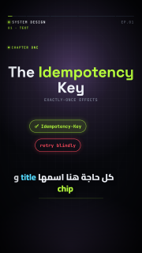
| Prop | Type | Default | Required |
|---|---|---|---|
text |
string | yes | |
size |
number | ||
align |
left | center | right |
"center" |
|
color |
string | "ink" |
|
accent |
string | "lime" |
|
font |
auto | display | arabic | mono |
"auto" |
|
weight |
integer | 800 |
|
sub |
string |
label
Small uppercase monospace label.
| Prop | Type | Default | Required |
|---|---|---|---|
text |
string | yes | |
color |
string | "dim" |
|
size |
number | ||
align |
start | left | center | right |
"start" |
|
dot |
boolean | false |
code
Code card with token colors that types itself.
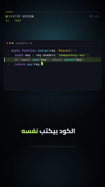
| Prop | Type | Default | Required |
|---|---|---|---|
title |
string | ||
lang |
string | "ts" |
|
lines |
(string | object)[] | yes | |
fontSize |
number | 30 |
|
cps |
number | 28 |
|
caret |
boolean | true |
|
numbers |
boolean | true |
|
typing |
boolean | true |
|
highlight |
object[] | [] |
node
Box with a title and a sub-status; status changes its color.
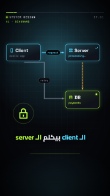
| Prop | Type | Default | Required |
|---|---|---|---|
title |
string | yes | |
sub |
string | ||
color |
string | "cyan" |
|
status |
idle | ok | err | warn | busy | off |
"idle" |
|
icon |
icon name (list) | ||
badge |
string |
arrow
Straight, elbow or curved arrow with an optional label and moving packets.
| Prop | Type | Default | Required |
|---|---|---|---|
from |
string | object | yes | |
to |
string | object | yes | |
label |
string | ||
color |
string | "dim" |
|
dashed |
boolean | false |
|
route |
straight | elbow | curve |
"straight" |
|
width |
number | 5 |
|
head |
end | start | both | none |
"end" |
|
packet |
boolean | object | false |
|
packets |
object[] | [] |
|
gap |
number | 14 |
chip
Pill/tag, optionally struck through.
| Prop | Type | Default | Required |
|---|---|---|---|
text |
string | yes | |
color |
string | "lime" |
|
strike |
boolean | time | false |
|
icon |
icon name (list) | ||
variant |
solid | outline | soft |
"soft" |
|
size |
number | 34 |
stamp
Rotated bordered word that slams in (×2, DEADLOCK).
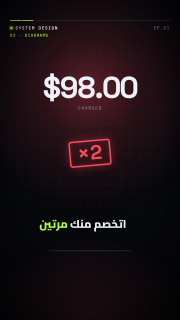
| Prop | Type | Default | Required |
|---|---|---|---|
text |
string | yes | |
color |
string | "red" |
|
size |
number | 120 |
|
rot |
number | -5 |
table
Header + rows with animated row inserts and highlights.
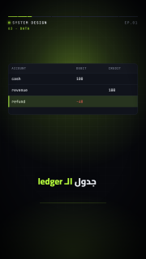
| Prop | Type | Default | Required |
|---|---|---|---|
columns |
string[] | yes | |
rows |
object[] | [] |
|
widths |
number[] | ||
fontSize |
number | 28 |
|
accent |
string | "lime" |
lanes
Parallel columns of timed steps (race conditions).
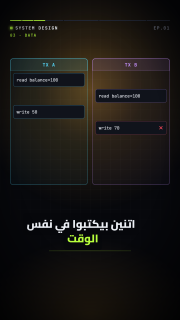
| Prop | Type | Default | Required |
|---|---|---|---|
lanes |
object[] | yes | |
interleave |
boolean | true |
|
fontSize |
number | 26 |
checklist
Items with check boxes appearing in sequence.
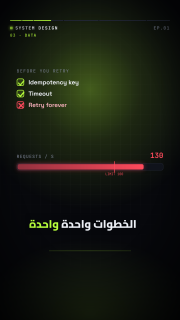
| Prop | Type | Default | Required |
|---|---|---|---|
title |
string | ||
items |
object[] | yes | |
fontSize |
number | 36 |
|
color |
string | "lime" |
counter
Big number counting between keyframe values.
| Prop | Type | Default | Required |
|---|---|---|---|
keyframes |
object[] | yes | |
from |
number | 0 |
|
prefix |
string | "" |
|
suffix |
string | "" |
|
decimals |
integer | 0 |
|
separator |
boolean | true |
|
label |
string | ||
color |
string | "ink" |
|
size |
number | 180 |
meter
Horizontal bar (or a half-circle gauge with style: gauge) with an optional threshold marker.
| Prop | Type | Default | Required |
|---|---|---|---|
keyframes |
object[] | yes | |
from |
number | 0 |
|
max |
number | 100 |
|
threshold |
number | ||
label |
string | ||
unit |
string | "" |
|
color |
string | "lime" |
|
danger |
string | "red" |
|
style |
bar | gauge |
"bar" |
timeline
Axis with markers at relative positions (backoff, TTL).
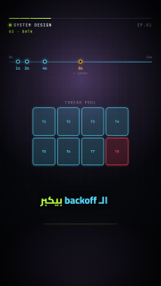
| Prop | Type | Default | Required |
|---|---|---|---|
markers |
object[] | [] |
|
start |
string | ||
end |
string | ||
color |
string | "cyan" |
|
cursor |
object[] | [] |
grid
N×M tiles with per-tile states (thread pool, shards, services).
| Prop | Type | Default | Required |
|---|---|---|---|
cols |
integer | yes | |
rows |
integer | yes | |
tiles |
(string | object)[] | [] |
|
steps |
object[] | [] |
|
gap |
number | 14 |
|
label |
string |
bucket
Token bucket whose tokens are consumed and refilled over time.
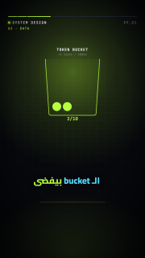
| Prop | Type | Default | Required |
|---|---|---|---|
capacity |
integer | yes | |
keyframes |
object[] | [] |
|
label |
string | ||
rate |
string | ||
color |
string | "lime" |
phone
Phone mock with a checkout screen, button taps and notifications.
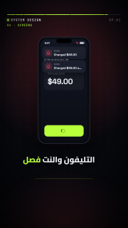
| Prop | Type | Default | Required |
|---|---|---|---|
title |
string | "Checkout" |
|
amount |
string | ||
item |
string | ||
button |
string | "Pay now" |
|
notifications |
object[] | [] |
|
taps |
object[] | [] |
|
offline |
boolean | false |
|
loading |
boolean | false |
|
success |
boolean | string | false |
quote
Quote card with author; the quote types itself.
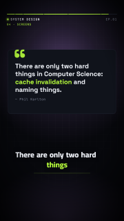
| Prop | Type | Default | Required |
|---|---|---|---|
text |
string | yes | |
author |
string | ||
highlight |
string[] | [] |
|
cps |
number | 32 |
|
color |
string | "lime" |
|
size |
number | 56 |
particles
Seeded particle bursts, herds, streams, dust or confetti.
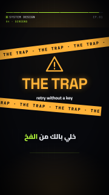
| Prop | Type | Default | Required |
|---|---|---|---|
kind |
burst | herd | stream | dust | confetti |
"burst" |
|
from |
string | object | ||
to |
string | object | ||
count |
integer | 40 |
|
at |
time | ||
dur |
number | 1.2 |
|
color |
string | "lime" |
|
colors |
string[] | ||
size |
number | 10 |
|
spread |
number | 140 |
|
seed |
integer | 1 |
trap
The series "THE TRAP" interstitial with warning tapes.
| Prop | Type | Default | Required |
|---|---|---|---|
title |
string | "THE TRAP" |
|
sub |
string | ||
at |
time | ||
until |
time | ||
color |
string | "amber" |
cta
"Next episode" title plus a comment box typing a keyword.
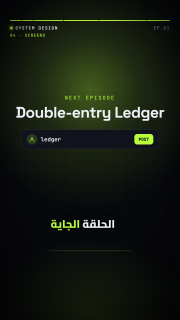
| Prop | Type | Default | Required |
|---|---|---|---|
label |
string | "NEXT EPISODE" |
|
next |
string | yes | |
keyword |
string | ||
prompt |
string | "Comment" |
|
at |
time | ||
color |
string | "lime" |
icon
Inline SVG icon from the bundled set, or an SVG from assets/.
| Prop | Type | Default | Required |
|---|---|---|---|
name |
icon name (list) | ||
src |
string | ||
size |
number | 140 |
|
color |
string | "ink" |
|
pulse |
boolean | false |
|
ring |
boolean | false |
bar-chart
Vertical or horizontal bars that grow in on enter; keyframable values and a focus bar.
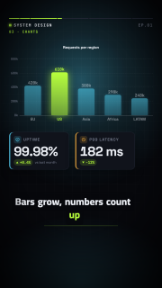
| Prop | Type | Default | Required |
|---|---|---|---|
bars |
object[] | yes | |
orient |
vertical | horizontal |
"vertical" |
|
min |
number | ||
max |
number | ||
title |
string | ||
values |
boolean | true |
|
grid |
boolean | true |
|
focus |
integer | object | ||
prefix |
string | "" |
|
suffix |
string | "" |
|
decimals |
integer | 0 |
|
color |
string | "cyan" |
|
accent |
string | "lime" |
|
stagger |
number | 0.12 |
|
dur |
number | 0.8 |
|
fontSize |
number | 26 |
line-chart
One or more series that draw themselves, with points, axis labels and a legend.
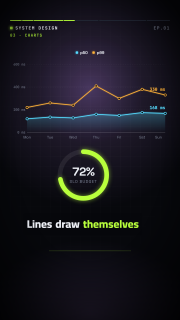
| Prop | Type | Default | Required |
|---|---|---|---|
series |
object[] | yes | |
labels |
string[] | [] |
|
min |
number | ||
max |
number | ||
title |
string | ||
points |
boolean | true |
|
area |
boolean | true |
|
grid |
boolean | true |
|
legend |
boolean | true |
|
prefix |
string | "" |
|
suffix |
string | "" |
|
decimals |
integer | 0 |
|
color |
string | "cyan" |
|
stagger |
number | 0.3 |
|
dur |
number | 1.4 |
|
fontSize |
number | 24 |
donut-chart
Donut whose segments sweep in, with a center value and a legend.
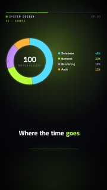
| Prop | Type | Default | Required |
|---|---|---|---|
segments |
object[] | yes | |
total |
number | ||
label |
string | ||
value |
string | ||
show |
percent | value | none |
"percent" |
|
legend |
boolean | true |
|
thickness |
number | 0.3 |
|
prefix |
string | "" |
|
suffix |
string | "" |
|
decimals |
integer | 0 |
|
color |
string | "cyan" |
|
dur |
number | 1.2 |
|
fontSize |
number | 28 |
stat-card
KPI card: a value counting up, a label and an up/down delta.
| Prop | Type | Default | Required |
|---|---|---|---|
label |
string | yes | |
value |
number | yes | |
from |
number | 0 |
|
keyframes |
object[] | ||
prefix |
string | "" |
|
suffix |
string | "" |
|
decimals |
integer | 0 |
|
separator |
boolean | true |
|
delta |
number | string | ||
deltaSuffix |
string | "%" |
|
good |
up | down |
"up" |
|
sub |
string | ||
icon |
icon name (list) | ||
color |
string | "ink" |
|
accent |
string | "cyan" |
|
dur |
number | 1.2 |
|
size |
number | 96 |
progress-ring
Circular percentage that fills to its value (keyframable).
| Prop | Type | Default | Required |
|---|---|---|---|
value |
number | yes | |
max |
number | 100 |
|
from |
number | 0 |
|
keyframes |
object[] | ||
label |
string | ||
prefix |
string | "" |
|
suffix |
string | "%" |
|
decimals |
integer | 0 |
|
color |
string | "lime" |
|
thickness |
number | 28 |
|
dur |
number | 1.2 |
comparison
A vs B columns with rows of attributes (check/cross or values) and a winner.
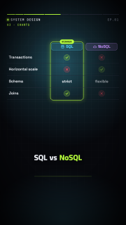
| Prop | Type | Default | Required |
|---|---|---|---|
a |
object | yes | |
b |
object | yes | |
rows |
object[] | yes | |
winner |
a | b | object |
||
badge |
string | "WINNER" |
|
accent |
string | "lime" |
|
stagger |
number | 0.35 |
|
fontSize |
number | 32 |
before-after
Two panels (text or an assets/ image) revealed by an animated wipe divider.
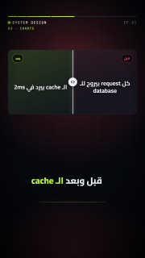
| Prop | Type | Default | Required |
|---|---|---|---|
before |
object | yes | |
after |
object | yes | |
at |
time | ||
dur |
number | 1.1 |
|
split |
number | 0.5 |
|
fontSize |
number | 44 |
ranking
Ordered horizontal bars with rank numbers that grow in sequence.
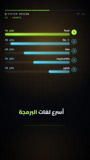
| Prop | Type | Default | Required |
|---|---|---|---|
items |
object[] | yes | |
sort |
boolean | true |
|
order |
bottom-up | top-down |
"bottom-up" |
|
max |
number | ||
values |
boolean | true |
|
prefix |
string | "" |
|
suffix |
string | "" |
|
decimals |
integer | 0 |
|
color |
string | "cyan" |
|
accent |
string | "lime" |
|
stagger |
number | 0.3 |
|
dur |
number | 0.7 |
|
fontSize |
number | 30 |
steps
Numbered steps appearing one by one, vertical or horizontal.
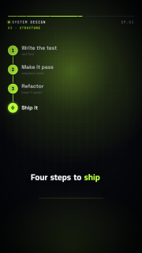
| Prop | Type | Default | Required |
|---|---|---|---|
items |
object[] | yes | |
orient |
vertical | horizontal |
"vertical" |
|
color |
string | "lime" |
|
stagger |
number | 0.5 |
|
fontSize |
number | 40 |
flow
Horizontal pipeline of stages with connectors and a moving token.
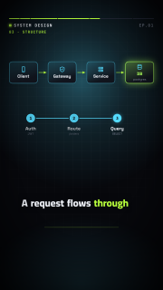
| Prop | Type | Default | Required |
|---|---|---|---|
stages |
object[] | yes | |
token |
boolean | object | true |
|
color |
string | "cyan" |
|
accent |
string | "lime" |
|
stagger |
number | 0.25 |
|
fontSize |
number | 28 |
org-chart
Tree of person/role boxes (nested or parent ids) with automatic layout.
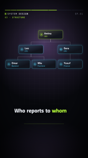
| Prop | Type | Default | Required |
|---|---|---|---|
people |
object[] | yes | |
color |
string | "cyan" |
|
accent |
string | "lime" |
|
stagger |
number | 0.35 |
|
fontSize |
number | 30 |
tree
Generic hierarchy with automatic layout; branches draw in level by level.
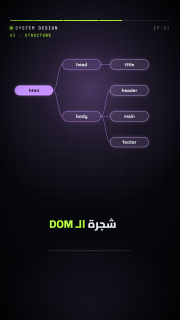
| Prop | Type | Default | Required |
|---|---|---|---|
nodes |
object[] | yes | |
orient |
down | right |
"down" |
|
color |
string | "violet" |
|
stagger |
number | 0.3 |
|
fontSize |
number | 28 |
cycle
Stages around a circle with arrows; the active stage is highlighted over time.
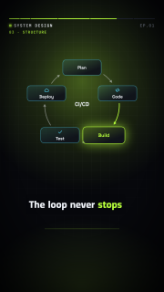
| Prop | Type | Default | Required |
|---|---|---|---|
stages |
object[] | yes | |
active |
object[] | [] |
|
step |
number | 0.8 |
|
center |
string | ||
color |
string | "cyan" |
|
accent |
string | "lime" |
|
stagger |
number | 0.15 |
|
fontSize |
number | 28 |
funnel
Stages narrowing from top to bottom, with values and optional conversion rates.
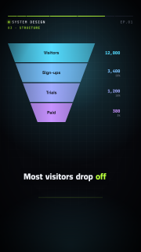
| Prop | Type | Default | Required |
|---|---|---|---|
stages |
object[] | yes | |
rate |
boolean | false |
|
neck |
number | 0.32 |
|
prefix |
string | "" |
|
suffix |
string | "" |
|
decimals |
integer | 0 |
|
color |
string | "cyan" |
|
accent |
string | "violet" |
|
stagger |
number | 0.3 |
|
fontSize |
number | 32 |
pyramid
Stacked levels from a narrow top to a wide base, labelled at the side.
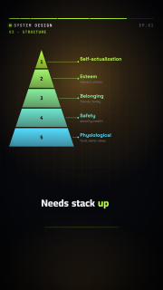
| Prop | Type | Default | Required |
|---|---|---|---|
levels |
object[] | yes | |
order |
bottom-up | top-down |
"bottom-up" |
|
color |
string | "cyan" |
|
accent |
string | "lime" |
|
stagger |
number | 0.3 |
|
fontSize |
number | 32 |
matrix-2x2
2×2 quadrants (top-left, top-right, bottom-left, bottom-right) with axis labels and placed items.
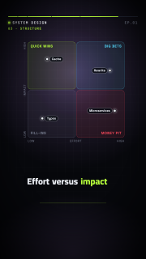
| Prop | Type | Default | Required |
|---|---|---|---|
x |
object | {} |
|
y |
object | {} |
|
quadrants |
object[] | [] |
|
items |
object[] | [] |
|
color |
string | "cyan" |
|
stagger |
number | 0.3 |
|
fontSize |
number | 26 |
map
World or regional outline map (Natural Earth, public domain): highlighted countries, labelled pins and routes that draw between them.
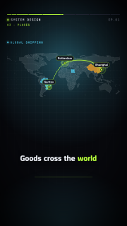
| Prop | Type | Default | Required |
|---|---|---|---|
view |
world | africa | europe | asia | middle-east | north-america | south-america | oceania | object |
"world" |
|
countries |
(string | object)[] | [] |
|
pins |
object[] | [] |
|
routes |
object[] | [] |
|
graticule |
boolean | true |
|
color |
string | "cyan" |
|
accent |
string | "lime" |
|
stagger |
number | 0.3 |
|
fontSize |
number | 26 |
route
A→B path through waypoints with a moving vehicle (truck, ship, plane, ambulance, train, …).
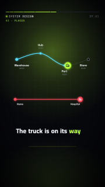
| Prop | Type | Default | Required |
|---|---|---|---|
stops |
object[] | yes | |
vehicle |
truck | ship | plane | ambulance | train | car | bus | bike |
"truck" |
|
progress |
object[] | ||
dur |
number | 2.4 |
|
curve |
boolean | true |
|
color |
string | "cyan" |
|
accent |
string | "lime" |
|
fontSize |
number | 28 |
floor-plan
Rooms drawn from rectangles on a grid, with labels and rooms highlighted over time.
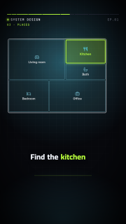
| Prop | Type | Default | Required |
|---|---|---|---|
cols |
integer | 12 |
|
rows |
integer | 8 |
|
rooms |
object[] | yes | |
highlights |
object[] | [] |
|
color |
string | "cyan" |
|
accent |
string | "lime" |
|
stagger |
number | 0.08 |
|
fontSize |
number | 26 |
building
Stacked floors (listed from the ground up) with labels; floors are highlighted over time.
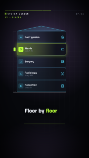
| Prop | Type | Default | Required |
|---|---|---|---|
floors |
object[] | yes | |
highlights |
object[] | [] |
|
numbers |
boolean | true |
|
ground |
string | "G" |
|
color |
string | "cyan" |
|
accent |
string | "lime" |
|
stagger |
number | 0.12 |
|
fontSize |
number | 30 |
container-stack
Shipping containers with their codes, stacked bottom-up like a crane loads them.
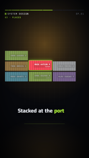
| Prop | Type | Default | Required |
|---|---|---|---|
containers |
object[] | yes | |
cols |
integer | 4 |
|
focus |
integer | object | ||
color |
string | "cyan" |
|
accent |
string | "lime" |
|
stagger |
number | 0.12 |
|
fontSize |
number | 22 |
calendar
Month view (English or Arabic names) whose highlighted days appear over time.
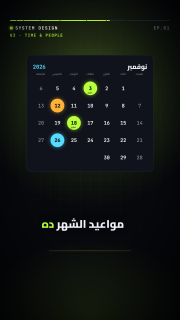
| Prop | Type | Default | Required |
|---|---|---|---|
year |
integer | yes | |
month |
integer | yes | |
lang |
en | ar |
"en" |
|
weekStart |
mon | sun | sat |
"mon" |
|
weekdays |
string[] | ||
monthName |
string | ||
digits |
latn | arab |
"latn" |
|
days |
(integer | object)[] | [] |
|
color |
string | "cyan" |
|
accent |
string | "lime" |
|
stagger |
number | 0.2 |
|
fontSize |
number | 30 |
clock
Analog or digital clock that ticks between keyframed times, or a countdown (mode: countdown).
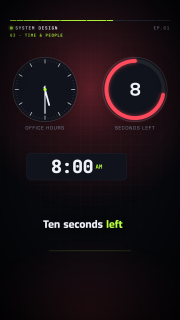
| Prop | Type | Default | Required |
|---|---|---|---|
mode |
clock | countdown |
"clock" |
|
face |
analog | digital |
"analog" |
|
time |
string | "09:00" |
|
keyframes |
object[] | ||
hours |
24 | 12 |
"24" |
|
seconds |
boolean | false |
|
from |
number | 10 |
|
at |
time | ||
label |
string | ||
color |
string | "ink" |
|
accent |
string | "lime" |
schedule-board
Departures/arrivals split-flap board whose rows and later updates flip into place.
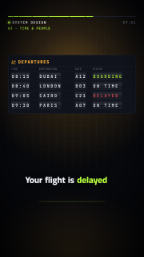
| Prop | Type | Default | Required |
|---|---|---|---|
title |
string | "DEPARTURES" |
|
icon |
icon name (list) | "plane-takeoff" |
|
columns |
string[] | ["TIME","DESTINATION","GATE","STATUS"] |
|
widths |
number[] | ||
rows |
object[] | yes | |
updates |
object[] | [] |
|
flip |
number | 0.7 |
|
color |
string | "amber" |
|
stagger |
number | 0.25 |
|
fontSize |
number | 30 |
appointment
Appointment card: title, date and time, place and a status chip (states can change it).
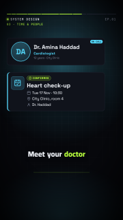
| Prop | Type | Default | Required |
|---|---|---|---|
title |
string | yes | |
date |
string | yes | |
time |
string | ||
place |
string | ||
person |
string | ||
status |
confirmed | pending | cancelled | done |
"confirmed" |
|
statusText |
string | ||
icon |
icon name (list) | "calendar-check" |
|
color |
string | "cyan" |
person-card
Person with an avatar (initials, an icon or an assets/ image), name and role.
| Prop | Type | Default | Required |
|---|---|---|---|
name |
string | yes | |
role |
string | ||
sub |
string | ||
src |
string | ||
initials |
string | ||
icon |
icon name (list) | ||
badge |
string | ||
layout |
horizontal | vertical |
"horizontal" |
|
color |
string | "cyan" |
chat
Message bubbles (left/right, LTR or RTL) that appear in order, with a typing indicator.
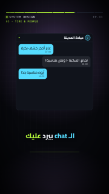
| Prop | Type | Default | Required |
|---|---|---|---|
title |
string | ||
messages |
object[] | yes | |
typing |
number | 0.7 |
|
dir |
auto | ltr | rtl |
"auto" |
|
color |
string | "cyan" |
|
stagger |
number | 1.1 |
|
fontSize |
number | 36 |
notification
Stack of notification toasts sliding in one after another (newest on top).
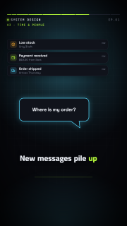
| Prop | Type | Default | Required |
|---|---|---|---|
items |
object[] | yes | |
color |
string | "cyan" |
|
stagger |
number | 0.6 |
|
fontSize |
number | 28 |
speech-bubble
Speech or thought bubble with a tail; optionally types itself.
| Prop | Type | Default | Required |
|---|---|---|---|
text |
string | yes | |
tail |
bottom-left | bottom-right | top-left | top-right | none |
"bottom-left" |
|
style |
speech | thought |
"speech" |
|
cps |
number | 0 |
|
color |
string | "cyan" |
|
fontSize |
number | 40 |
lower-third
Name and title bar that wipes in over the scene (overlay layer).
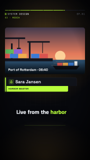
| Prop | Type | Default | Required |
|---|---|---|---|
name |
string | yes | |
title |
string | ||
icon |
icon name (list) | ||
color |
string | "lime" |
|
fontSize |
number | 52 |
image
Image from assets/ (cover or contain) with a slow Ken Burns pan and zoom over its lifetime.
| Prop | Type | Default | Required |
|---|---|---|---|
src |
string | yes | |
fit |
cover | contain |
"cover" |
|
kenburns |
boolean | true |
|
zoom |
number | 1.12 |
|
pan |
center | left | right | up | down |
"right" |
|
caption |
string | ||
radius |
number | 26 |
|
color |
string | "ink" |
logo
Logo slot: an assets/ image, or a text wordmark with an optional icon mark and tagline.
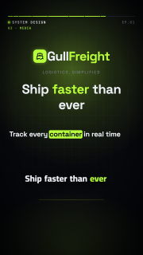
| Prop | Type | Default | Required |
|---|---|---|---|
src |
string | ||
text |
string | ||
tagline |
string | ||
icon |
icon name (list) | ||
color |
string | "ink" |
|
accent |
string | "lime" |
|
size |
number | 96 |
kinetic-text
Headline revealed word by word (pop, slide or highlight), staggered or on word beats.
| Prop | Type | Default | Required |
|---|---|---|---|
text |
string | yes | |
style |
pop | slide | highlight |
"pop" |
|
beats |
object[] | [] |
|
size |
number | ||
align |
left | center | right |
"center" |
|
color |
string | "ink" |
|
accent |
string | "lime" |
|
stagger |
number | 0.18 |
|
weight |
integer | 800 |
bullet-list
Bulleted or numbered points appearing one by one.
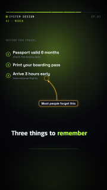
| Prop | Type | Default | Required |
|---|---|---|---|
title |
string | ||
items |
(string | object)[] | yes | |
marker |
dot | number | check | dash | icon |
"dot" |
|
color |
string | "lime" |
|
stagger |
number | 0.45 |
|
fontSize |
number | 40 |
callout
Annotation label with a curved arrow pointing at an element (to: id or id.side) or a point.
| Prop | Type | Default | Required |
|---|---|---|---|
to |
string | object | yes | |
text |
string | yes | |
color |
string | "amber" |
|
curve |
boolean | true |
|
ring |
boolean | true |
|
fontSize |
number | 30 |
spotlight
Dims the whole scene except one element (target: id) or box, with an optional label.
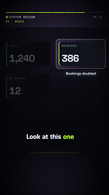
| Prop | Type | Default | Required |
|---|---|---|---|
target |
string | object | yes | |
shape |
rect | circle |
"rect" |
|
padding |
number | 24 |
|
dim |
number | 0.72 |
|
label |
string | ||
at |
time | ||
until |
time | ||
color |
string | "ink" |
split-screen
Two halves side by side (or stacked), each with a title, text, icon or assets/ image.
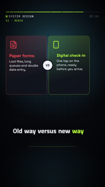
| Prop | Type | Default | Required |
|---|---|---|---|
a |
object | yes | |
b |
object | yes | |
split |
columns | rows |
"columns" |
|
badge |
string | ||
stagger |
number | 0.35 |
|
fontSize |
number | 40 |
pricing-table
Plans with prices and feature lists and a featured plan; variant: tag draws one price tag.
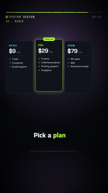
| Prop | Type | Default | Required |
|---|---|---|---|
variant |
table | tag |
"table" |
|
plans |
object[] | yes | |
currency |
string | "$" |
|
color |
string | "cyan" |
|
accent |
string | "lime" |
|
stagger |
number | 0.25 |
|
fontSize |
number | 30 |
qr-code
Scannable QR code (byte mode, ECC L or M, versions 1–10) encoded in the runtime.
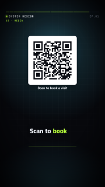
| Prop | Type | Default | Required |
|---|---|---|---|
text |
string | yes | |
ecc |
L | M |
"M" |
|
label |
string | ||
draw |
boolean | true |
|
color |
string | "#0b0d14" |
|
background |
string | "#ffffff" |
rating
Stars from 0 to max with halves, filling in turn. For illustrative scores only, never as real customer reviews.
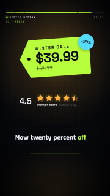
| Prop | Type | Default | Required |
|---|---|---|---|
value |
number | yes | |
max |
integer | 5 |
|
label |
string | ||
note |
string | ||
numbers |
boolean | true |
|
color |
string | "amber" |
|
dur |
number | 1 |
|
size |
number | 76 |
vitals
Heart-rate monitor: an ECG trace sweeping across with a live BPM counter (keyframable).
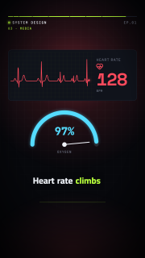
| Prop | Type | Default | Required |
|---|---|---|---|
bpm |
number | 72 |
|
keyframes |
object[] | ||
label |
string | "HEART RATE" |
|
unit |
string | "BPM" |
|
threshold |
number | ||
window |
number | 3 |
|
grid |
boolean | true |
|
color |
string | "lime" |
|
danger |
string | "red" |
Icons
258 bundled icons, usable wherever a prop takes an icon name: the ReelForge set and a subset of Lucide (ISC).
lock, unlock, bell, clock, warn, bubble, bomb, check, x, server, db, user, users, bolt, card, wifi, wifi-off, cloud, key, mail, cart, cpu, queue, shield, fire, refresh, hourglass, phone, code, globe, heart-pulse, stethoscope, pill, syringe, hospital, ambulance, activity, thermometer, bandage, cross, microscope, dna, brain, bone, baby, accessibility, test-tube, clipboard-plus, heart, hand-heart, eye, ear, tablets, pill-bottle, bed, briefcase-medical, shield-plus, scan-heart, house, building, building-complex, hotel, key-round, door-open, door-closed, sofa, bath, ruler, landmark, fence, trees, tree-pine, house-plus, map-pin-house, bed-double, ship, anchor, container, package, package-check, package-open, boxes, forklift, truck, warehouse, barcode, scan-barcode, route, waypoints, map, map-pin, map-pinned, navigation, compass, earth, weight, scale, clipboard-list, clipboard-check, plane, plane-takeoff, plane-landing, train-front, bus, car, bike, sailboat, fuel, ticket, luggage, cable-car, traffic-cone, milestone, signpost, rocket, graduation-cap, book, book-open, school, pencil, pen-tool, notebook, library, backpack, calculator, presentation, lightbulb, award, trophy, medal, atom, flask-conical, wallet, banknote, coins, piggy-bank, credit-card, receipt, chart-line, chart-column, chart-pie, trending-up, trending-down, dollar-sign, percent, hand-coins, badge-dollar-sign, briefcase, vault, circle-dollar-sign, utensils, utensils-crossed, chef-hat, coffee, pizza, apple, carrot, croissant, cake, wine, beer, cup-soda, ice-cream-cone, soup, sandwich, salad, cooking-pot, fish, wheat, shopping-bag, shopping-basket, store, tag, tags, gift, shirt, badge-percent, gavel, flag, vote, id-card, file-text, stamp, shield-check, scroll, badge-check, siren, fingerprint-pattern, zap, battery, battery-charging, sun, wind, droplet, droplets, flame, plug, plug-zap, power, gauge, leaf, recycle, solar-panel, waves-horizontal, cloud-sun, moon, snowflake, factory, cog, settings, wrench, hammer, drill, hard-hat, construction, pickaxe, bot, cable, shovel, paint-bucket, camera, tree-palm, mountain, mountain-snow, tent, umbrella, binoculars, castle, search, star, thumbs-up, message-circle, send, calendar, calendar-check, calendar-days, alarm-clock, timer, info, circle-question-mark, circle-check, circle-x, triangle-alert, plus, arrow-right, link, image, mic, qr-code, smartphone, sparkles, target, crown, user-plus, user-check, phone-call, megaphone, newspaper
CLI reference
Every reelforge command and option, generated from the command definition in packages/cli/src/index.ts. On Windows run reelforge.cmd, on macOS and Linux ./reelforge, or pnpm reelforge from a source checkout. Exit codes: 0 success, 1 failure (or validation errors), 2 usage error. The command line guide explains environment variables and common workflows.
Global options
These options go before or after any command.
| Option | Description | Default | Required |
|---|---|---|---|
-V, --version |
output the version number | ||
--verbose |
more output (info messages, logs) | ||
--json |
machine-readable JSON output | ||
--root <dir> |
project root (default: $REELFORGE_ROOT or the current directory) |
Commands
| Command | Description |
|---|---|
reelforge studio |
open the project dashboard: create episodes, upload voice, open the editor, validate and render |
reelforge new |
create episodes/<id>/episode.yaml from a commented template |
reelforge packs |
list industry packs and their templates with slots |
reelforge cue |
open the editor in Cues mode: mark when each line starts (writes cues.json) |
reelforge align |
mark cues automatically from the voice recording (lines and words; writes cues.json) |
reelforge edit |
open the visual editor: canvas, layers, inspector and timeline (writes episode.yaml) |
reelforge dev |
open the editor in Review mode: checks, safe zones, element outlines |
reelforge validate |
check schema, cues, timing, layout, safe zones and text overflow |
reelforge render |
render master + share MP4, SRT, contact sheet and publish.md |
reelforge snap |
write PNG frames at times (seconds or time expressions) and a contact sheet |
reelforge doctor |
check Node, ffmpeg, Chromium and fonts; print install steps |
reelforge theme new |
generate a complete themes/<name>.theme.yaml (WCAG AA contrast) from one accent color |
reelforge mcp |
run the Model Context Protocol server on stdio (for AI assistants and agents) |
reelforge schema |
write the episode JSON Schema (editor autocompletion) |
reelforge studio
open the project dashboard: create episodes, upload voice, open the editor, validate and render
reelforge studio [options]
| Option | Description | Default | Required |
|---|---|---|---|
--port <port> |
port (default 4310 or $REELFORGE_PORT) | ||
--host <address> |
bind address (default 127.0.0.1 or $REELFORGE_HOST); other addresses require the bearer token | ||
--no-open |
do not open the browser |
reelforge new
create episodes/<id>/episode.yaml from a commented template
reelforge new [options] <id>
| Argument | Description | Required |
|---|---|---|
id |
episode id (slug) | yes |
| Option | Description | Default | Required |
|---|---|---|---|
--series <name> |
series name shown in the header | ||
--episode <n> |
episode number | ||
--lang <en|ar> |
language of the template script (default en) | ||
--pack <id> |
start from an industry pack template (see reelforge packs) |
||
--template <id> |
template of the pack (default: the pack's first template) | ||
--slot <key=value> |
template slot value (repeatable); missing slots keep their defaults |
reelforge packs
list industry packs and their templates with slots
reelforge packs [options]
| Option | Description | Default | Required |
|---|---|---|---|
--lang <en|ar> |
language of names and slot defaults (default en) |
reelforge cue
open the editor in Cues mode: mark when each line starts (writes cues.json)
reelforge cue [options] <id>
| Argument | Description | Required |
|---|---|---|
id |
episode id or path | yes |
| Option | Description | Default | Required |
|---|---|---|---|
--draft |
write estimated cues instead (preview before recording) | ||
--port <port> |
port (default 4317 or $REELFORGE_PORT) | ||
--preset <name> |
override meta.preset | ||
--no-open |
do not open the browser |
reelforge align
mark cues automatically from the voice recording (lines and words; writes cues.json)
reelforge align [options] [id]
| Argument | Description | Required |
|---|---|---|
id |
episode id or path |
| Option | Description | Default | Required |
|---|---|---|---|
--engine <name> |
auto: whisper when installed, else dsp (one of auto, dsp, whisper) |
||
--model <size> |
whisper model size (default base) (one of tiny, base, small) |
||
--no-vad |
detect speech by energy only (skip Silero VAD) | ||
--no-words |
only line cues | ||
--force |
replace cues you marked by hand | ||
--dry-run |
print the result without writing cues.json | ||
--setup |
install the optional speech models (one time, ~180 MB in the user cache) | ||
--status |
show which speech models are installed |
reelforge edit
open the visual editor: canvas, layers, inspector and timeline (writes episode.yaml)
reelforge edit [options] <id>
| Argument | Description | Required |
|---|---|---|
id |
episode id or path | yes |
| Option | Description | Default | Required |
|---|---|---|---|
--port <port> |
port (default 4317 or $REELFORGE_PORT) | ||
--preset <name> |
override meta.preset | ||
--no-open |
do not open the browser |
reelforge dev
open the editor in Review mode: checks, safe zones, element outlines
reelforge dev [options] <id>
| Argument | Description | Required |
|---|---|---|
id |
episode id or path | yes |
| Option | Description | Default | Required |
|---|---|---|---|
--port <port> |
port (default 4317 or $REELFORGE_PORT) | ||
--preset <name> |
override meta.preset | ||
--no-open |
do not open the browser |
reelforge validate
check schema, cues, timing, layout, safe zones and text overflow
reelforge validate [options] <id>
| Argument | Description | Required |
|---|---|---|
id |
episode id or path | yes |
| Option | Description | Default | Required |
|---|---|---|---|
--strict |
fail on warnings too | ||
--preset <name> |
override meta.preset | ||
--no-measure |
skip the headless V-9/V-10 checks |
reelforge render
render master + share MP4, SRT, contact sheet and publish.md
reelforge render [options] [id]
| Argument | Description | Required |
|---|---|---|
id |
episode id or path (or a folder of episodes with --all) |
| Option | Description | Default | Required |
|---|---|---|---|
--all |
render every episode in episodes/ (or in the given folder) | ||
--preset <name> |
tiktok | reels | shorts (default: meta.preset, $REELFORGE_PRESET) | ||
--workers <n> |
parallel Chromium workers (default: CPU cores − 1, $REELFORGE_WORKERS) | ||
--from <t> |
partial render start (seconds) → <id>.part.mp4 | ||
--to <t> |
partial render end (seconds) | ||
--share-size <MB> |
share file size cap (default 28, $REELFORGE_SHARE_SIZE) | ||
--no-sfx |
render without sound effects | ||
--no-share |
skip the share file | ||
--lossless |
capture PNG frames instead of JPEG | ||
--fast |
faster master/share encoding (preset medium) | ||
--silent |
allow rendering without a voice recording | ||
--keep-tmp |
keep out/.tmp/<run-id>/ on failure | ||
--no-measure |
skip the headless V-9/V-10 checks | ||
--denoise |
remove background noise from the voice (default: audio.denoise) | ||
--no-denoise |
keep the voice as recorded, even when audio.denoise is true |
reelforge snap
write PNG frames at times (seconds or time expressions) and a contact sheet
reelforge snap [options] <id> [times...]
| Argument | Description | Required |
|---|---|---|
id |
episode id or path | yes |
times... |
times: 12.5, 12.5s, l7, "l7:'word'", l7.end+0.2 |
| Option | Description | Default | Required |
|---|---|---|---|
--every <seconds> |
one frame every N seconds | ||
--out <dir> |
output folder (default out/snaps) | ||
--preset <name> |
override meta.preset | ||
--cover |
write a single 1080×1920 cover image to out/<id>.cover.png |
reelforge doctor
check Node, ffmpeg, Chromium and fonts; print install steps
reelforge doctor [options]
| Option | Description | Default | Required |
|---|---|---|---|
--fix |
install the pinned Chromium if missing |
reelforge theme new
generate a complete themes/<name>.theme.yaml (WCAG AA contrast) from one accent color
reelforge theme new [options] <name>
| Argument | Description | Required |
|---|---|---|
name |
theme name (slug) | yes |
| Option | Description | Default | Required |
|---|---|---|---|
--accent <hex> |
accent color, e.g. #b8ff3c (adjusted only if it would be hard to read) | yes | |
--mode <mode> |
light or dark background (default dark) | ||
--font <family> |
bundled font for its slot (display, mono or arabic): Space Grotesk, JetBrains Mono, Cairo, Inter, Manrope, Playfair Display, Noto Kufi Arabic, Noto Naskh Arabic, Readex Pro | ||
--out <file> |
output file |
reelforge mcp
run the Model Context Protocol server on stdio (for AI assistants and agents)
reelforge mcp [options]
| Option | Description | Default | Required |
|---|---|---|---|
--toolsets <list> |
only these toolsets: basic, design, render or all (default all) |
reelforge schema
write the episode JSON Schema (editor autocompletion)
reelforge schema [options]
| Option | Description | Default | Required |
|---|---|---|---|
--out <file> |
output file (default schema/episode.schema.json) |
Pack catalog
Every industry pack in packs/ with its templates and slots, generated from each pack.yaml (12 packs). Create an episode from a template with reelforge new <id> --pack <pack> --template <template> --lang en|ar, from the dashboard (New from template) or with the create_from_template tool. See Templates and packs.
| Pack | Theme | Templates | Description |
|---|---|---|---|
Education (education) |
campus |
concept-explainer, study-plan, enrollment-steps |
Explain one concept, share a study plan or walk students through enrollment. |
Events & non-profits (events-ngo) |
editorial |
donation-impact, event-agenda, volunteer-signup |
Honest, human videos about where donations go, an event day and how to volunteer. |
Finance (finance) |
ledger |
budget-basics, compound-interest, scam-alert |
Budget basics, compound interest and scam alerts with example values. For information only, not financial advice. |
Food & hospitality (food) |
bistro |
dish-in-steps, order-to-table, weekly-menu |
Show how a dish is made, how an order reaches the table and this week's specials. No health claims. |
Government & public services (government) |
civic |
renew-document, appointment-checklist, program-deadlines |
Step-by-step guides to renewals, appointments and program deadlines. Neutral, plain and accessible. |
Healthcare (healthcare) |
clinical |
patient-journey, department-intro, health-tip |
Patient guides for a hospital or clinic. General information only, never medical advice. |
Manufacturing (manufacturing) |
industrial |
part-journey, safety-mistake, downtime-causes |
How a part is made, a safety rule and where line time goes. Follow your site's official procedures. |
Ports & logistics (ports-logistics) |
harbor |
container-journey, terminal-in-numbers, new-route |
Explain how cargo moves through a port, share terminal numbers and announce new routes. |
Real estate (real-estate) |
estate |
property-tour, neighborhood-guide, buying-steps |
Property tours, neighborhood guides and buyer steps for an agency or developer. |
Retail (retail) |
retail |
click-and-collect, returns-steps, loyalty-program |
Explain store services in short, upbeat steps. Prices and conditions exactly as you provide them. |
Tech & software (tech) |
default |
system-concept, latency-numbers, request-path |
System design concepts, latency numbers and a request's path through the stack. Generic technologies only. |
Tourism & travel (tourism) |
voyage |
itinerary-3-days, airport-to-town, best-time-to-visit |
Short travel guides with practical tips. Times, prices and rules only as you provide them. |
Education
Explain one concept, share a study plan or walk students through enrollment.
- Pack id:
education - Theme:
campus - Blueprints:
hook,process-steps,timeline,comparison,problem-solution,quote,cta - Playbook:
skills/reelforge-industry-playbooks/references/education.md - Examples:
packs/education/examples/photosynthesis-en,packs/education/examples/photosynthesis-ar
Concept in a minute (concept-explainer)
One concept broken into three parts and a result. Check the content for accuracy.
reelforge new my-video --pack education --template concept-explainer --lang en
| Slot | Label | Type | Limits | Default |
|---|---|---|---|---|
org |
School name | text | max 24 chars | Westfield Academy |
subject |
Subject | text | max 18 chars | Biology |
concept |
Concept | text | max 22 chars | Photosynthesis |
part1 |
Part 1 | text | max 22 chars | Sunlight |
part2 |
Part 2 | text | max 22 chars | Water |
part3 |
Part 3 | text | max 22 chars | Carbon dioxide |
result |
Result | text | max 22 chars | Sugar and oxygen |
keyword |
Comment keyword | text | max 10 chars | NEXT |
accent |
Accent color | color | lime |
Study plan (study-plan)
A calm plan for the days before an exam, with spaced review on a timeline.
reelforge new my-video --pack education --template study-plan --lang en
| Slot | Label | Type | Limits | Default |
|---|---|---|---|---|
exam |
Exam name | text | max 22 chars | the final exam |
days |
Days left | number | ≥ 1, ≤ 60 | 7 |
hours |
Study hours per day | number | ≥ 1, ≤ 12 | 3 |
keyword |
Comment keyword | text | max 10 chars | PLAN |
accent |
Accent color | color | amber |
Enrollment steps (enrollment-steps)
Four enrollment steps for a program, with the deadline and the reply time.
reelforge new my-video --pack education --template enrollment-steps --lang en
| Slot | Label | Type | Limits | Default |
|---|---|---|---|---|
org |
School name | text | max 24 chars | Brightpath College |
program |
Program | text | max 22 chars | Evening courses |
deadline |
Deadline | text | max 14 chars | 30 June |
days |
Reply time (days) | number | ≥ 1, ≤ 90 | 10 |
keyword |
Comment keyword | text | max 10 chars | ENROLL |
accent |
Accent color | color | cyan |
Events & non-profits
Honest, human videos about where donations go, an event day and how to volunteer.
- Pack id:
events-ngo - Theme:
editorial - Blueprints:
hook,stat-reveal,timeline,process-steps,quote,cta - Playbook:
skills/reelforge-industry-playbooks/references/events-ngo.md - Examples:
packs/events-ngo/examples/open-hands-en,packs/events-ngo/examples/open-hands-ar
Where donations go (donation-impact)
Your own yearly shares on a donut chart, explained line by line. No pressure to give.
reelforge new my-video --pack events-ngo --template donation-impact --lang en
| Slot | Label | Type | Limits | Default |
|---|---|---|---|---|
org |
Organization | text | max 24 chars | Open Hands Foundation |
cause |
Main program | text | max 24 chars | meals for families |
meals |
Share for the main program (%) | number | ≥ 1, ≤ 100 | 70 |
transport |
Share for transport and storage (%) | number | ≥ 1, ≤ 100 | 20 |
training |
Share for volunteers (%) | number | ≥ 1, ≤ 100 | 10 |
keyword |
Comment keyword | text | max 10 chars | HELP |
accent |
Accent color | color | lime |
Event agenda (event-agenda)
The event day in three moments on a timeline, with access information.
reelforge new my-video --pack events-ngo --template event-agenda --lang en
| Slot | Label | Type | Limits | Default |
|---|---|---|---|---|
event |
Event name | text | max 24 chars | Greenfield Arts Festival |
date |
Date | text | max 20 chars | Saturday 14 June |
t1 |
Time 1 | text | max 6 chars | 10:00 |
a1 |
Moment 1 | text | max 20 chars | the opening |
t2 |
Time 2 | text | max 6 chars | 13:00 |
a2 |
Moment 2 | text | max 20 chars | open workshops |
t3 |
Time 3 | text | max 6 chars | 19:00 |
a3 |
Moment 3 | text | max 20 chars | a live concert |
keyword |
Comment keyword | text | max 10 chars | PROGRAM |
accent |
Accent color | color | amber |
Volunteer sign-up (volunteer-signup)
How much time volunteering takes, the roles and the sign-up steps.
reelforge new my-video --pack events-ngo --template volunteer-signup --lang en
| Slot | Label | Type | Limits | Default |
|---|---|---|---|---|
org |
Organization | text | max 24 chars | Riverside Charity Run |
hours |
Hours per month | number | ≥ 1, ≤ 200 | 4 |
role1 |
Role 1 | text | max 18 chars | welcome desk |
role2 |
Role 2 | text | max 18 chars | water stations |
role3 |
Role 3 | text | max 18 chars | photography |
keyword |
Comment keyword | text | max 10 chars | JOIN |
accent |
Accent color | color | lime |
Finance
Budget basics, compound interest and scam alerts with example values. For information only, not financial advice.
- Pack id:
finance - Theme:
ledger - Blueprints:
hook,stat-reveal,bar-stats,problem-solution,comparison,process-steps,cta - Playbook:
skills/reelforge-industry-playbooks/references/finance.md - Examples:
packs/finance/examples/budget-split-en,packs/finance/examples/budget-split-ar
Budget basics (budget-basics)
Split an example monthly income into needs, wants and savings on a donut chart.
reelforge new my-video --pack finance --template budget-basics --lang en
| Slot | Label | Type | Limits | Default |
|---|---|---|---|---|
org |
Bank name | text | max 22 chars | Brightway Bank |
income |
Example monthly income | number | ≥ 1, ≤ 999999 | 2000 |
currency |
Currency code | text | max 3 chars | EUR |
needs |
Needs (%) | number | ≥ 1, ≤ 100 | 50 |
wants |
Wants (%) | number | ≥ 1, ≤ 100 | 30 |
savings |
Savings (%) | number | ≥ 1, ≤ 100 | 20 |
keyword |
Comment keyword | text | max 10 chars | BUDGET |
accent |
Accent color | color | lime |
Compound interest (compound-interest)
What compound interest is, with one clearly labeled example and a reminder about fees and risks.
reelforge new my-video --pack finance --template compound-interest --lang en
| Slot | Label | Type | Limits | Default |
|---|---|---|---|---|
org |
Bank name | text | max 22 chars | Brightway Bank |
currency |
Currency code | text | max 3 chars | EUR |
start |
Example starting amount | number | ≥ 1, ≤ 999999 | 1000 |
rate |
Example yearly rate (%) | number | ≥ 0, ≤ 30 | 5 |
years |
Example years | number | ≥ 1, ≤ 60 | 10 |
end |
Example amount after those years | number | ≥ 1, ≤ 999999 | 1629 |
accent |
Accent color | color | lime |
Scam alert (scam-alert)
How a fake bank message looks, three warning signs and what to do instead.
reelforge new my-video --pack finance --template scam-alert --lang en
| Slot | Label | Type | Limits | Default |
|---|---|---|---|---|
org |
Bank name | text | max 22 chars | Brightway Bank |
lure |
What the fake message says | text | max 28 chars | Your account is locked |
keyword |
Comment keyword | text | max 10 chars | SAFE |
accent |
Accent color | color | lime | |
danger |
Warning color | color | red |
Food & hospitality
Show how a dish is made, how an order reaches the table and this week's specials. No health claims.
- Pack id:
food - Theme:
bistro - Blueprints:
hook,process-steps,timeline,before-after,comparison,cta - Playbook:
skills/reelforge-industry-playbooks/references/food.md - Examples:
packs/food/examples/shakshuka-en,packs/food/examples/shakshuka-ar
A dish in 4 steps (dish-in-steps)
How one dish is made in four short steps, with the total time and an allergen reminder.
reelforge new my-video --pack food --template dish-in-steps --lang en
| Slot | Label | Type | Limits | Default |
|---|---|---|---|---|
org |
Restaurant name | text | max 24 chars | Maple Street Bistro |
dish |
Dish | text | max 20 chars | Shakshuka |
step1 |
Step 1 | text | max 24 chars | Soften onion and pepper |
step2 |
Step 2 | text | max 24 chars | Add tomatoes and spices |
step3 |
Step 3 | text | max 24 chars | Simmer until thick |
step4 |
Step 4 | text | max 24 chars | Crack in the eggs |
minutes |
Total minutes | number | ≥ 1, ≤ 240 | 25 |
keyword |
Comment keyword | text | max 10 chars | TABLE |
accent |
Accent color | color | amber |
Order to table (order-to-table)
Behind the kitchen door, from the ticket to the plate on your table.
reelforge new my-video --pack food --template order-to-table --lang en
| Slot | Label | Type | Limits | Default |
|---|---|---|---|---|
org |
Restaurant name | text | max 24 chars | The Copper Pot |
minutes |
Typical minutes from order to table | number | ≥ 1, ≤ 120 | 12 |
next |
Next episode topic | text | max 30 chars | How we prep before opening |
keyword |
Comment keyword | text | max 10 chars | KITCHEN |
accent |
Accent color | color | amber |
This week's specials (weekly-menu)
Three specials on three days, with a "while they last" note and an allergen reminder.
reelforge new my-video --pack food --template weekly-menu --lang en
| Slot | Label | Type | Limits | Default |
|---|---|---|---|---|
org |
Restaurant name | text | max 24 chars | Saffron Table |
day1 |
Day 1 | text | max 10 chars | Monday |
dish1 |
Special 1 | text | max 22 chars | Lemon herb chicken |
day2 |
Day 2 | text | max 10 chars | Wednesday |
dish2 |
Special 2 | text | max 22 chars | Lentil soup |
day3 |
Day 3 | text | max 10 chars | Friday |
dish3 |
Special 3 | text | max 22 chars | Grilled fish |
keyword |
Comment keyword | text | max 10 chars | MENU |
accent |
Accent color | color | amber |
Government & public services
Step-by-step guides to renewals, appointments and program deadlines. Neutral, plain and accessible.
- Pack id:
government - Theme:
civic - Blueprints:
hook,process-steps,timeline,comparison,stat-reveal,cta - Playbook:
skills/reelforge-industry-playbooks/references/government.md - Examples:
packs/government/examples/westbrook-renewal-en,packs/government/examples/westbrook-renewal-ar
Renew a document online (renew-document)
Renew a document online in three steps, with the processing time and where to check the rules.
reelforge new my-video --pack government --template renew-document --lang en
| Slot | Label | Type | Limits | Default |
|---|---|---|---|---|
city |
City or agency | text | max 24 chars | City of Westbrook |
doc |
Document | text | max 20 chars | residence card |
days |
Typical working days | number | ≥ 1, ≤ 120 | 10 |
keyword |
Comment keyword | text | max 10 chars | BOOK |
accent |
Accent color | color | lime |
What to bring (appointment-checklist)
A checklist of what to bring to an in-person appointment and when to arrive.
reelforge new my-video --pack government --template appointment-checklist --lang en
| Slot | Label | Type | Limits | Default |
|---|---|---|---|---|
city |
City or agency | text | max 24 chars | City of Westbrook |
item1 |
Item 1 | text | max 22 chars | your ID card |
item2 |
Item 2 | text | max 22 chars | proof of address |
item3 |
Item 3 | text | max 22 chars | a recent photo |
minutes |
Minutes early | number | ≥ 1, ≤ 120 | 15 |
keyword |
Comment keyword | text | max 10 chars | LIST |
accent |
Accent color | color | cyan |
Program deadlines (program-deadlines)
Three key dates of a public program on a timeline, with eligibility pointed to the official page.
reelforge new my-video --pack government --template program-deadlines --lang en
| Slot | Label | Type | Limits | Default |
|---|---|---|---|---|
city |
City or agency | text | max 24 chars | City of Westbrook |
program |
Program name | text | max 24 chars | Home Energy Grant |
open |
Opening date | text | max 10 chars | 1 March |
close |
Closing date | text | max 10 chars | 30 April |
result |
Decisions in | text | max 10 chars | June |
keyword |
Comment keyword | text | max 10 chars | REMIND |
accent |
Accent color | color | amber |
Healthcare
Patient guides for a hospital or clinic. General information only, never medical advice.
- Pack id:
healthcare - Theme:
clinical - Blueprints:
hook,process-steps,stat-reveal,comparison,timeline,cta - Playbook:
skills/reelforge-industry-playbooks/references/healthcare.md - Examples:
packs/healthcare/examples/first-visit-en,packs/healthcare/examples/first-visit-ar
Patient journey (patient-journey)
What happens at a first visit, from reception to the doctor, in four steps.
reelforge new my-video --pack healthcare --template patient-journey --lang en
| Slot | Label | Type | Limits | Default |
|---|---|---|---|---|
org |
Hospital name | text | max 26 chars | Northwind Hospital |
desk |
Where patients check in | text | max 22 chars | the main desk |
wait |
Typical check-in time (minutes) | number | ≥ 1, ≤ 120 | 10 |
next |
Next episode topic | text | max 30 chars | Preparing for a lab test |
keyword |
Comment keyword | text | max 10 chars | VISIT |
accent |
Accent color | color | cyan |
Department intro (department-intro)
Introduce one department, its opening hours, its team size and how to book.
reelforge new my-video --pack healthcare --template department-intro --lang en
| Slot | Label | Type | Limits | Default |
|---|---|---|---|---|
org |
Hospital name | text | max 26 chars | Northwind Hospital |
dept |
Department name | text | max 22 chars | Cardiology |
floor |
Where it is | text | max 18 chars | Floor 3 |
opens |
Opening time | text | max 8 chars | 8:00 |
closes |
Closing time | text | max 8 chars | 18:00 |
days |
Opening days | text | max 22 chars | Monday to Friday |
staff |
Team size | number | ≥ 1, ≤ 999 | 24 |
keyword |
Comment keyword | text | max 10 chars | BOOK |
accent |
Accent color | color | lime |
Health awareness tip (health-tip)
One general awareness habit with three simple reminders, ending with "talk to your doctor".
reelforge new my-video --pack healthcare --template health-tip --lang en
| Slot | Label | Type | Limits | Default |
|---|---|---|---|---|
org |
Hospital name | text | max 26 chars | Northwind Hospital |
topic |
Topic (2-4 words) | text | max 24 chars | Drinking water |
tip1 |
Reminder 1 | text | max 26 chars | Keep a bottle nearby |
tip2 |
Reminder 2 | text | max 26 chars | A glass with every meal |
tip3 |
Reminder 3 | text | max 26 chars | A little more on hot days |
num |
Tip number in your series | number | ≥ 1, ≤ 99 | 1 |
accent |
Accent color | color | lime |
Manufacturing
How a part is made, a safety rule and where line time goes. Follow your site's official procedures.
- Pack id:
manufacturing - Theme:
industrial - Blueprints:
hook,process-steps,problem-solution,stat-reveal,bar-stats,before-after,cta - Playbook:
skills/reelforge-industry-playbooks/references/manufacturing.md - Examples:
packs/manufacturing/examples/bracket-line-en,packs/manufacturing/examples/bracket-line-ar
How a part is made (part-journey)
One part from raw material to box in five stages, with the cycle time.
reelforge new my-video --pack manufacturing --template part-journey --lang en
| Slot | Label | Type | Limits | Default |
|---|---|---|---|---|
plant |
Plant name | text | max 22 chars | Ridgeway Plant |
part |
Part | text | max 20 chars | steel bracket |
material |
Raw material | text | max 20 chars | a steel sheet |
minutes |
Minutes per part | number | ≥ 1, ≤ 600 | 6 |
keyword |
Comment keyword | text | max 10 chars | QC |
accent |
Accent color | color | amber |
Safety mistake (safety-mistake)
The common mistake, why it is dangerous and the rule from your own procedure.
reelforge new my-video --pack manufacturing --template safety-mistake --lang en
| Slot | Label | Type | Limits | Default |
|---|---|---|---|---|
plant |
Plant name | text | max 22 chars | Ridgeway Plant |
rule |
The rule (from your procedure) | text | max 28 chars | Lock out before you reach in |
ppe |
Protective equipment | text | max 22 chars | gloves and glasses |
keyword |
Comment keyword | text | max 10 chars | SAFE |
accent |
Accent color | color | amber |
Downtime causes (downtime-causes)
Your top three downtime causes ranked with your numbers, and the fix for the biggest one.
reelforge new my-video --pack manufacturing --template downtime-causes --lang en
| Slot | Label | Type | Limits | Default |
|---|---|---|---|---|
plant |
Plant name | text | max 22 chars | Ridgeway Plant |
c1 |
Cause 1 | text | max 18 chars | changeovers |
v1 |
Cause 1 hours | number | ≥ 0, ≤ 9999 | 42 |
c2 |
Cause 2 | text | max 18 chars | small stops |
v2 |
Cause 2 hours | number | ≥ 0, ≤ 9999 | 27 |
c3 |
Cause 3 | text | max 18 chars | waiting for parts |
v3 |
Cause 3 hours | number | ≥ 0, ≤ 9999 | 15 |
fix |
The fix | text | max 28 chars | tools ready before the stop |
keyword |
Comment keyword | text | max 10 chars | STOPS |
accent |
Accent color | color | amber |
Ports & logistics
Explain how cargo moves through a port, share terminal numbers and announce new routes.
- Pack id:
ports-logistics - Theme:
harbor - Blueprints:
hook,process-steps,stat-reveal,bar-stats,comparison,before-after,cta - Playbook:
skills/reelforge-industry-playbooks/references/ports-logistics.md - Examples:
packs/ports-logistics/examples/azur-container-en,packs/ports-logistics/examples/azur-container-ar
Container journey (container-journey)
A container's path from ship to gate in four stages, the typical time and the most common delay.
reelforge new my-video --pack ports-logistics --template container-journey --lang en
| Slot | Label | Type | Limits | Default |
|---|---|---|---|---|
org |
Port or terminal name | text | max 22 chars | Port of Azur |
days |
Typical days from ship to gate | number | ≥ 1, ≤ 60 | 3 |
next |
Next episode topic | text | max 30 chars | How truck slots work |
keyword |
Comment keyword | text | max 10 chars | SLOTS |
accent |
Accent color | color | amber |
Terminal in numbers (terminal-in-numbers)
Yearly volume, cranes, berths and gate hours of one terminal, as the numbers you provide.
reelforge new my-video --pack ports-logistics --template terminal-in-numbers --lang en
| Slot | Label | Type | Limits | Default |
|---|---|---|---|---|
org |
Terminal name | text | max 22 chars | Port of Azur |
teu |
Containers last year (TEU) | number | ≥ 1, ≤ 99999999 | 1250000 |
cranes |
Ship-to-shore cranes | number | ≥ 1, ≤ 200 | 14 |
berths |
Berths | number | ≥ 1, ≤ 100 | 6 |
hours |
Gate hours (e.g. 24/7) | text | max 12 chars | 24/7 |
keyword |
Comment keyword | text | max 10 chars | BERTH |
accent |
Accent color | color | cyan |
New route (new-route)
Announce a direct service with its operator, weekly sailings, transit time and first sailing date.
reelforge new my-video --pack ports-logistics --template new-route --lang en
| Slot | Label | Type | Limits | Default |
|---|---|---|---|---|
org |
Your port | text | max 16 chars | Port of Azur |
dest |
Destination port | text | max 16 chars | Port of Belmar |
carrier |
Operator (fictional or your own) | text | max 22 chars | Bluewater Freight |
calls |
Sailings per week | number | ≥ 1, ≤ 14 | 2 |
days |
Transit days | number | ≥ 1, ≤ 90 | 9 |
starts |
First sailing date | text | max 14 chars | 1 March |
keyword |
Comment keyword | text | max 10 chars | ROUTE |
accent |
Accent color | color | cyan |
Real estate
Property tours, neighborhood guides and buyer steps for an agency or developer.
- Pack id:
real-estate - Theme:
estate - Blueprints:
hook,process-steps,stat-reveal,comparison,before-after,timeline,cta - Playbook:
skills/reelforge-industry-playbooks/references/real-estate.md - Examples:
packs/real-estate/examples/maple-court-en,packs/real-estate/examples/maple-court-ar
Property tour (property-tour)
A quick tour of one home with its key numbers, a standout detail, the area and a viewing call.
reelforge new my-video --pack real-estate --template property-tour --lang en
| Slot | Label | Type | Limits | Default |
|---|---|---|---|---|
org |
Agency name | text | max 24 chars | Cedar Homes |
place |
Property name | text | max 22 chars | Maple Court |
area |
Neighborhood | text | max 22 chars | Oakridge |
rooms |
Bedrooms | number | ≥ 0, ≤ 20 | 3 |
size |
Living space (m²) | number | ≥ 10, ≤ 2000 | 120 |
feature |
Standout detail | text | max 26 chars | sunny balcony |
price |
Price (as you want it shown) | text | max 22 chars | on request |
keyword |
Comment keyword | text | max 10 chars | TOUR |
accent |
Accent color | color | amber |
Neighborhood guide (neighborhood-guide)
What daily life looks like in one area, with three places on a simple route and the commute time.
reelforge new my-video --pack real-estate --template neighborhood-guide --lang en
| Slot | Label | Type | Limits | Default |
|---|---|---|---|---|
org |
Agency name | text | max 24 chars | Cedar Homes |
area |
Neighborhood | text | max 22 chars | Oakridge |
cafe |
A café or market | text | max 18 chars | Juniper Café |
school |
A school | text | max 18 chars | Elm Street School |
park |
A park | text | max 18 chars | Riverside Park |
minutes |
Minutes to the center | number | ≥ 1, ≤ 180 | 15 |
keyword |
Comment keyword | text | max 10 chars | HOMES |
accent |
Accent color | color | lime |
Buying steps (buying-steps)
The five steps of buying a first home, with a typical time from offer to keys.
reelforge new my-video --pack real-estate --template buying-steps --lang en
| Slot | Label | Type | Limits | Default |
|---|---|---|---|---|
org |
Agency name | text | max 24 chars | Cedar Homes |
city |
City | text | max 20 chars | Harbor City |
weeks |
Typical weeks from offer to keys | number | ≥ 1, ≤ 104 | 8 |
keyword |
Comment keyword | text | max 10 chars | KEYS |
next |
Next episode topic | text | max 30 chars | The full buying checklist |
accent |
Accent color | color | amber |
Retail
Explain store services in short, upbeat steps. Prices and conditions exactly as you provide them.
- Pack id:
retail - Theme:
retail - Blueprints:
hook,process-steps,stat-reveal,bar-stats,comparison,cta - Playbook:
skills/reelforge-industry-playbooks/references/retail.md - Examples:
packs/retail/examples/bluebell-pickup-en,packs/retail/examples/bluebell-pickup-ar
Click and collect (click-and-collect)
How online orders are picked up in store, on a phone mock with a "ready" notification.
reelforge new my-video --pack retail --template click-and-collect --lang en
| Slot | Label | Type | Limits | Default |
|---|---|---|---|---|
org |
Store name | text | max 22 chars | Bluebell Market |
store |
Pickup store | text | max 22 chars | Main Street store |
hours |
Typical hours until ready | number | ≥ 1, ≤ 72 | 2 |
keyword |
Comment keyword | text | max 10 chars | RETURNS |
accent |
Accent color | color | lime |
Returns in 3 steps (returns-steps)
The return window and three return steps, with a note that some items cannot be returned.
reelforge new my-video --pack retail --template returns-steps --lang en
| Slot | Label | Type | Limits | Default |
|---|---|---|---|---|
org |
Store name | text | max 22 chars | Northside Outfitters |
days |
Days to start a return | number | ≥ 1, ≤ 365 | 30 |
keyword |
Comment keyword | text | max 10 chars | HELP |
accent |
Accent color | color | cyan | |
next |
Next episode topic | text | max 30 chars | Exchanges made easy |
Loyalty program (loyalty-program)
How members earn points and unlock a reward; free to join, leave any time.
reelforge new my-video --pack retail --template loyalty-program --lang en
| Slot | Label | Type | Limits | Default |
|---|---|---|---|---|
org |
Store name | text | max 22 chars | Corner & Co. |
program |
Program name | text | max 20 chars | Corner Rewards |
points |
Points per unit spent | number | ≥ 1, ≤ 100 | 1 |
reward |
Points needed for the reward | number | ≥ 1, ≤ 100000 | 500 |
perk |
The reward | text | max 22 chars | a free coffee |
keyword |
Comment keyword | text | max 10 chars | JOIN |
accent |
Accent color | color | lime |
Tech & software
System design concepts, latency numbers and a request's path through the stack. Generic technologies only.
- Pack id:
tech - Theme:
default - Blueprints:
hook,problem-solution,process-steps,stat-reveal,bar-stats,comparison,cta - Playbook:
skills/reelforge-industry-playbooks/references/tech.md - Examples:
packs/tech/examples/rate-limiting-en,packs/tech/examples/rate-limiting-ar
System design concept (system-concept)
A flooded API, the component that fixes it, the limit, the 429 and the classic trap.
reelforge new my-video --pack tech --template system-concept --lang en
| Slot | Label | Type | Limits | Default |
|---|---|---|---|---|
concept |
Concept | text | max 20 chars | Rate Limiting |
component |
Component | text | max 18 chars | Rate limiter |
limit |
Limit per client | number | ≥ 1, ≤ 100000 | 100 |
unit |
Unit | text | max 10 chars | req/s |
next |
Next episode topic | text | max 30 chars | Caching and stampedes |
keyword |
Comment keyword | text | max 10 chars | CACHE |
accent |
Accent color | color | lime |
Latency numbers (latency-numbers)
Why the average lies, with your p50, p95 and p99 on a bar chart and a target.
reelforge new my-video --pack tech --template latency-numbers --lang en
| Slot | Label | Type | Limits | Default |
|---|---|---|---|---|
service |
Service name | text | max 16 chars | Checkout API |
p50 |
p50 (ms) | number | ≥ 1, ≤ 99999 | 80 |
p95 |
p95 (ms) | number | ≥ 1, ≤ 99999 | 210 |
p99 |
p99 (ms) | number | ≥ 1, ≤ 99999 | 480 |
target |
Target (ms) | number | ≥ 1, ≤ 99999 | 300 |
keyword |
Comment keyword | text | max 10 chars | TAIL |
accent |
Accent color | color | lime |
A request's path (request-path)
From tap to answer through DNS, CDN, load balancer, API and database.
reelforge new my-video --pack tech --template request-path --lang en
| Slot | Label | Type | Limits | Default |
|---|---|---|---|---|
app |
App name | text | max 18 chars | Bytehaven |
ms |
Total milliseconds | number | ≥ 1, ≤ 9999 | 120 |
next |
Next episode topic | text | max 30 chars | How a CDN caches |
keyword |
Comment keyword | text | max 10 chars | CDN |
accent |
Accent color | color | lime |
Tourism & travel
Short travel guides with practical tips. Times, prices and rules only as you provide them.
- Pack id:
tourism - Theme:
voyage - Blueprints:
hook,timeline,comparison,bar-stats,process-steps,cta - Playbook:
skills/reelforge-industry-playbooks/references/tourism.md - Examples:
packs/tourism/examples/azur-bay-en,packs/tourism/examples/azur-bay-ar
3-day itinerary (itinerary-3-days)
A simple three-day plan on a timeline, with two practical tips.
reelforge new my-video --pack tourism --template itinerary-3-days --lang en
| Slot | Label | Type | Limits | Default |
|---|---|---|---|---|
org |
Your brand | text | max 22 chars | Voyager Tours |
place |
Destination | text | max 18 chars | Azur Bay |
day1 |
Day 1 | text | max 24 chars | the old harbor |
day2 |
Day 2 | text | max 24 chars | a boat trip |
day3 |
Day 3 | text | max 24 chars | the hill fort |
keyword |
Comment keyword | text | max 10 chars | FOOD |
accent |
Accent color | color | amber |
Airport to town (airport-to-town)
Train, bus or taxi from the airport, compared side by side, with a ticket tip.
reelforge new my-video --pack tourism --template airport-to-town --lang en
| Slot | Label | Type | Limits | Default |
|---|---|---|---|---|
airport |
Airport | text | max 16 chars | Azur Airport |
town |
Destination in town | text | max 16 chars | the old town |
train_min |
Train minutes | number | ≥ 1, ≤ 300 | 25 |
bus_min |
Bus minutes | number | ≥ 1, ≤ 300 | 40 |
keyword |
Comment keyword | text | max 10 chars | GUIDE |
accent |
Accent color | color | cyan |
Best time to visit (best-time-to-visit)
Your numbers per season on a bar chart, and the sweet spot for most visitors.
reelforge new my-video --pack tourism --template best-time-to-visit --lang en
| Slot | Label | Type | Limits | Default |
|---|---|---|---|---|
place |
Destination | text | max 18 chars | Azur Bay |
metric |
What the numbers show | text | max 26 chars | Average °C (example) |
spring |
Spring value | number | ≥ -50, ≤ 9999 | 22 |
summer |
Summer value | number | ≥ -50, ≤ 9999 | 31 |
autumn |
Autumn value | number | ≥ -50, ≤ 9999 | 24 |
winter |
Winter value | number | ≥ -50, ≤ 9999 | 15 |
best |
Best period | text | max 18 chars | April to June |
keyword |
Comment keyword | text | max 10 chars | PACK |
accent |
Accent color | color | amber |
ReelForge inside out: a detailed architecture guide
This guide explains how ReelForge 1.0 works, from the first line of
episode.yamlto the final MP4, how the code is organized, and why each decision was made. Diagrams are written in Mermaid and render on GitHub and in VS Code (the documentation site currently shows their Mermaid source).
Contents
- The idea in one minute
- Core concepts (glossary)
- The big picture
- Repository layout
- The seven packages and their boundaries
- An episode from start to finish
- episode.yaml in detail
- Time: cues, words and time expressions
- Package core: the compiler, themes and industry packs
- Package runtime: drawing with render(t)
- Package renderer: from frames to MP4
- Package audio: sound without sound files
- Package studio: dashboard and editor
- Package cli: the commands
- The tool registry and its three transports (MCP and REST)
- The episode folder on disk
- Build, tests, CI, documentation and releases
- Security model
- Determinism: why the same inputs give the same frames
- Environment variables and defaults
- Extending the project
- Notes and things worth knowing
- Quick map: where do I find…?
- Smart features: automatic cues, noise cleanup and suggestions
About links: every numbered section has a fixed anchor (
#s1…#s24), written as an<a id>element in its heading, so the same links work on GitHub and on the documentation site, and they are shared by the English and Arabic versions.
1. The idea in one minute
ReelForge takes two inputs:
- A voice recording (
voice.wav) of you reading your script. - One file,
episode.yaml, that describes the script line by line, the scenes, the elements (titles, diagrams, code, tables, maps…) and on which spoken word each element appears.
It produces a vertical 1080×1920 video at 30 frames per second, ready for TikTok, Reels and Shorts, with word-by-word captions in Arabic and English, procedurally generated sound effects, audio mastered to −14 LUFS, and a publishing sheet.
Three principles govern everything:
| Principle | Meaning |
|---|---|
| Fully local | No cloud, no account, no internet access while rendering (the network is blocked inside the browser). |
| No AI in the render engine | The engine generates no voice and no images, and no model runs while rendering. The optional helpers (cue alignment, scene suggestions) are local, opt-in authoring aids (ADR-013); scene suggestions reach a cloud service only if you configure one. |
| Deterministic | The same inputs give exactly the same pixels, in any order and with any number of workers. |
The technical trick: a web page (HTML/SVG/Canvas) draws the frame at any time t through a pure
function render(t), headless Chromium screenshots every frame, and FFmpeg turns the images into a video.
Around this core sit two authoring layers: a dashboard and visual editor for people, and one tool registry (24 tools) that serves AI agents over MCP and REST, plus 12 industry packs whose templates have slots, so even a small model can produce a valid episode.
2. Core concepts (glossary)
These terms appear everywhere:
| Term | Meaning |
|---|---|
| Episode | A folder with episode.yaml (+ cues.json + voice.wav + assets/ + out/). |
| Script line | One spoken sentence. Its default id is l1, l2, … by position. |
| Cue | The start time of a line in the recording, in seconds, e.g. l3: 6.8. Stored in cues.json. |
| Word time | The start time of each word in a line. Estimated from letter counts, set by automatic alignment, or marked by hand. |
| Time expression | A way to write a time anchored to speech instead of seconds: l3:'bucket' = "the moment the word bucket is spoken in line 3". |
| Scene | One idea on screen. Starts on a line (at: l3) and ends where the next scene starts. |
| Element | Something drawn in a scene: a title, an arrow, a table… It has a position (place), an entrance (enter) and an exit (exit). |
| Component | The type of an element. There are 62 (title, arrow, map, …), each with a strict props schema. |
| Canvas | The full 1080×1920 frame. |
| Stage | The area where elements are placed: 1080×1000, starting at canvas y=270. Element coordinates are relative to the stage. |
| Preset | A platform layout (tiktok / reels / shorts): where the stage and captions sit and the safe zones covered by the app UI. All are 9:16 in 1.0 (ADR-016). |
| Theme | Colors, fonts, text sizes, motion and caption settings, in dark or light mode. 16 themes ship with ReelForge. |
| Timeline | The compiled episode: a JSON object with everything precomputed (times in seconds, final colors, final boxes). It is the only contract between core and runtime. |
| Issue / V-rule | A problem found by validation, with a code from V-1 to V-14, a level (error / warn / info) and a line number. |
| Master / Share | The two output videos: the master at archive quality, and the share file sized for upload limits (28 MB by default). |
| Worker | A parallel render process: its own Chromium plus its own FFmpeg, rendering one range of frames. |
| Hub / Studio | Hub = the project dashboard (port 4310, reelforge studio). Studio = the editor for one episode (port 4317, reelforge edit). |
| Pack | A packs/<id>/ folder for one sector (healthcare, real estate…): a theme, templates, recommended blueprints, examples and an agent playbook. |
| Template / Slot | A template is an episode.yaml with {{slot}} placeholders; filling the slots with flat values gives a valid episode. |
| Blueprint | A whole scene from flat parameters (hook, stat-reveal, comparison…) with elements placed in the safe area and synced to words. There are 13. |
| Tool / Toolset | A tool in the one tool registry (24 tools), tagged with toolsets (basic, design, render) that clients select from. |
| MCP | Model Context Protocol: lets Claude, Cursor and others call ReelForge tools directly (over stdio or HTTP). |
| Skill | A folder in skills/ in the Agent Skills format (SKILL.md + references/) that teaches an agent a whole task. There are 8. |
| Assist | The optional @reelforge/assist package: cue alignment (DSP / Whisper / VAD) and scene suggestions from a language model. |
| Token | A secret that guards /mcp and /api/v1 when the dashboard is bound to a non-local address (ADR-015). |
3. The big picture
3.1 Data flow from inputs to outputs
flowchart LR
subgraph IN["Inputs (episode folder)"]
Y["episode.yaml<br/>script + scenes"]
C["cues.json<br/>line + word times"]
V["voice.wav<br/>recording"]
A["assets/<br/>images, svg"]
end
subgraph RES["Resources"]
T["themes/*.theme.yaml (16)"]
P["presets/*.preset.yaml (3)"]
end
Y --> CMP
C --> CMP
V --> CMP
T --> CMP
P --> CMP
CMP["core: compileEpisode()<br/>parse + validate + resolve"] --> TL[("Timeline<br/>(pure JSON)")]
CMP --> ISS["Issues V-1..V-14"]
TL --> RT["runtime page<br/>render(t)"]
A --> RT
RT -->|"Chromium screenshot<br/>per frame"| FR["JPEG / PNG frames"]
FR -->|"FFmpeg x264<br/>per worker"| SEG["segments"]
SEG --> CAT["concat"]
TL --> SFX["audio: procedural SFX"]
V --> DN["optional denoise<br/>(RNNoise)"]
DN --> MIX["FFmpeg mix<br/>loudnorm + ducking"]
SFX --> MIX
CAT --> ENC["encode master + share"]
MIX --> ENC
ENC --> OUT["out/<br/>master.mp4, share.mp4,<br/>srt, sheet.jpg, publish.md"]
cues.json comes from one of three sources: an estimate before recording (draft), automatic alignment
from the recording (reelforge align), or marking by ear in the editor. The compiler treats them the
same; only the V-3 messages differ.
3.2 Who uses what
The same runtime (the drawing page) is used in the editor and in the renderer. This is the most important design decision: what you see in the editor is exactly what gets rendered. All agent tools are defined once, in the tool registry inside the studio package, and three transports serve them.
flowchart TB
U(("You"))
AI(("AI agent<br/>Claude / Cursor / Codex ..."))
APP(("Other programs<br/>GPT Actions, scripts"))
U -->|browser| HUB["Hub dashboard :4310<br/>/ · /gallery · /connect"]
U -->|browser| STU["Studio editor :4317"]
U -->|terminal| CLI["reelforge CLI"]
AI -->|"MCP stdio<br/>reelforge mcp"| STDIO["cli/src/mcp.ts"]
AI -->|"MCP Streamable HTTP<br/>POST /mcp"| HUB
APP -->|"REST /api/v1<br/>OpenAPI"| HUB
STDIO --> REG["studio/src/tools<br/>ONE tool registry (24 tools)"]
HUB --> REG
REG --> CORE["core<br/>(compiler, packs, blueprints)"]
REG --> REN
REG --> ASSIST["assist<br/>(align, LLM suggestions)"]
REG -->|open_editor| STU
HUB --> STU
HUB --> CORE
HUB --> ASSIST
STU --> CORE
STU --> ASSIST
CLI --> CORE
CLI --> ASSIST
STU -->|"iframe"| RT["runtime<br/>render(t)"]
HUB --> REN
STU --> REN["renderer<br/>(Chromium + FFmpeg)"]
CLI --> REN
REN -->|"headless Chromium"| RT
4. Repository layout
vidcreat/
├── packages/ ← all source code (TypeScript), seven packages
│ ├── audio/ ← WAV, envelopes, speech analysis and alignment (align.ts), SFX, PRNG
│ ├── core/ ← schema, time, captions, themes, presets, compiler, validation,
│ │ industry packs, blueprints, suggestions, automatic cues
│ ├── assist/ ← optional: Whisper + Silero VAD, the LLM provider layer
│ │ └── runtime/ ← package-lock.json + models.json (models pinned by SHA-256)
│ ├── runtime/ ← browser page: render(t) and 62 components, icons, QR, maps
│ ├── renderer/ ← Chromium workers + FFmpeg + doctor
│ │ └── assets/rnnoise/ ← the sh.rnnn noise cleanup model
│ ├── studio/ ← Hub and Studio servers + the tool registry + Vite clients
│ │ ├── src/server/ ← server code (Node): hub, editor, security, gallery, agent endpoints
│ │ ├── src/tools/ ← the tool registry: tools, MCP, OpenAPI, resources
│ │ └── client/ ← hub.html, index.html (editor), connect.html, gallery.html
│ └── cli/ ← the reelforge command + the MCP stdio transport
├── packs/ ← 12 industry packs: pack.yaml + templates/ + examples/
├── themes/ ← 16 themes (dark and light)
├── presets/ ← tiktok, reels, shorts
├── skills/ ← 8 task guides in the Agent Skills format
├── examples/ ← ready-made episodes
│ ├── season1/ep01..ep09 ← the "System Design" series in English
│ ├── season1-arabic/ ← the same series in Arabic
│ └── promo/ ← intro and range (videos about ReelForge itself)
├── episodes/ ← your own episodes (ignored by git)
├── schema/ ← episode.schema.json (generated, for editor autocompletion)
├── fixtures/ ← golden frames, lint cases v01…v14, mini, align, motion
├── tests/ ← browser and integration tests (CLI, MCP, agents, gallery, render…)
├── scripts/ ← doc generation and checks, evals, licenses, release, screenshots…
├── docs/ ← documentation site (VitePress), ADRs, generated references, this guide
├── documentation/ ← offline HTML documentation (generated)
├── .github/workflows/ ← ci.yml, docs.yml, release.yml
├── install.* / start.* / reelforge(.cmd) / ReelForge.command ← installer and launchers
├── AGENTS.md, CLAUDE.md, GEMINI.md, llms.txt, llms-full.txt ← instructions for AI agents
└── .mcp.json, .cursor/, .vscode/, .gemini/, .windsurf/, .claude-plugin/ ← MCP setup per client
Approximate code size (TypeScript/HTML/CSS lines in src/ and client/): studio 16,800 (about
10,000 of them for the clients), runtime 11,000 (1,500 of them generated map and icon data),
core 7,400, renderer 1,500, assist 1,500, cli 1,100, audio 1,100.
5. The seven packages and their boundaries
5.1 Dependency graph
Taken from the actual package.json files (arrow = "depends on"):
flowchart BT
audio["@reelforge/audio<br/>(no dependencies)"]
core["@reelforge/core<br/>+ yaml, zod, zod-to-json-schema"]
assist["@reelforge/assist<br/>(transformers.js + onnxruntime<br/>installed on demand in the user cache)"]
runtime["@reelforge/runtime<br/>(browser bundle, esbuild)"]
renderer["@reelforge/renderer<br/>+ playwright"]
studio["@reelforge/studio<br/>+ ws, yaml, zod, vite (dev)"]
cli["@reelforge/cli<br/>+ commander"]
core --> audio
assist --> core
assist --> audio
runtime -.->|"dev: types + bundled code"| core
runtime -.->|"dev: bundled"| audio
renderer --> core
renderer --> audio
renderer --> runtime
studio --> core
studio --> audio
studio --> assist
studio --> renderer
studio --> runtime
cli --> core
cli --> audio
cli --> assist
cli --> renderer
cli --> studio
The runtime has no runtime dependencies: esbuild bundles what it needs from audio (the deterministic
PRNG) and from core (types only) into one file, which is why both are devDependencies.
5.2 What each package does
| Package | Runs in | Responsibility |
|---|---|---|
audio |
Node and the browser | WAV read/write, envelopes, onset detection, speech analysis and splitting into lines and words (align.ts), 8 sound effects, deterministic randomness |
core |
Node | The YAML schema, time expressions, captions and bidi, themes and the theme generator, presets, the compiler, validation, packs, blueprints, suggestions |
assist |
Node | Automatic cues with the best available engine (DSP / Whisper / VAD), verified model installation, the LLM provider layer and scene suggestions (see §24) |
runtime |
The browser only | The page that draws a frame: render(t), background, header, captions, 62 components, 258 icons, a QR encoder, maps |
renderer |
Node | Launching Chromium, capturing frames, FFmpeg, audio mix and cleanup, output checks, doctor, the V-9/V-10 measuring pass |
studio |
Node (server) + browser (UI) | Dashboard, visual editor, gallery, Connect AI page, structured YAML edits, render queue, the tool registry and its three transports |
cli |
Node | The reelforge command with all its subcommands, and the MCP stdio transport |
5.3 The golden rule: the Timeline is the only contract
core knows nothing about the DOM, and runtime knows nothing about YAML or zod. The only thing that
passes between them is the Timeline object defined in types.ts. As a
result:
- The runtime bundle stays small (no zod, no YAML library).
- core can be tested without a browser.
- A test checks that the component list in
core(the schemas) matches the one inruntime(the drawing code).
A second rule of the same kind applies to agents (ADR-014): no transport declares a tool of its own.
Every tool lives in packages/studio/src/tools/, and MCP stdio, MCP HTTP, REST, the OpenAPI document and
the server card all pick it up automatically.
6. An episode from start to finish
sequenceDiagram
autonumber
actor U as You
participant H as Hub (:4310)
participant S as Studio (:4317)
participant C as core
participant A as assist
participant R as renderer
participant F as FFmpeg
U->>H: + New episode (blank, or pack template + slots)
H->>C: episodeTemplate() / fillTemplate() → episodes/ep10/episode.yaml
U->>H: Draft cues
H->>C: draftCues(script) → cues.json (draft: true)
U->>H: Open editor
H->>S: startStudio(port 0)
S->>C: compileEpisode() → Timeline
S-->>U: state over WebSocket
U->>S: drag / edit props / smart insert
S->>S: applyOps() → episode.yaml (comments kept)
S->>C: recompile → broadcast
U->>H: Upload voice (mp3/m4a/wav/…)
H->>F: convert → voice.wav mono 48 kHz
U->>S: Cues mode: Auto-mark from voice
S->>A: alignEpisode() → cues.json (auto: true)
U->>S: listen once, fix a line by ear (Space)
S->>S: PUT /cues → cues.json
U->>S: Render
S->>R: renderEpisode()
R->>R: workers: Chromium → JPEG → x264 segments
R->>F: concat, (denoise), mix audio, encode master + share
R->>R: checkCompliance (ffprobe)
R-->>U: out/ep10.share.mp4 + publish.md
In words:
- Write. One sentence per line (about 2.3 words per second; 45 seconds ≈ 100–110 words). The first line is the hook, the last one a call to action.
- Create.
reelforge new ep10or the New episode button creates the folder from the generic template, or from an industry pack template (reelforge new ep10 --pack healthcare --slot org="…"). - Estimate timing. Before recording, draft cues give realistic timing for previews.
- Design. Add scenes and elements (by hand, from a blueprint, or from suggestions) and make each element enter on the word that names it.
- Validate and preview.
validatereports V-1…V-14 issues, andsnapwrites PNG frames at given times. - Record and time. Record
voice.wav; automatic alignment marks every line and word; listen once in Cues mode and fix any line by pressing Space. - Render.
renderwrites the outputs toout/.
Because elements are anchored to words, not seconds, re-recording one sentence only means aligning again or re-marking one cue, and everything after it stays in sync.
An AI agent takes the same path through the tools: create_from_template or create_episode, then
add_scene or edit_episode, then validate_episode and preview_frames, then align_cues and
render_episode (see §15).
7. episode.yaml in detail
The schema is defined with zod in schema/episode.ts. Every object is strict: an unknown key is a V-1 error with a did-you-mean suggestion and the line and column.
7.1 The five sections
flowchart LR
E["episode.yaml"] --> M["meta<br/>id, series, title, episode,<br/>preset, theme, lang, publish"]
E --> AU["audio<br/>voice, sfx, sfx_gain_db,<br/>duck, denoise, extra"]
E --> SC["script[]<br/>id?, text, caption, break"]
E --> CH["chapters[]<br/>at, label"]
E --> SN["scenes[]"]
SN --> SE["id, at, end?, glow, transition,<br/>camera, layout,<br/>row / column / columns, gutter"]
SN --> EL["elements[]"]
EL --> EE["use, id, props, place, size, col,<br/>layer, z, enter, exit, states, fx, sfx"]
7.2 An annotated example
meta:
id: ep10 # letters, digits, - and _
series: 'SYSTEM DESIGN'
title: 'Rate Limiting'
episode: 10
preset: tiktok # sets the stage position and safe zones
theme: default # colors and fonts (or clinical, harbor, minimal…)
lang: en-US # the schema default is ar-EG!
publish: { cover: 'Flooded API?', caption: '…', hashtags: ['#systemdesign'], pinned: '…' }
audio:
voice: voice.wav
sfx: auto # auto | manual | none
sfx_gain_db: -16 # effects level under the voice
# duck: true ← lower the effects while you speak (default)
# denoise: true ← remove background noise from phone recordings when rendering
script: # default ids: l1, l2, …
- text: 'Your API just got flooded with requests.'
- text: 'A rate limiter decides who gets through.'
chapters:
- { at: l1, label: '01 · THE PROBLEM' }
scenes:
- id: hook
at: l1 # starts with line 1, ends where the next scene starts
glow: red # background glow color
transition: crossfade # how this scene comes in
camera: push-in # slow camera move over the whole scene
elements:
- use: title # component name
id: hook_title
props: { text: 'Flooded **API**' } # **word** = accent color
place: { x: 60, y: 160, w: 960, h: 240 } # stage coordinates
enter: { at: "l1:'flooded'", anim: pop } # enters when "flooded" is spoken
exit: { at: l2, anim: fade }
fx: [{ at: "l1:'requests'", do: shake }]
7.3 The important element fields
| Field | What it does |
|---|---|
use |
The component name (one of the 62). An unknown name is V-13 and the element is dropped. |
id |
Optional. Defaults to <scene>-<use>-<n>. Must be unique across the episode. |
props |
The component's props, checked by its strict schema. |
place |
x, y, w, h, or center / anchor + margin. Without it the element is centered, or laid out automatically when the scene has row / column / columns (with col). |
size |
w, h without a position: changes the size and leaves placement to the automatic layout. |
layer |
base (default) or overlay (on top of everything, e.g. stamps and badges; excluded from the V-8 overlap check). |
enter |
at (default: the scene start), anim (18 kinds), dur, ease, and parameters such as dist, s0, cps, rot, amp. |
exit |
at (required), anim (10 kinds), dur (default 0.3). |
states |
[{ at, set: {...} }] changes props over time, e.g. status: err on a node. |
fx |
One-off effects: shake, flash, glitch, pulse, bump. With target: camera the whole frame shakes. |
sfx |
auto / none / an explicit list of sounds. |
8. Time: cues, words and time expressions
This is the cleverest part of the project and worth understanding well.
8.1 Three layers of time
flowchart TB
A["cues.json<br/>l1: 0.3, l2: 4.0, l3: 6.8 …<br/>(draft, auto-aligned, or marked with Space)"]
B["Word times inside each line<br/>(from cues.json words, or estimated<br/>from letter counts)"]
C["Time expressions in YAML<br/>l2, l2.end, l2:'word', l2.3, @scene, +0.4"]
D["Absolute seconds in the Timeline<br/>(rounded to 1 ms)"]
A --> B --> C --> D
8.2 Cues
A cue is the start of a line. A line ends where the next one starts (or at the end of the audio for
the last line). The shape of cues.json:
{
"version": 1,
"audio": { "file": "voice.wav", "duration": 45, "sha1": "…" },
"cues": { "l1": 0.3, "l2": 4, "l3": 6.8 },
"words": { "l2": [4.0, 4.31, 4.9] },
"draft": true
}
- Where do they come from? Three sources, all writing the same file:
- Draft (
draft: true): an estimate in compile.ts (draftCues): 13 letters per second plus a 0.35 s gap between lines, starting at 0.2 s. When a recording exists, the dashboard stretches the estimate linearly to its length. - Automatic (
auto: true): alignment from the recording with Auto-mark from voice,reelforge alignor thealign_cuestool (see §24). It places lines and words; a V-3 info message stays until you save once in Cues mode. - By hand: in Cues mode you press Space at the start of each line while listening (at 0.5×–1×). Optionally, Snap to voice moves the mark to the nearest real onset within ±120 ms (see §12).
- Draft (
- ADR-004 and ADR-013: ADR-004 chose hand-marked cues because the render engine must contain no machine learning. ADR-013 then allowed the computer to suggest cues, provided they remain an authoring aid: they never replace what a person marked without confirmation, and no model runs at render time.
- Protection: if the voice file changes after cues were marked, its
sha1differs and V-4 warns.
8.3 Estimating word times
When cues.json has no word times, words.ts (estimateWordStarts)
spreads the line's duration over its words in proportion to each word's letter count (minimum 2),
after reserving 0.18 s as an end-of-line pause.
A real example from examples/promo/intro:
Line l1 = "What if your voice could direct the whole video?", cue = 0.3, next line at 4.0.
span = 4.0 − 0.3 − 0.18 = 3.52 s
weights = What 4, if 2, your 4, voice 5, could 5, direct 6, the 3, whole 5, video 5 → total 39
voice = 0.3 + 3.52 × (4+2+4)/39 = 0.3 + 0.903 = 1.203 s
So l1:'voice' is 1.203 s by estimate. When cues.json holds word times (from automatic alignment,
or from word mode with the W key) and their count equals the number of words exactly, they replace the
estimate; otherwise V-3 warns and the estimate is used.
8.4 Time expression grammar
Defined in time.ts:
expr := base offset*
base := NUMBER "s" | NUMBER ← absolute seconds
| LINE_ID ← line start
| LINE_ID ".end" ← line end
| LINE_ID ":" 'word' ("#" N)? ← a word (its Nth occurrence)
| LINE_ID "." N ← word number N (0-based)
| "@" SCENE_ID (".start" | ".end")? ← scene start/end
offset := ("+" | "-") NUMBER "s"?
| Expression | Meaning |
|---|---|
12.5s / 12.5 |
second 12.5 |
l7 |
start of line 7 = its cue |
l7.end |
max(start, next − 0.15): 0.15 s before the next line starts |
l7:'bucket' |
the first occurrence of "bucket" in line 7 |
l7:'the'#2 |
the second occurrence of "the" |
l7.3 |
the fourth word (0-based) |
@hook.end |
the end of scene hook |
l7:'x'+0.4 |
0.4 s after the word (several offsets can be chained) |
Word matching is forgiving: before comparing, punctuation, Arabic diacritics and tatweel are removed,
أ إ آ are folded to ا, and letters are lowercased. A multi-word phrase can be matched too. When the
word is not found, the result is a V-2 error with the closest word suggested (Levenshtein).
YAML rule: wrap the expression in double quotes when it contains
:or', e.g.at: "l3:'bucket'".
9. Package core: the compiler, themes and industry packs
9.1 File map
| File | Role |
|---|---|
| types.ts | The Timeline and all its types (the contract with the runtime) |
| schema/episode.ts | The YAML schema in zod, plus the lists of animations, transitions and cameras |
| yamlsrc.ts | YAML parsing that keeps line positions, so errors point to file:line:col |
| zodissues.ts | Turns zod errors into readable Issues with did-you-mean |
| time.ts | The time expression grammar, parser and evaluator |
| words.ts | Word time estimates and the line timing table |
| text.ts | Mixed Arabic/Latin text helpers (normalization, direction, letter and syllable counts) |
| captions.ts | Builds captions: chunking and bidi |
| cues.ts | Reads/writes cues.json (atomic writes) |
| autocue.ts | autoCues: model-free automatic cues on top of the audio aligner |
| compile.ts | The compiler, compileEpisode (~1,175 lines, the heart of the project), draft cues and V-14 |
| lint.ts | Static geometry and timing checks (V-6, V-7, V-8, V-11, V-12) |
| theme.ts | Theme loading with extends, the bundled fonts, contrast checks |
| themegen.ts | The one-color theme generator (reelforge theme new) |
| preset.ts | Preset loading |
| project.ts | Project paths, episode and resource lookup |
| components/ | The 62 component definitions: props schemas, default sizes, automatic sounds, 258 icon names |
| suggest.ts | Keyword-dictionary suggestions (smart insert) per line |
| blueprints.ts | The 13 blueprints (scenes from flat parameters) |
| packs.ts | The pack.yaml schema, pack discovery and template filling (fillTemplate) |
| outputs.ts | Writes .srt and publish.md |
| template.ts | The generic new-episode template |
| jsonschema.ts | Converts the schema to JSON Schema (autocompletion, the editor, the tools) |
9.2 Compile stages
compileEpisode(paths, opts) is pure: the same files give the same Timeline.
flowchart TD
S1["1 Read episode.yaml"] --> S2["2 Parse YAML<br/>keep line/col positions"]
S2 -->|syntax error| X1["V-1 → stop"]
S2 --> S3["3 Validate with zod (strict)"]
S3 -->|invalid| X2["V-1 + did-you-mean → stop"]
S3 --> S4["4 Default line ids l1, l2 …"]
S4 --> S5["5 Load theme + preset<br/>(fonts V-13, contrast V-1)"]
S5 --> S6["6 Load voice<br/>decode WAV (or ffmpeg) → mono + sha1"]
S6 --> S7["7 Read & check cues (V-3, V-4)"]
S7 --> S8["8 Duration = voice length<br/>frames = ceil(duration × fps)"]
S8 --> S9["9 Line timings + word times<br/>pacing V-14 (not for draft cues)"]
S9 --> S10["10 For each scene:<br/>resolve start/end, glow, whoosh"]
S10 --> S11["11 For each element:<br/>check component + props,<br/>resolve times/colors,<br/>place box, arrows, targets, fx, sfx"]
S11 --> S12["12 Captions (chunks + bidi)"]
S12 --> S13["13 Dedupe SFX (80 ms)"]
S13 --> S14["14 Envelope per frame,<br/>scene hashes, direction"]
S14 --> S15["15 lintTimeline (V-6..V-12)"]
S15 --> OUT[("Timeline + issues")]
Important details of each stage:
- Duration = the voice length, or
audio.durationfrom the cues, or (as a last resort) the last cue- 3 s. Beyond the platform limit (
max_durationin the preset) V-1 warns.
- 3 s. Beyond the platform limit (
- Scene times: start = the evaluated
at. End =endwhen given, otherwise the start of the next scene. Circular references between scenes (@a.end→@b→ …) are detected and reported. - Scene area (origin):
layout: stage(default) →{x:0, y:270, w:1080, h:1000}.layout: full→ the whole canvas. - Prop resolution (
resolveProps) walks all props deeply:- The keys
at, until, strike, highlightturn from expressions into seconds. - The keys
color, accent, dangerand thecolorsarray turn from theme names (lime) into CSS (#b8ff3c).
- The keys
- Default enter duration by animation:
blur/wipe/reveal/draw0.6,spring0.8,drop0.7,stamp/glitch0.5,type0.3, everything else 0.45 from the theme. - Arrows and targets:
from: api.rightis computed from the box of elementapiin the same scene. Without a side, one is picked automatically from the direction. Then the path points are computed (straight / elbow / curved). The target props ofspotlightandcalloutare turned from an element id into a box the same way. - Effects lifted to the timeline:
flashgoes totimeline.flashes(a full-screen flash), andshakewithtarget: cameragoes totimeline.shakes. Thestampandtrapcomponents add a flash and a shake automatically. - Direction:
meta.diris RTL when the script contains an Arabic letter ormeta.langstarts withar. - Failure does not stop everything: an element with an unknown component or invalid props is dropped and reported, but a Timeline is still returned (with fallbacks), which is why the editor can keep showing the "last good" version.
9.3 The shape of the Timeline
classDiagram
class Timeline {
version: 1
fps, width, height
duration, frames
meta: id, series, title, episode, lang, dir
preset: Preset
theme: Theme (mode dark | light)
chapters: t, label
glow: t, color
scenes: TScene[]
captions: CaptionChunk[]
flashes, shakes
sfx: t, sound, gain_db, source
audio: sfxGainDb, duck, denoise, envelope[]
script: id, text, start, end, words[]
cues, assetBase, seed
}
class TScene {
id, start, end
transition, camera?
layout: stage | full
origin: x, y, w, h
elements: TElement[]
hash
}
class TElement {
id, component
props (resolved)
box: x, y, w, h
layer: base | overlay
z
enter: t, anim, dur, ease, params
exit: t, anim, dur | null
states: t, set
fx: t, do, amp, dur, color, rate
source: line, col
}
class CaptionChunk {
lineId, start, end
dir: rtl | ltr
tokens: start, parts, english, text
text
}
Timeline "1" --> "*" TScene
TScene "1" --> "*" TElement
Timeline "1" --> "*" CaptionChunk
Everything is precomputed: times in seconds (1 ms precision), colors as CSS values, final boxes,
ready arrow points. The runtime only has to work out "what is visible at t".
audio.envelope holds one value per frame (0..1) for the voice loudness and drives the waveform bar
in the video. seed is a hash of the episode id and the basis of all "randomness" in drawing.
audio.denoise carries the noise cleanup choice to the renderer.
9.4 Coordinate system
canvas 1080 × 1920 (tiktok preset)
y=0 ┌───────────────────────────────┐
│ │
y≈120 │ progress bar · SERIES · EP.10│ ← Header (headerTop 150)
│ chapter label │
y=270 ├───────────────────────────────┤ ─┐
│ (0,0) of the STAGE │ │
│ │ │ STAGE 1080 × 1000
│ elements live here, │ │ element place: {x,y,w,h}
│ x ≥ 60, x+w ≤ 1020 │ │ are relative to this box
│ ┌─────┤ │
y=900 │ │right│ │ ← right-rail safe zone
│ keep x+w ≤ 920 below │rail │ │ (x ≥ 940, likes/comments)
y=1270 ├─────────────────────────┤ ┤ ─┘
y=1300 │ word-by-word CAPTIONS │ │ ← captionsY
│ ▁▃▅▇▅▃▁ waveform │ │
y=1540 ├─────────────────────────┴─────┤
│ bottom safe zone │ ← caption/username/music UI
y=1920 └───────────────────────────────┘
| Preset | Stage (y / h) | Captions (y) | Right rail | Bottom zone | Size cap | Max length |
|---|---|---|---|---|---|---|
| tiktok | 270 / 1000 | 1300 | x 940 from y 900 | y 1540 | 28 MB | 600 s |
| reels | 270 / 1000 | 1290 | x 960 from y 1000 | y 1500 | 28 MB | 900 s |
| shorts | 250 / 1000 | 1280 | x 960 from y 1000 | y 1560 | 28 MB | 180 s |
The "x+w ≤ 920 below y 600" rule in AGENTS.md is not in the code; it follows from the right rail: canvas y 900 is stage y 630.
Why only 9:16? (ADR-016): every element, template, blueprint, guide and the V-6/V-7/V-8 checks assume a 1000 px tall stage. Square or landscape output needs a relative layout model, not a new preset, so it is on the roadmap after 1.0.
9.5 Captions and Arabic
This part is subtle, because mixing Arabic and English (الـ client) confuses most engines. The solution
lives in captions.ts (logic) and
runtime/captions.ts (drawing), documented in ADR-007:
- Direction per line: RTL when the line contains an Arabic letter.
- Grouping words into tokens:
- Consecutive Latin words merge into one token: "Duplicate Charge".
- A word ending in tatweel
ـis glued to the next one with an NBSP:الـ clientnever breaks across lines.
- Bidi isolation: inside each token, the Latin parts are wrapped in
<bdi>. The whole token isinline-blockandnowrap, so it behaves as one block in paragraph order. Punctuation such as؟stays outside the isolation and lands in the right place. - Chunking: at most 34 characters per chunk (from the theme). A long chunk is split at the
punctuation mark nearest the middle, or in the middle.
break: ['word']on a line forces breaks. - Karaoke: every token carries its start time. While drawing, the current word uses the
activecolor (lime), past words the normal color, upcoming words are faded (future_opacity0.32), and English inside Arabic uses theenglishcolor (cyan). The active word pulses slightly.
The .srt output wraps Arabic lines in the Unicode RLE…PDF marks so players display them correctly.
9.6 Themes
themes/<name>.theme.yaml files support extends (inheritance with deep merge and cycle detection). The
loader looks in your project's themes/ first, then in the installation. 16 themes ship with
ReelForge, all extending default:
| Mode | Themes |
|---|---|
| dark | default, season1, workshop, bistro, bold, editorial, harbor, industrial, ledger, retail, voyage |
| light | campus, civic, clinical, estate, minimal |
The default theme:
| Section | Values |
|---|---|
mode |
dark (or light: the runtime adds the rf-light class and the light.ts rules for surfaces and shadows) |
colors |
bg #07080c, ink, dim, line, card, lime #b8ff3c, cyan, red, amber, violet |
fonts |
Only the nine bundled fonts (BUNDLED_FONTS, all SIL OFL): Space Grotesk, Inter, Manrope and Playfair Display for display, JetBrains Mono for code, and Cairo, Readex Pro, Noto Kufi Arabic and Noto Naskh Arabic for Arabic |
type |
caption 66, title 120, h2 84, body 32, label 24 |
chrome |
header, progress, waveform, grain 0.07, grain_fps 0 (static), vignette 0.75, grid, glow 1 (light themes around 0.5) |
motion |
pop_overshoot 1.9, default_dur 0.45, crossfade 0.3 |
captions |
active lime, english cyan, future_opacity 0.32, max_lines 2, max_chars 34, scrim 0.78 |
Contrast is checked at two levels:
- At load time (every episode): a font that is not bundled is V-13 (rendering never reaches the
internet). A caption color (
ink,captions.active,captions.english) below 7:1 against the background is a V-1 warning (captionContrastIssues). - In tests (every theme in
themes/): themes.test.ts usesthemeContrastto enforce WCAG 2.1 AA: every text color (ink,dim, the five accents and both caption colors) reaches 4.5:1 on both surfaces,bgandcard.dimis treated as normal text, not large text, because it sets subtitles and axis labels.
The theme generator (themegen.ts):
reelforge theme new brand --accent "#ff5a1f" [--mode light] [--font Inter] builds a full palette from
one color in HSL: background and card in the accent's hue, secondary accents kept in their color
families (cyan stays blue, violet purple) and nudged away from the accent. Any color that misses its
contrast target is moved in lightness until it passes, and the generator refuses any result that fails
either check.
Why static grain? (ADR-011): noise that changes every frame cannot be compressed. Measured: no grain 1.9 Mb/s, animated grain 64.5 Mb/s, static grain 5.9 Mb/s. Platforms remove it when re-encoding anyway.
9.7 Validation rules V-1 … V-14
| Rule | Level | What it checks | Where |
|---|---|---|---|
| V-1 | error (sometimes warn) | All structural errors: YAML, zod, duplicate ids, unknown theme/preset, an arrow or target pointing at a missing element; warnings: caption contrast < 7:1, duration over the platform limit | core |
| V-2 | error | An invalid or unresolvable time expression (unknown line/word/scene, out of range, circular) | core |
| V-3 | error/warn/info | Missing, unordered or after-the-end cues; a cue for an unknown line; a word count mismatch (warn); draft or automatic cues (info) | core |
| V-4 | warn/error | Voice file missing (warn), unreadable (error), or changed since the cues were marked | core |
| V-5 | error | A scene ending before it starts; an element entering outside its scene; an exit before the enter | core |
| V-6 | warn | An element outside the stage | core (lint) |
| V-7 | warn | An element intersecting a safe zone (platform UI) | core (lint) |
| V-8 | warn | Two visible base elements overlapping by more than 15% (particles, trap, spotlight are exempt) |
core (lint) |
| V-9 | warn | Text overflowing its box after real rendering | renderer (Chromium) |
| V-10 | warn | A caption chunk drawn on more lines than max_lines |
renderer (Chromium) |
| V-11 | info | Nothing enters in the first 1.5 s of a scene ("dead air") | core (lint) |
| V-12 | warn | An element entering less than 0.1 s before its scene ends ("blink") | core (lint) |
| V-13 | error | An unknown component, or a font that is not bundled | core |
| V-14 | warn / info | Pacing: a line faster than 3.5 words/s, or a hook starting after 3 s (warn); a silence ≥ 1.5 s in the recording (info). Not checked with draft cues | core (compile) |
Only V-9 and V-10 need a browser, because the real size of text is only known once it is drawn with the
real font. Their results are cached in out/.cache/measure.json under a hash (runtime + scenes + theme +
preset), so they rerun only when something changes. Every rule has a test episode with a deliberate
mistake in fixtures/lint/v01…v14.
9.8 The 62 components
Each component has a definition in core/components (schema, default size, sounds) and an implementation in runtime/components (drawing) under the same name. The full list with props and a frame of each is in the component reference, generated from the schemas. Their categories (the same as in AGENTS.md):
| Category | Components |
|---|---|
| Text (8) | title, label, chip, stamp, quote, kinetic-text, bullet-list, speech-bubble |
| Diagrams (8) | node, arrow, lanes, grid, timeline, bucket, callout (label + arrow pointing at an element), spotlight (dims all but one element) |
| Data & charts (13) | counter, meter (style: gauge), table, checklist, bar-chart, line-chart, donut-chart, stat-card, progress-ring, comparison, before-after, ranking, vitals (ECG + BPM) |
| Structure (8) | steps, flow, org-chart, tree, cycle, funnel, pyramid, matrix-2x2 |
| Places (5) | map (countries, pins, routes), route (moving vehicle), floor-plan, building, container-stack |
| Time & people (8) | calendar, clock (mode: countdown), schedule-board, appointment, person-card, chat, notification, lower-third |
| Media & commerce (6) | image (Ken Burns), logo, split-screen, pricing-table (variant: tag), qr-code, rating (illustrative only) |
| Other (6) | code (types itself), phone, icon (258 icons), particles, trap ("THE TRAP" interstitial), cta (next-episode ending) |
The original 21 components (the first set, still the most used in the season1 examples):
| # | Component | What it is | Default size | Automatic sound |
|---|---|---|---|---|
| 1 | title |
Big headline, **word** in the accent color, shrinks to fit |
960×240 | whoosh on enter |
| 2 | label |
Small mono line with a glowing dot | 640×60 | — |
| 3 | code |
A code editor that types itself line by line, with highlighting | 960×520 | typing |
| 4 | node |
A system box (server/db) with ok/err/warn/busy states | 300×170 | err / ding on state change |
| 5 | arrow |
An arrow between two elements with moving packets and a label | computed | whoosh |
| 6 | chip |
A small text pill that can be struck through | 340×84 | ding / err on strike |
| 7 | stamp |
A tilted stamp that lands hard (+ flash + shake) | 680×260 | hit |
| 8 | table |
A table whose rows appear one by one | 960×440 | ding per row |
| 9 | lanes |
Parallel lanes (race conditions) | 960×760 | tick / err |
| 10 | checklist |
A ✓/✗ list that draws itself | 880×460 | ding / err |
| 11 | counter |
A big number counting between keyframes | 820×320 | — |
| 12 | meter |
A gauge bar with a LIMIT that turns red when crossed | 880×180 | — |
| 13 | timeline |
A time axis with marks and a cursor | 960×260 | ding per mark |
| 14 | grid |
A grid of cells with states | 640×640 | — |
| 15 | bucket |
A token bucket (rate limiting) that drains and refills | 440×560 | tick |
| 16 | phone |
A phone with a payment app, notifications and taps | 440×880 | tap / ding |
| 17 | quote |
A quote that types itself with highlighted words | 940×460 | typing |
| 18 | particles |
Particles: burst, confetti, herd, stream, dust | fills scene | — |
| 19 | trap |
A "THE TRAP" interstitial with warning tape and glitch | fills scene | hit + glitch |
| 20 | cta |
The "next episode" end card with a comment box | 960×560 | typing |
| 21 | icon |
One of 258 bundled icons, or an image from assets/ |
160×160 | — |
9.9 Industry packs, templates and blueprints
This layer makes authoring possible with simple parameters, and all of it produces ordinary YAML that goes through the same schema.
flowchart LR
PK["packs/<id>/pack.yaml<br/>name, theme, playbook,<br/>blueprints, templates, examples"] --> TP["templates/*.en.yaml / *.ar.yaml<br/>episode.yaml with {{slot}}"]
SL["flat slot values<br/>{ org: 'Westfield', days: 7 }"] --> FT
TP --> FT["fillTemplate()<br/>slotsSchema (zod) validates,<br/>escapes for YAML"]
FT --> EP["episodes/<id>/episode.yaml"]
BP["blueprints.ts (13)<br/>hook, stat-reveal, comparison…"] -->|"add_scene"| EP
SG["suggest.ts<br/>keyword dictionary"] -->|"suggest_scene(s)"| EP
EP --> CMP["compileEpisode()"]
- Packs (12):
education,events-ngo,finance,food,government,healthcare,manufacturing,ports-logistics,real-estate,retail,tech,tourism. Each has a theme (e.g.clinicalfor healthcare,harborfor ports,defaultfor tech), 3 templates in English and Arabic (36 in total), two generated examples (examples/<name>-enand-ar, rebuilt byscripts/gen-pack-examples.mjs) and a playbook inskills/reelforge-industry-playbooks/references/. - The pack schema (
packSchemain packs.ts):id,nameanddescription(a string or{ en, ar }),theme,playbook,blueprints,templates[](each withid,title,description,slots,files: { en, ar? }) andexamples. Each slot has alabel, atype(text/number/color),max/minand adefault(possibly localized). Packs in your project (<root>/packs/) override installed packs with the same id. - Filling a template:
slotsSchemabuilds a zod validator from the slots (text is one line, no{{, a maximum length), thenfillTemplatereplaces each{{slot}}(and{{id}}with the episode id), escaping text for single-quoted YAML scalars. The model never writes YAML, so it cannot break the structure. - Blueprints (13):
hook,problem-solution,stat-reveal,comparison,process-steps,timeline,before-after,bar-stats,quote,cta,map-route,appointment,chat. Each takesline(the start line), optionalatandglow, and short flat parameters, and returns a complete scene inside the safe area that enters on the line's word. - Tool tiers by model size:
| Tier | For | Tools |
|---|---|---|
| Tier 1 | small models | list_templates → create_from_template → validate_episode (flat slots only, no YAML) |
| Tier 2 | medium models | create_episode → suggest_scenes → list_blueprints / add_scene (a scene from parameters) |
| Tier 3 | strong models | edit_episode / write_episode_yaml (free composition by YAML path) |
10. Package runtime: drawing with render(t)
10.1 The idea
The runtime is a small HTML page (runtime.html) plus
runtime.js bundled by esbuild (an IIFE for Chrome 120) plus local fonts. It exposes a single object
(main.ts):
window.reelforge = {
ready: Promise<void>, // resolves once fonts and the Timeline are loaded
fonts: { ok, missing }, // checks that every font loaded (V-13)
load(tl: Timeline), // load a new Timeline (editor); waits for images to decode
render(t: number), // draw the frame at time t ← everything happens here
measure(), // the V-9 / V-10 measuring pass
boxes(t), // boxes of visible elements (editor clicks)
duration, timeline, error,
};
flowchart LR
subgraph Renderer["renderer (headless Chromium)"]
R1["open runtime.html?timeline=/timeline.json"] --> R2["await ready"]
R2 --> R3["for each frame f:<br/>render(f / fps)<br/>→ CDP screenshot"]
end
subgraph Studio["studio editor (iframe)"]
S1["iframe /runtime/runtime.html"] --> S2["load(timeline)"]
S2 --> S3["Clock tick / seek<br/>→ render(t)"]
S3 --> S4["boxes(t) → selection overlay"]
end
10.2 File map
| File | Role |
|---|---|
| engine.ts | Engine: builds the scenes once; render(t), measure() and boxes(t) |
| scene.ts | SceneView and ElementView: transitions, camera, enter/exit, fx, states |
| anim.ts | Easing and motion functions (all pure in time) |
| chrome.ts | Background glow and grid, header and progress bar, waveform, grain, vignette and flashes |
| captions.ts | Caption drawing: karaoke and <bdi> isolation |
| fonts.ts | Loads the nine fonts explicitly before the first frame and checks them |
| light.ts | Light theme overrides (#rf-root.rf-light); dark theme frames are untouched |
| icons.ts | 258 icons: ReelForge's own drawings plus a curated Lucide subset (ISC) in data/lucide-icons.ts |
| qr.ts | A QR encoder written for ReelForge (ISO/IEC 18004, versions 1–10, ECC L/M), dependency-free |
| geo.ts | Map math: named views, a fitted equirectangular projection, great-circle routes |
data/world.ts |
Country outlines from Natural Earth 1:110m (public domain), from scripts/gen-world-map.mjs |
| components/ | The 62 component implementations, in files by category (next table) |
styles.ts, styles-general.ts, dom.ts, color.ts |
Base CSS, cached DOM helpers, color mixing |
| Component file | Components |
|---|---|
text.ts |
title, label, quote, stamp, counter, cta |
diagram.ts |
node, arrow, chip, icon, particles |
code.ts |
code |
data.ts |
table, lanes, checklist, meter, timeline, grid, bucket |
screens.ts |
phone, trap |
datavis.ts |
bar-chart, line-chart, donut-chart, stat-card, progress-ring, comparison, before-after, ranking |
structure.ts |
steps, flow, org-chart, tree, cycle, funnel, pyramid, matrix-2x2 |
place.ts |
map, route, floor-plan, building, container-stack |
time.ts |
calendar, clock, schedule-board, appointment |
people.ts |
person-card, chat, notification, speech-bubble, lower-third |
media.ts |
image, logo, kinetic-text, bullet-list, callout, spotlight, split-screen, pricing-table, qr-code, rating, vitals |
10.3 Frame layers
Engine builds all scenes and elements once; after that, render(t) only changes what is visible and
how. Layers from bottom to top:
flowchart BT
L1["Background<br/>glow canvas + moving grid"]
L2["World (.rf-world)<br/>all SceneViews · camera shake applies here"]
L3["Header<br/>progress bar · series · EP · chapter"]
L4["Captions<br/>karaoke words"]
L5["Waveform<br/>41 bars from audio.envelope"]
L6["Overlays<br/>vignette · grain · flash"]
L1 --> L2 --> L3 --> L4 --> L5 --> L6
Camera shake applies to the World only, so the header and captions never shake.
10.4 What happens inside render(t)
t = clamp(t, 0, duration);
frame = Math.round(t * fps);
background.update(t); // glow color (0.8 s fade between scenes)
world.transform = cameraShake(t); // timeline.shakes
for (scene of scenes) scene.update(t, frame);
header.update(t);
captions.update(t);
waveform.update(t);
overlays.update(t, frame);
Per scene (SceneView in scene.ts):
- A scene is visible while
start ≤ t < end + exit transition length. - Enter transition by
transition:
| Transition | Effect |
|---|---|
crossfade (default) |
fade in + scale 0.97→1 + blur 8→0 |
cut |
instant |
slide-up |
slides in from 140 px below |
zoom |
scale 1.12→1 + blur |
push |
pushes the old scene left while the new one enters (together) |
blur |
strong blur 22→0 |
- Camera over the whole scene:
push-inscales 1→1.06,pull-outthe reverse,driftmoves ±18 px. - Freezing: while a scene exits, its elements freeze at the scene's last moment so they do not move during the fade.
Per element (ElementView):
flowchart LR
A["visible?<br/>enter.t ≤ t < exit.t + exit.dur"] --> B["identity transform"]
B --> C["applyEnter<br/>(progress of enter)"]
C --> D["applyExit<br/>(if t ≥ exit.t)"]
D --> E["applyFx<br/>(shake, pulse …)"]
E --> F["write CSS:<br/>transform, opacity,<br/>filter, clip-path"]
F --> G["component.update(t, local, state)"]
10.5 Animations
Enter animations (18):
| Animation | What happens |
|---|---|
pop (default) |
scale from 0.8 with overshoot (1.9) + a small rise |
rise |
rises 40 px while fading in |
slide-l/slide-r |
slides 140 px in from the side |
fade |
fade only |
draw |
revealed from the line start (arrows: the line is drawn) |
type |
typed letter by letter (title/code), word by word for Arabic |
count |
fade (the value itself comes from keyframes) |
flip |
flips 90° on the X axis |
zoom |
from 1.35 to normal size with blur |
stamp |
drops from 2.2× and settles with a jolt |
blur |
sharpens from blur 16 |
wipe |
revealed from the start side (respects RTL) |
spring |
damped spring from 0.55 |
drop |
falls from 220 px with a bounce |
reveal |
rises from behind a mask at its lower edge (for big titles) |
glitch |
jitter with red/blue channel split |
none |
no motion |
Easing (ease): smooth (cubic, default), snappy (quint), gentle (sine), linear.
Exit animations (10): fade, pop (shrinks), rise (moves up), sink (moves down), slide-l/r,
zoom (grows), blur, wipe, none. All accelerate towards the exit (easeInCubic).
fx effects: shake (deterministic random jitter at 40 Hz), glitch, pulse (repeating), bump
(one pulse), flash (full-screen flash).
states: at each time, all earlier set values are merged over the props, and the time of the last
change of each key is kept ($since) so a component can animate the change (e.g. a node flashes when it
turns err). Nothing accumulates: the state is computed from scratch every frame.
10.6 How a component is written
interface RuntimeComponent {
name: string;
handles?: EnterAnim[]; // animations the component draws itself (title/code: type, arrow: draw, trap: glitch)
mount(root, props, theme, ctx): Instance; // once: build the DOM
}
interface Instance {
update(t, local, state): void; // every frame: a pure function of t
}
mountbuilds the DOM once and may measure text (fitTextshrinks the font by binary search until it fits).updateruns every frame and must be a function of t only.- Most components are HTML/CSS. SVG is used for arrows, the bucket, checklist marks, icons, charts, maps and the QR code. Canvas is used for particles, the glow, the grid and grain.
- DOM writes go through a cache (
css(),attr(),text()) that only writes when a value changed, which makes drawing much faster. measure()skips components without measurable text (arrow,particles,trap,icon) and measures the rest in their settled state near the element's end.
10.7 Determinism in the browser
- No
Date.now,Math.random,setTimeoutorrequestAnimationFramein runtime code. - The base CSS forces
animation: none !important; transition: none !importanton everything. - Randomness comes from
rnd(seed)andmulberry32(seed)in the audio package; the seed is hash(element id) XORtimeline.seed. - Particles are computed in closed form from
t − start, not simulated step by step, so frame 500 can be drawn before frame 10. - All images are decoded (
img.decode()) before the first frame, so no frame depends on load timing. - One test renders the whole gallery forwards and backwards and compares the DOM; another compares SHA-1 hashes of the JPEG frames.
11. Package renderer: from frames to MP4
11.1 File map
| File | Role |
|---|---|
| render.ts | renderEpisode(): the whole pipeline with its phases |
| workers.ts | Splits frames, runs parallel workers, retries |
| host.ts | Launches Chromium and serves the page without an HTTP server, blocking the network; safeJoin |
| capture.ts | Captures a frame through CDP Page.captureScreenshot (JPEG, or PNG with --lossless) |
| encode.ts | H.264 settings, master and share, compliance check, contact sheet |
| audio.ts | Writes the SFX track, cleans the voice (RNNoise) and mixes (loudnorm + ducking) |
| ffmpeg.ts | Finds and runs ffmpeg/ffprobe, reads progress, encoders and filters |
| measure.ts | The V-9 and V-10 checks in a browser, cached |
| snap.ts | PNG stills at given times (reelforge snap, preview_frames) |
| doctor.ts | Environment checks |
11.2 Phases
flowchart LR
V["validate<br/>ffmpeg ok? (arnndn if denoise)<br/>compile<br/>voice?<br/>measure V-9/10"] --> F["frames<br/>N workers in parallel"]
F --> C["concat<br/>stream copy +<br/>frame count check"]
C --> AU["audio<br/>sfx.wav + (denoise) + mix.wav"]
AU --> M["master<br/>CRF 18"]
M --> SH["share<br/>2-pass, size cap"]
SH --> EX["extras<br/>srt · sheet.jpg ·<br/>publish.md"]
EX --> D["done"]
- All temporary files go to
out/.tmp/<timestamp>-<hex>/and are deleted on success. - A partial render (
--from 10 --to 15) writes only<id>.part.mp4, with no share file and no extras. - Cancelling (Ctrl+C once, or the Cancel button) kills every ffmpeg process and deletes partial files. A second Ctrl+C exits immediately (exit code 130).
- A failed compliance check does not throw: it returns
ok: falsewith the list of problems (that is what the messageOutput check failed: pixel format yuvj420pused to show). - Noise cleanup is enabled by
audio.denoiseor--denoise(--no-denoiseoverrides the file). It needs ffmpeg'sarnndnfilter; without it the render stops with a clear message.
11.3 Parallel workers
flowchart TB
T["frames 0 … 1349<br/>(45 s × 30 fps)"] --> SPLIT["splitRanges<br/>workers = CPU cores − 1"]
SPLIT --> W1["worker 0<br/>frames 0–192"]
SPLIT --> W2["worker 1<br/>frames 193–385"]
SPLIT --> WN["worker N …"]
subgraph W1D["each worker"]
direction LR
B["own Chromium<br/>(not a tab)"] -->|"render(t)<br/>CDP screenshot<br/>JPEG q95"| P["stdin pipe"]
P --> FF["ffmpeg x264<br/>veryfast CRF 14<br/>→ seg_000.mp4"]
end
W1 --> W1D
W1 --> CAT["concat segments.txt<br/>-c copy → video.mp4"]
W2 --> CAT
WN --> CAT
- Each worker has its own browser (not a tab), because tabs share a renderer process and their work would run one after another.
- The page is served through Playwright request interception on a fake origin,
http://reelforge.local:/timeline.jsonfrom memory,/runtime/*from the runtime files,/episode/assets/*from the episode folder. Any other URL is blocked and recorded, and a worker that saw one fails (NFR-8: never any network). - Chromium settings for determinism: no GPU, no LCD text or hinting, sRGB, scale 1, UTC, locale en-US.
- A worker crashed? Its range is retried once, and the progress counter is corrected so frames are not counted twice.
- After concatenation the frames are counted with ffprobe; any difference is an error.
11.4 Encoding
Shared H.264 settings: libx264, profile High, GOP 60 (two seconds), 2 B-frames, constant frame
rate, and the YUV420_TV color conversion:
-vf scale=out_range=tv:out_color_matrix=bt709:flags=accurate_rnd+full_chroma_int,format=yuv420p
-pix_fmt yuv420p -color_range tv -colorspace bt709 -color_primaries bt709 -color_trc bt709
The story behind this line: JPEG frames are captured in full range. Since FFmpeg 7,
-pix_fmt yuv420palone no longer converts the range, so the video came out full range, ffprobe sawyuvj420p, and the compliance check failed (some platforms reject it too). The fix: ascalefilter that really converts to limited-range BT.709 (the HD and phone video standard), with tags that say so. It is applied to the intermediate segments and to the final encodes.
| Output | Video | Audio | Notes |
|---|---|---|---|
| Master | CRF 18, preset slow (medium with --fast) |
AAC 192k, 48 kHz | archive quality |
| Share | two passes at a computed bitrate, maxrate 1.5×, bufsize 3× | AAC 128k | never over the size cap, never above the master's bitrate |
| Part | like master, but always medium |
AAC 192k | partial renders |
The share formula (ADR-006):
video_kbps = floor(MB × 8192 × 0.97 / duration) − 128 (0.97 = 3% margin for the MP4 container)
then clamped to 250…8000 kb/s, and never above the master's bitrate
A real example: a 45 s episode with a 28 MB cap → floor(28×8192×0.97/45) − 128 = 4944 − 128 = 4816 kb/s.
That is exactly what the render printed: share video 4816 kb/s. If the file still comes out over the
cap, it is re-encoded once at 90% of the rate.
The compliance check checkCompliance (ffprobe): h264, High, yuv420p, 30/1, AAC, 48 kHz, the
moov atom before mdat (faststart: playback starts before the download finishes), and the size within
the cap.
The contact sheet sheet.jpg: 12 evenly spaced frames in a 4×3 grid, 360×640 each.
11.5 Audio mix
flowchart LR
VO["voice.wav<br/>(or silence)"] --> DN["optional arnndn<br/>(RNNoise sh.rnnn)"]
DN --> LN["loudnorm 2-pass<br/>−14 LUFS · −1.5 dBTP · LRA 9"]
LN --> SP["asplit"]
SP --> V1["voice"]
SP -->|key| SC
SX["sfx.wav<br/>(procedural)"] --> G["volume sfx_gain_db<br/>(default −16 dB)"]
G --> SC["sidechaincompress<br/>(duck under voice)<br/>ratio 3"]
V1 --> MX["amix"]
SC --> MX
MX --> LIM["alimiter 0.95"]
LIM --> OUT["mix.wav 48 kHz stereo"]
- −14 LUFS is the loudness platforms target. It is measured in a first pass (on the voice after cleanup when enabled) and applied linearly in the second.
- Ducking: the effects dip automatically while you speak (the voice is the compressor's key).
- Without a recording (
--silent) the voice track is silence and only the effects remain.
11.6 Measuring and doctor
measureTimelineuses one browser that callswindow.reelforge.measure(). For each element it draws two moments near its end (the settled state, not an animation overshoot) and reports overflow only when the text overflows in both. A failed measuring pass does not stop the render.doctorchecks Node ≥ 22, ffmpeg ≥ 6 with the encoders (libx264, aac, mjpeg) and filters (loudnorm, sidechaincompress, alimiter, arnndn), the RNNoise model, that the pinned Chromium really launches, and the font files.--fixinstalls Chromium. The dashboard adds the assist status (assistStatus) and the LLM provider (providerStatus) to its result.
12. Package audio: sound without sound files
A pure package with no dependencies that runs in Node and in the browser.
| File | Role |
|---|---|
| prng.ts | hashString (FNV-1a), rnd(seed) (a stateless hash), mulberry32 (a sequence generator) |
| wav.ts | Reads 8/16/24/32-bit, float and extensible WAV, and writes WAV |
| envelope.ts | frameEnvelope (loudness per frame), peaks (waveform drawing), snapToOnset |
| align.ts | analyzeSpeech (a 10 ms speech map), pausesIn, alignLines (DP), alignWords, refineOnset (see §24) |
| synth.ts | Generates 8 sounds from waveforms and noise |
| sfx.ts | Mixes the events into one track normalized to −0.9 dBFS |
The eight sounds (ADR-008: no sample libraries, no licenses, fully deterministic):
| Sound | Length | How it is made |
|---|---|---|
whoosh |
0.42 s | white noise through sweeping filters |
hit |
0.7 s | a sine falling from 55 to 38 Hz + a click |
ding |
0.9 s | two tones, 1320 and 1980 Hz |
err |
0.42 s | a 190 Hz square wave in two pulses |
glitch |
0.38 s | chopped sample-and-hold noise |
tick |
15 ms | a sharp noise click |
tap |
90 ms | a short 220 Hz tone + a click |
typing |
0.36 s | 5 ticks with deterministic random gaps and levels |
Where effect events come from (with audio.sfx: auto):
- A
whooshat every scene transition (except the first scene andcuttransitions). - Component sounds (table in §9.8).
fxsounds (flash → hit, glitch → glitch).- Explicit
sfxlists on elements, andaudio.extra.
Then duplicates are removed: when the same sound repeats within 80 ms, only the loudest is kept.
snapToOnset: around the marked time (±120 ms) it computes RMS every 2.5 ms and looks for the
largest sudden rise (> 6 dB and above the noise floor). The browser uses it while marking cues to make up
for your reaction time.
analyzeSpeech also powers the V-14 long-silence check (longSilences in the compiler, cached per
recording by its sha1).
13. Package studio: dashboard and editor
13.1 Two servers, four pages
flowchart LR
subgraph HUB["Hub — reelforge studio — :4310"]
H1["list episodes, examples, packs"]
H2["create (blank / template) ·<br/>upload voice · draft & auto cues"]
H3["validate · render · thumbnails"]
H4["gallery · Connect AI · doctor · docs"]
H5["agent endpoints:<br/>/mcp · /api/v1 · /llms*.txt ·<br/>/.well-known/mcp.json"]
end
subgraph STU["Studio — reelforge edit ep10 — :4317"]
S1["compile + file watcher"]
S2["structured YAML edits + undo"]
S3["PUT /cues · auto cues"]
S4["suggestions (dictionary / LLM)"]
S5["render job"]
end
HUB -->|"POST /api/studio<br/>starts one per episode<br/>(random port)"| STU
RR[("RenderRunner<br/>one render at a time")]
HUB --- RR
STU --- RR
| Aspect | Hub (dashboard) | Studio (editor) |
|---|---|---|
| File | hub.ts | index.ts |
| Port | 4310 (--host for another address) |
4317 (random when opened from the Hub or the tools), always 127.0.0.1 |
| Pages | hub.html + hub.ts, gallery.html, connect.html |
index.html + main.ts and about 15 modules |
| File watching | no (refreshes when the window regains focus) | yes: fs.watch + recompile within 40 ms |
| Live updates | WebSocket /ws: job and project messages |
WebSocket /ws: full state and job messages |
Vite builds four pages from client/ (see vite.config.ts): the
editor (index.html), the dashboard (hub.html), the Connect AI page (connect.html, setup recipes
per client from connect-clients.ts) and the gallery (gallery.html: components with golden-frame
previews, themes with color and font previews, and packs, with a "Copy YAML snippet" button). The editor
and the gallery share the component categories in component-groups.ts.
13.2 API routes
Studio:
| Method | Path | Purpose |
|---|---|---|
| GET | /api/meta |
Component catalog with props schemas, animations, icons, themes |
| GET | /api/state |
Current state (Timeline, issues, voice, outputs, history) |
| GET | /api/suggest?line=l3 |
Dictionary suggestions for a line, and the LLM status |
| GET | /api/assist |
Whether Whisper and VAD are installed, manual cues exist, alignment is running |
| POST | /api/edit |
{ops, label} structured edits to episode.yaml |
| POST | /api/undo, /api/redo |
Undo / redo |
| POST | /api/assets |
List the SVG files in assets/ |
| PUT | /api/asset |
Store an SVG in assets/ (anything with script is refused) |
| PUT | /cues |
Save cues.json (validated; the real voice sha1 is added) |
| POST | /api/cues/auto |
Automatic alignment (engine, force, words) through the undo history |
| POST | /api/suggest/llm |
A scene suggestion from a language model (409 without one) |
| POST | /api/render, .../cancel |
Start / cancel a render |
| GET | /episode/voice*, /episode/out/*, /episode/assets/*, /runtime/* |
Static files |
Hub (internal UI API; not covered by the ADR-014 stability promise):
| Method | Path | Purpose |
|---|---|---|
| GET | /api/project |
Every episode with a summary (voice, cues, errors, outputs) |
| GET | /api/packs |
Packs with their templates and slots (both languages) |
| GET | /api/connect |
Data for the Connect AI page (the token only for this computer) |
| GET | /api/gallery/components, /api/gallery/themes |
Gallery data, plus /gallery/frames/* and /gallery/fonts/* |
| GET | /api/doctor |
Environment checks + assist status + LLM provider |
| GET | /api/thumb |
A thumbnail (generated and cached in out/.cache/thumb.jpg) |
| GET | /files |
Files from out/ only (with a sandbox CSP) |
| GET | /docs/* |
The offline documentation from documentation/ |
| PUT | /api/voice |
Upload a recording (up to 1 GB) → ffmpeg to mono 48 kHz WAV |
| POST | /api/episodes |
A new episode (blank, or pack + template + slots) |
| POST | /api/studio |
Open the editor for an episode (edit / cue / dev) |
| POST | /api/validate |
Full validation + V-9/V-10 |
| POST | /api/render, .../cancel |
Start / cancel a render |
| POST | /api/cues/draft, /api/cues/auto |
Draft cues / automatic alignment (409 while another one runs) |
| POST | /api/reveal |
Open the folder in the file manager |
The agent routes (/mcp, /api/v1/*, /llms.txt, /llms-full.txt, /.well-known/mcp.json) are
described in §15; agents.ts handles them before any
other route.
13.3 Structured edits that keep comments
The editor never rewrites the file from scratch. It sends small operations addressed by YAML path:
{
"label": "Move hook_title",
"ops": [
{
"op": "set",
"path": ["scenes", 0, "elements", 1, "place"],
"value": { "x": 60, "y": 180, "w": 960, "h": 240 }
}
]
}
Operations: set, delete, insert, move. edit.ts applies
them to the YAML document tree (the yaml library), not to a JSON object, and the edit_episode
tool uses the same code:
- Changing a scalar edits the node in place, so quoting style and a
# keep mecomment survive. - Small objects are written in flow style (
{ x: 1 }), following the file's existing indentation. - Deleting cleans up empty containers (an
enter: {}disappears). - Writes are atomic (temporary file, then rename).
History: up to 200 steps in server memory, covering episode.yaml, cues.json and the assets. When
the file is changed outside the editor, the history is cleared (so undo never overwrites your edits).
sequenceDiagram
participant B as Browser (editor)
participant S as Studio server
participant D as Disk
participant C as core
B->>S: POST /api/edit {ops}
S->>D: read episode.yaml
S->>S: applyOps on YAML Document
S->>D: atomic write (history.write)
S->>C: compileEpisode()
C-->>S: Timeline + issues
S-->>B: WS {type: state}
B->>B: runtime.load(timeline) → render(t)
Note over S,D: an external edit (VS Code, an AI tool) triggers fs.watch → same recompile + broadcast
13.4 The editor in the browser
flowchart TB
MAIN["main.ts<br/>wiring · WebSocket · modes ·<br/>commands · shortcuts · boot"]
APP["app.ts<br/>global state + event bus"]
CLK["clock.ts<br/>audio element = time source"]
CAN["canvas.ts<br/>zoom/pan · select · move ·<br/>resize · smart guides · overlay"]
TL["timeline.ts<br/>tracks · clips · snapping ·<br/>waveform · scrubbing"]
INS["inspector.ts<br/>forms generated from<br/>component JSON schemas"]
PAN["panels.ts<br/>Layers · Insert · Script"]
CUE["cuepanel.ts + cue.ts<br/>cue marking · auto-mark · Review list"]
CMD["commands.ts<br/>registry · ⌘K palette ·<br/>context menus · help"]
ACT["actions.ts<br/>insert · duplicate · delete ·<br/>reorder · putCues"]
SP["starter-props.ts<br/>valid defaults for new elements"]
TE["timeexpr.ts<br/>seconds → l3:'word'"]
WV["wave.ts<br/>decode voice in the browser"]
RT["iframe runtime<br/>render(t) · boxes(t)"]
MAIN --> APP
MAIN --> CLK
MAIN --> CAN
MAIN --> TL
MAIN --> INS
MAIN --> PAN
MAIN --> CUE
MAIN --> CMD
CAN --> ACT
PAN --> ACT
ACT --> SP
TL --> TE
INS --> TE
CUE --> WV
TL --> WV
CAN --> RT
MAIN --> RT
Key ideas:
- The clock: with a recording, the
<audio>element is the time source (sound and picture stay in sync); without one, a wall clock is used. The runtime itself stays pure; the clock exists only in the editor. - Clicking the canvas:
runtime.boxes(t)returns the boxes of visible elements; Alt+click selects the element underneath. - Dragging: while dragging, the DOM node inside the iframe is moved directly (fast); on release a
set placeoperation is sent. Smart guides snap to the frame edges and to other elements' edges and centers. - The timeline: dragging an element's clip snaps to words, and its time is stored as a word
expression. That is what
exprFor(t)in timeexpr.ts does: 1.203 becomesl1:'voice', not1.203. - The inspector is generated automatically from each component's props JSON Schema: enum → select, boolean → toggle, number → drag-to-edit field, color → theme swatches, time → a field with a "now" button and a readable description of the expression.
- Smart insert: the Insert panel shows dictionary suggestions for the line at the playhead
(
/api/suggest), or a language model suggestion when one is configured (/api/suggest/llm); new elements start with valid props fromstarter-props.ts. - Commands: one registry serves keyboard shortcuts, the ⌘K palette, context menus and the
?help page. It works with an Arabic keyboard layout too (mapped throughe.code). - Modes: Edit (design), Cues (marking cues) and Review (the issue list; clicking an issue jumps to the element). The dashboard opens any of them directly.
- Small screens: below 900 px the side panels become sliding drawers; below 640 px the top bar wraps into two rows.
13.5 Marking cues
sequenceDiagram
actor U as You
participant P as Cue panel
participant A as audio (snapToOnset)
participant S as Studio server
participant X as assist (alignEpisode)
opt Auto-mark from voice
U->>P: Auto-mark
P->>S: POST /api/cues/auto
S->>X: dsp / whisper (+ VAD)
X-->>S: cues + words + confidence
S-->>P: recompiled timeline (WS), low-confidence lines in amber
end
U->>P: play (K) and listen
U->>P: Space at the start of a line to fix it
P->>A: snap ±120 ms (if "Snap to voice")
A-->>P: refined time
P->>P: click sound + flash line
P->>S: PUT /cues (debounced 150 ms)
S->>S: validate, add voice sha1, drop draft / auto
S-->>P: recompiled timeline (WS)
Keys: Space marks, Backspace undoes, ←/→ nudge ±50 ms (Shift: ±10 ms), W toggles word mode, S snaps to the voice, A toggles auto-snap, G jumps to the cue, 1/2/3 set the speed.
13.6 Rendering from the UI
RenderRunner in jobs.ts allows one render at a time (a
second request gets 409). The Hub shares one runner with every editor it opens and with the agent tools.
Progress goes out over WebSocket every 200 ms, and when done the editor opens an outputs dialog with a
video player.
14. Package cli: the commands
cli/src/index.ts (commander). The reelforge and reelforge.cmd
launchers run packages/cli/bin/reelforge.js. Global options: --root, --json, --verbose.
| Command | Calls | What it does |
|---|---|---|
studio [--port] [--host] |
startHub |
The dashboard on 4310; a non-local --host requires the token |
new <id> [--lang en|ar] |
episodeTemplate |
episodes/<id>/episode.yaml from the generic template |
new <id> --pack <id> [--template] [--slot k=v]… |
findTemplate + fillTemplate |
An episode from an industry pack template; missing slots keep their defaults |
packs [--lang] |
listPacks |
Packs with their templates and slots |
cue <id> [--draft] |
draftCues / startStudio |
Draft cues, or the editor in Cues mode |
align [id] [--engine] [--model] [--setup] [--status] |
alignEpisode / setupAssist |
Cues from the recording (--no-vad, --no-words, --force, --dry-run), the one-time model install, or its status |
edit <id> / dev <id> |
startStudio |
The editor in Edit / Review mode |
validate <id> [--strict] [--no-measure] |
compileEpisode + measure |
Every rule with line numbers |
render [id] [--all] |
renderEpisode |
Rendering (--from/--to, --workers, --share-size, --fast, --silent, --lossless, --denoise, --keep-tmp, …) |
snap <id> [times…] [--every] [--cover] |
snapFrames |
PNG frames at times or expressions, a contact sheet, or a cover |
doctor [--fix] |
runDoctor |
Environment checks |
theme new <name> --accent <hex> [--mode] [--font] |
generateTheme |
A complete WCAG AA theme from one color |
schema |
episodeJsonSchema |
schema/episode.schema.json |
mcp [--toolsets basic,design,render] |
startMcp |
The MCP stdio transport over the tool registry |
Episode lookup (resolveEpisode), in order: episodes/<id> → a path relative to the project → a path
relative to the current folder → examples/<id> → examples/season1/<id>. So promo/intro and
season1-arabic/ep01 work directly.
Exit codes: 0 success, 1 failure, 2 usage error (including an unknown toolset), 130 render
cancelled. --json: every command prints one JSON object, except render, which prints one JSON line
per event (progress, log, then result or error).
15. The tool registry and its three transports (MCP and REST)
15.1 One registry (ADR-014)
Every agent tool is defined once, in
packages/studio/src/tools/: one file per group
(episodes.ts, preview.ts, components.ts, cues.ts, render.ts, guide.ts, authoring.ts),
collected by registry.ts. Through defineTool each tool has a stable name, a title, a short
description, a zod input schema (and an output schema where it helps), its toolsets, MCP annotations
(readOnlyHint, destructiveHint, idempotentHint) and a handler(args, ctx). JSON Schemas are
generated from zod (zod-to-json-schema), arguments are validated with the same schema, and invalid
arguments come back to the model as a readable tool error.
flowchart LR
subgraph REG["packages/studio/src/tools"]
G["episodes · preview · components ·<br/>cues · render · guide · authoring"] --> R["registry.ts<br/>TOOLS (24) · selectTools(toolsets)<br/>callTool: zod validate → handler"]
R --> D["mcp.ts<br/>JSON-RPC dispatcher"]
R --> O["openapi.ts<br/>OpenAPI 3.1 + server card"]
RS["resources.ts<br/>docs, schema, episode files,<br/>prompt make_explainer"] --> D
end
STDIO["reelforge mcp<br/>(cli/src/mcp.ts, stdin/stdout)"] --> D
HTTP["POST /mcp<br/>(server/agents.ts)"] --> D
REST["/api/v1/tools/<name>"] --> R
OA["/api/v1/openapi.json<br/>/.well-known/mcp.json"] --> O
H["ToolHost (tools/host.ts)<br/>root · decode · RenderRunner ·<br/>openStudio · log"] -.-> R
15.2 The 24 tools
| Tool | Toolsets | Purpose |
|---|---|---|
list_episodes |
basic | Every episode with its status |
get_episode |
basic, design | The YAML + a compiled outline: line and word times, element paths and boxes |
list_templates / create_from_template |
basic | Industry pack templates; an episode from flat slots (Tier 1) |
create_episode |
basic | An episode from a script, with draft cues |
suggest_scenes |
basic, design | A scene plan for every line: a blueprint and the best single element |
list_blueprints / add_scene |
basic, design | A whole scene from a blueprint with parameters (Tier 2) |
edit_episode |
design | The editor's own set/delete/insert/move operations (comments kept) |
write_episode_yaml |
design | Replace the whole file (destructiveHint; refused with V-1/V-13 errors unless force) |
validate_episode |
basic | All rules V-1…V-14 |
preview_frames |
basic | Up to 8 frames returned as images with a text layout description (boxes, V-8 overlaps, V-7 zones) |
list_components / get_component_schema |
design | The 62 components and their exact props |
suggest_scene |
basic, design | Element ideas for one line (the dictionary, or llm: true for the configured model) |
draft_cues / set_cues |
basic | Estimated or known timings |
align_cues |
basic | Cues for every line and word from voice.wav (never replaces hand-marked cues without force) |
render_episode / cancel_render |
render | Render in the background, cancel |
get_render_status |
basic, render | Poll the render |
open_editor |
render | A URL to the visual editor for the person |
doctor |
render | Environment checks |
get_guide |
basic, design, render | Task guides from skills/ (short, detail: true, or "<topic>/<reference>") |
Every write tool (create_from_template, add_scene, create_episode, edit_episode,
write_episode_yaml, set_cues, draft_cues, align_cues) returns in its structured result the
validation summary, fixes (one hint per problem) and next (the recommended next step).
Toolsets are tags on tools: a client asks for one or more and gets their union; all is the default.
For example reelforge mcp --toolsets basic or /mcp?toolsets=basic,design. An unknown name is an
error.
15.3 The three transports
| Transport | Where | Details |
|---|---|---|
| MCP stdio | reelforge mcp (mcp.ts) |
JSON-RPC 2.0, one message per line; stdout carries protocol messages only and every console.log goes to stderr; progress notifications supported |
| MCP Streamable HTTP | POST /mcp on the dashboard |
JSON responses (single or batch), Mcp-Session-Id issued on initialize and checked afterwards (up to 200 sessions), DELETE ends a session, GET = 405; bodies up to 8 MB |
| REST | /api/v1 on the dashboard |
GET /api/v1/tools (?format=openai for function definitions), POST /api/v1/tools/<name> with the arguments as JSON → { ok, result, text, images? }, GET /api/v1/health, GET /api/v1/openapi.json (OpenAPI 3.1, one operation per tool) |
Supported protocol versions: 2025-06-18, 2025-03-26 and 2024-11-05. The dashboard also serves
/llms.txt, /llms-full.txt (built by pnpm docs:llms) and /.well-known/mcp.json (a server card
generated from the registry, including the stdio command for the project). The Connect AI page
(/connect) has copy-paste setup for each client.
sequenceDiagram
participant A as AI agent
participant M as reelforge (stdio or /mcp)
A->>M: initialize
M-->>A: capabilities + instructions (+ Mcp-Session-Id over HTTP)
A->>M: tools/call list_templates
A->>M: tools/call create_from_template {pack, template, slots}
M-->>A: summary + fixes + next
A->>M: tools/call add_scene / edit_episode {ops}
M-->>A: issues + fixes
A->>M: tools/call preview_frames {times}
M-->>A: JPEG images (base64) + layout text
Note over A: looks at the frames, fixes overlap…
A->>M: tools/call render_episode
A->>M: tools/call get_render_status (poll)
Stability promise: tool names, their arguments and the /api/v1 paths follow semver from 1.0: within
a major version, tools and optional arguments are only added, never renamed or removed. The internal UI
routes (/api/project, …) are not part of the promise.
15.4 Resources, guides and client configuration
- MCP resources:
reelforge://docs/authoring,reelforge://docs/components,reelforge://docs/ai-agents(AGENTS.md),reelforge://schema/episode, and the files of each episode. Plus a ready-made prompt,make_explainer(topic,lang,seconds). - Skills: eight guides in the Agent Skills format:
reelforge-make-video,reelforge-script-writing,reelforge-scene-design,reelforge-timing,reelforge-brand-and-themes,reelforge-industry-playbooks(one reference per pack),reelforge-review-and-render,reelforge-contribute-component.get_guidereads them,scripts/check-skills.mjschecks them (frontmatter, links, YAML examples), and.claude-plugin/packages them with the MCP server as a Claude Code plugin. - Client configuration ships for each client:
.mcp.json(Claude Code),.cursor/mcp.json,.vscode/mcp.json,.gemini/settings.json, and.windsurf/rules/.
16. The episode folder on disk
episodes/ep10/
├── episode.yaml ← the single source of truth (Git-friendly)
├── cues.json ← line start times (+ words): draft / auto / hand-marked
├── voice.wav ← the recording (uploads convert mp3/m4a/… to mono 48 kHz WAV)
├── assets/ ← images and SVGs used by elements (assets/logo.svg)
└── out/
├── ep10.master.mp4 ← archive quality
├── ep10.share.mp4 ← what you upload (≤ 28 MB)
├── ep10.srt ← captions
├── ep10.sheet.jpg ← 12 stills for a quick review
├── publish.md ← title, description, hashtags, pinned comment, chapters
├── ep10.part.mp4 ← (partial render)
├── ep10.cover.png ← (snap --cover, also used as the thumbnail)
├── snaps/ ← (snap stills)
├── .cache/ ← measure.json (V-9/V-10) and thumb.jpg
└── .tmp/<run-id>/ ← temporary while rendering: seg_*.mp4, video.mp4, sfx.wav, mix.wav
Outside the project, in user folders: the token and llm.json in the config folder
(%APPDATA%\reelforge, ~/Library/Application Support/reelforge, ~/.config/reelforge), and the
optional model runtime in the cache folder (%LOCALAPPDATA%\reelforge\assist,
~/Library/Caches/reelforge/assist, ~/.cache/reelforge/assist).
17. Build, tests, CI, documentation and releases
17.1 Build
flowchart LR
B["pnpm build<br/>(pnpm -r, one package at a time,<br/>topological order)"] --> A1["audio: tsc -b"]
A1 --> C1["core: tsc -b"]
C1 --> AS["assist: tsc -b"]
C1 --> R1["runtime: build.mjs (esbuild)<br/>→ dist/page/runtime.js<br/>+ runtime.html + fonts/"]
R1 --> RE["renderer: tsc -b"]
AS --> ST
RE --> ST["studio: tsc -b (server + tools)<br/>+ vite build (4 pages)<br/>→ dist/client/"]
ST --> CL["cli: tsc -b"]
- TypeScript 5.9 strict, Node 22, a pnpm 10 workspace.
- The runtime is bundled with esbuild (one IIFE for Chrome 120) and the nine fonts are copied
locally (all OFL, from
@fontsource-variable, with their license files) into a generatedfonts.css. Rendering never touches the network. - The four studio pages are built with Vite (plain TypeScript, no framework).
dist/folders are ignored by git, but the release archive ships them prebuilt, so users never need to build.
17.2 Tests
| Suite | Command | What it covers |
|---|---|---|
unit |
pnpm test:unit |
packages/*/test: WAV, alignment, the PRNG, sounds, time, captions and bidi, the compiler and every V rule, themes and contrast, packs, blueprints and suggestions, motion, YAML edits, the tools, providers, verified installs, renderer helpers |
browser |
pnpm test:browser |
tests/: golden frames (fails above 0.2% difference on the platform that rendered them, 0.6% elsewhere), determinism, the full render pipeline, CLI, MCP, agents, editor, dashboard, gallery, motion |
fixtures/lint/v01…v14: an episode with a deliberate mistake for each rule.fixtures/golden/: reference images for Arabic captions and every component (also used by the gallery). After an intended visual change:UPDATE_GOLDEN=1 pnpm test:browser.fixtures/mini: a 6 s episode with a real recording, fully rendered in the tests.fixtures/align: recordings with known word timings for alignment accuracy.REELFORGE_TEST_MODELS=1 pnpm test:unitadds the real Whisper and language model tests (afterreelforge align --setup).
17.3 CI
ci.yml runs on Linux, Windows and macOS (Node 22, FFmpeg from the system package manager, the pinned Playwright Chromium with a cache). Steps on all three:
pnpm build, thencheck-docs-fresh.mjs(generated references are up to date).pnpm typecheckandpnpm lint(ESLint, Prettier, the mojibake check, the skills check).- Unit tests (with ≥ 85% line coverage of core, runtime and audio on Linux).
- Browser and integration tests, the license check and
doctor. - Validating the season1 examples,
eval-agents.mjs --mock(a scripted model, offline) andeval-align.mjs. pnpm docs:build(offline docs) andpnpm docs:site(fails on dead links).- Linux only: a render with networking really disabled (
unshare --net) to prove it works offline, and uploading the outputs and golden diffs.
A second job, links, checks every relative link in Markdown files offline with lychee.
17.4 The documentation site and generated references
- The site: VitePress in
docs/(configured indocs/.vitepress/config.mts), in two languages (English at the root and Arabic, RTL, under/ar/), with local search.pnpm docs:sitebuilds it intodocs/.site, and docs.yml deploys it to GitHub Pages. The site serves this guide throughrewrites: this English version at/guide/architectureand the Arabic one at/ar/guide/architecture. TherepoLinksplugin turns relative links that leavedocs/into GitHub links, so the same Markdown works on GitHub and on the site. - References generated from code (
pnpm docs:gen= gen-docs.mjs): the episode format, the components with a rendered frame each, the CLI, the MCP and REST tools, client setup and the pack catalog, in English and indocs/ar/reference/with Arabic headings; plusdocs/components.mdandllms-full.txt. The output is deterministic, andcheck-docs-fresh.mjscompares it with the committed files. - Offline documentation:
scripts/build-docs.mjscollects the English pages intodocumentation/index.html, which the dashboard serves at/docs.
17.5 Releases
- release.yml, on a
v*tag: checks the tag matchespackage.json, builds and runs every check,pnpm -r pack, extracts the release notes fromCHANGELOG.mdand drafts a GitHub Release. Publishing to npm is disabled until the@reelforgescope is ready. scripts/release.mjsbuilds a portable archive (ReelForge-<v>.zip, prebuilt, with the offline documentation), then unpacks it and verifies install → doctor → validate → render.- Supporting scripts:
check-licenses.mjs(MIT/Apache/BSD/ISC/OFL only),gen-notices.mjs(THIRD-PARTY-NOTICES.md),pin-assist-models.mjs(model pins),vendor-icons.mjs(Lucide icons),gen-world-map.mjs(map data),gen-pack-examples.mjs,screenshots.mjsandmarketing.mjs(documentation images and the cover), andeval-assist.mjs(comparing alignment engines).
18. Security model
Local servers are a real risk when unprotected (any website you visit can send requests to localhost),
and the agent endpoints can write episodes and start renders. The rules live in
security.ts and ADR-015:
| Threat | Protection |
|---|---|
| Network access | Bind to 127.0.0.1 by default. Only the dashboard accepts --host (or REELFORGE_HOST); editor servers always stay on 127.0.0.1 |
| DNS rebinding | A Host allow-list on every request and WebSocket: a loopback name (127.0.0.0/8, localhost, [::1]) on the server's port, the bind address itself, or a name in REELFORGE_ALLOWED_HOSTS; anything else gets 403 |
| CSRF from another site | Origin checked against the same list, writes accept JSON only (HTML forms cannot send JSON), and no CORS ever, so other origins cannot read responses |
| A client on another computer | A bearer token on /mcp and /api/v1 when bound to a non-loopback address (or with REELFORGE_REQUIRE_TOKEN=1): 32 random bytes, base64url, in the config folder (0600 in 0700), compared in constant time |
| The dashboard UI over the network | A remote client reaches only /mcp, /api/v1, /llms*.txt and /.well-known/mcp.json; the UI, its internal API and its WebSocket answer this computer only (checked on the real TCP peer) |
| Token leaks | /api/connect returns the token only to a request from this computer that the browser marks same-origin (Sec-Fetch-Site) |
Path traversal (../../etc) |
safeJoin on every path, every episode inside the project, outputs from out/ only |
| A malicious SVG in assets | <script, on*= and javascript: are refused, and files are served with a sandbox CSP |
| Huge or odd uploads | A 1 GB cap, audio extensions only, conversion through ffmpeg; agent request bodies up to 8 MB |
| Data leaks while rendering | Chromium cannot reach any address except the fake reelforge.local; any attempt fails the render |
| The model supply chain | The runtime comes from a committed lockfile (npm ci), every model file is pinned to a commit and checked by SHA-256 before it is loaded, and remote models are disabled at run time (§24.2) |
flowchart TD
Q["request"] --> H{"Host + Origin<br/>allowed?"}
H -->|no| F1["403"]
H -->|yes| AG{"agent path?<br/>/mcp · /api/v1 ·<br/>/llms*.txt · /.well-known"}
AG -->|yes| T{"token required?<br/>(non-loopback bind or<br/>REELFORGE_REQUIRE_TOKEN)"}
T -->|"yes, wrong/missing"| F2["401"]
T -->|"no / valid"| OK1["tool registry"]
AG -->|no| L{"TCP peer is<br/>this computer?"}
L -->|no| F3["403"]
L -->|yes| W{"write?"}
W -->|"not JSON"| F4["415"]
W -->|"GET / JSON"| OK2["dashboard API"]
Plain HTTP carries the token in clear text; on an untrusted network, put the dashboard behind a TLS proxy
and list its host name in REELFORGE_ALLOWED_HOSTS.
19. Determinism
Why does "same inputs = same frames" matter? Because it lets frames be rendered in any order on any number of workers, lets you re-render just a part, keeps scrubbing back and forth in the editor correct, and makes visual tests trustworthy.
How it is guaranteed (ADR-003):
| Possible source of difference | How it was removed |
|---|---|
| Wall-clock time | render(t) takes t as input; there is no clock in the runtime |
| CSS animations | Disabled with !important in the base CSS |
| Randomness | rnd(seed) and mulberry32(seed); seeds come from the episode and element ids |
| Accumulated state | states are computed from scratch for each t; particles are closed-form |
| Fonts and images | Bundled locally and loaded before the first frame, checked by V-13; images decoded before the first frame |
| Browser rasterization | No GPU, no LCD text/hinting, sRGB, scale 1, UTC, locale en-US |
| Audio | Effects are generated from a seed, and the mix uses fixed settings |
| Models | Never used while rendering; the renderer reads cues.json like any other file |
The one exception: the final x264 encode may differ byte for byte between FFmpeg versions, but the captured frames themselves are identical.
20. Environment variables and defaults
| Variable | Default | Effect |
|---|---|---|
REELFORGE_ROOT |
the current folder | Project root (or --root) |
REELFORGE_PRESET |
meta.preset |
Force a preset |
REELFORGE_WORKERS |
CPU cores − 1 | Number of workers |
REELFORGE_JPEG_QUALITY |
95 | Frame capture quality |
REELFORGE_SHARE_SIZE |
28 (from the preset) | Share file size cap in MB |
REELFORGE_PORT |
4310 (Hub) / 4317 | Server port |
REELFORGE_HOST |
127.0.0.1 |
Dashboard bind address (non-local requires the token) |
REELFORGE_ALLOWED_HOSTS |
— | Extra allowed Host names (comma separated, optional port) |
REELFORGE_REQUIRE_TOKEN |
— | 1 = require the token even on 127.0.0.1 |
REELFORGE_CONFIG_DIR |
the user config folder | Where the token and llm.json live |
REELFORGE_CACHE |
the user cache folder | Where the model runtime and models live (assist/) |
HF_ENDPOINT |
https://huggingface.co |
A mirror for model downloads (SHA-256 checks still apply) |
REELFORGE_LLM_PROVIDER |
inferred from the URL | openai / anthropic / ollama |
REELFORGE_LLM_BASE_URL |
http://127.0.0.1:11434 |
The model server (REELFORGE_OLLAMA is a supported legacy name) |
REELFORGE_LLM_MODEL |
qwen2.5:1.5b (Ollama) |
Model name |
REELFORGE_LLM_API_KEY |
— | API key for a cloud service |
REELFORGE_FFMPEG |
ffmpeg on PATH |
ffmpeg path |
REELFORGE_FFPROBE |
ffprobe on PATH |
ffprobe path |
REELFORGE_CHROMIUM |
Playwright's Chromium | An alternative browser |
REELFORGE_NO_OPEN |
— | Don't open the browser (also when CI is set) |
REELFORGE_DEBUG |
— | Print stack traces |
REELFORGE_TEST_MODELS |
— | 1 = run the real model tests |
Fixed audio values: −14 LUFS, −1.5 dBTP, LRA 9, effects normalized to −0.9 dBFS then sfx_gain_db (−16),
limiter 0.95, 48 kHz stereo.
21. Extending the project
21.1 Adding a component
flowchart LR
A["1 core/components:<br/>zod schema + size +<br/>default enter + events (sfx)"] --> B["2 runtime/components:<br/>mount() + update(t)"]
B --> C["3 register in both<br/>registries (same name)"]
C --> D["4 add to gallery<br/>fixtures/golden/components/episode.yaml"]
D --> E["5 pnpm docs:gen<br/>(docs/components.md + reference)"]
E --> F["6 UPDATE_GOLDEN=1 pnpm test:browser"]
Mandatory rules: update must be a function of t only, with no timers and no Math.random; use
ctx.seed for randomness; put data-fit on text containers so V-9 checks them; make sure it reads well
in light themes (add rules to light.ts if needed). Props arrive resolved (times in seconds, CSS colors).
Add it to a category in component-groups.ts so it shows up in the editor and the gallery. The
reelforge-contribute-component guide walks agents through the steps.
21.2 A new theme
The fastest way: reelforge theme new brand --accent "#ff5a1f" [--mode light] [--font Manrope]. Or copy
a file in themes/, use extends: default and change only what you need. Fonts are limited to the nine
bundled ones, and the theme must pass the contrast test (§9.6).
21.3 A new preset
presets/<name>.preset.yaml holds canvas, header_top, stage, captions_y, safe (areas covered by
the platform UI), share_mb and max_duration. Remember ADR-016: a format other than 9:16 needs a
relative layout model first.
21.4 A new agent tool
Define it with defineTool in a group file under packages/studio/src/tools/ (zod schema, toolsets,
annotations, handler) and list the group in registry.ts. It appears automatically in MCP stdio, HTTP,
REST, the OpenAPI document and the server card; then regenerate the reference with pnpm docs:gen. Write
tools return checked(...) (the summary, fixes and next).
21.5 A pack, template or blueprint
- Pack: a
packs/<id>/folder withpack.yaml(validated bypackSchema) and templatestemplates/*.en.yamland*.ar.yamlwith single-quoted{{slot}}placeholders, thennode scripts/gen-pack-examples.mjs <id>andpnpm docs:gen. A project can add its own packs in<root>/packs/. - Blueprint:
defineBlueprintin blueprints.ts with flat zod parameters, returning a scene inside the safe area. - Skill: a folder in
skills/with aSKILL.mdwhose frontmatter hasname(= the folder name) and adescriptionof at most 300 characters, thenpnpm check:skills.
21.6 Before any commit
pnpm typecheck && pnpm lint && pnpm test:unit
pnpm test # when you touched drawing or the servers (needs FFmpeg and Chromium)
pnpm docs:gen # when you changed the schema, a component, a command, a tool or a pack
22. Notes and things worth knowing
Studying the code turned up things that are not necessarily bugs, but knowing them saves time:
Behaviors that may surprise you:
- The schema's default language is
ar-EG, and the direction becomes RTL when any line contains an Arabic letter ormeta.langstarts withar. audio.sfx: manualalso ignores an explicitfx.sound, not only the automatic sounds.- Draft cues count letters at 13 per second, while automatic alignment weighs lines by syllables.
- V-14 pacing is not checked with draft cues, because their speed is assumed, not measured.
--keep-tmpkeeps temporary files on failure only, as its help text says.- Arrows and targets only connect elements of the same scene.
- Progress notifications are only sent over stdio; MCP over HTTP answers with plain JSON.
- MCP over HTTP and REST need the dashboard (
reelforge studio) running; stdio does not.
Possible weak spots in the code:
- Cancelling a render kills every ffmpeg process in the same process (
killAllon a global list), which would matter if two renders ran in one process (the RenderRunner currently prevents that). - The 90% share re-encode sends no progress and does not respect the master bitrate cap.
- On cancel,
.srtandpublish.mdare not removed. - A network access attempt is only detected at the end of a worker's range, and the range is then retried although it will most likely fail the same way.
- screens.ts has a line multiplied by
* 0, so phone notifications coming fromstatesall appear at the same moment. HEAD = 132(the timeline's track label width) is duplicated in JS and CSS.timeexpr.tsin the client imports fromcorethrough a relative path instead of the package name.pnpm typecheckusestsc -b, which also writes build output.- CI does not run
validateon the Arabic examples (season1-arabic) or the pack examples. - The renderer's unit tests cover only its helpers (the formula, range splitting, MP4 atoms); the render pipeline, workers and encoding are covered by the browser tests.
23. Quick map: where do I find…?
| I want to… | Go to |
|---|---|
| Understand the Timeline | core/src/types.ts |
| Add a field to episode.yaml | core/src/schema/episode.ts, then compile.ts |
| Change the time expression syntax | core/src/time.ts |
| Change how word times are estimated | core/src/words.ts |
| Fix an Arabic caption problem | core/src/captions.ts and runtime/src/captions.ts |
| Add a validation rule | core/src/lint.ts (+ fixtures/lint/) |
| Change an enter animation or transition | runtime/src/scene.ts and anim.ts |
| Change the header, background or grain | runtime/src/chrome.ts |
| Change how a component looks | packages/runtime/src/components/*.ts (table in §10.2) |
| Fix a component in a light theme | runtime/src/light.ts |
| Add an icon | scripts/vendor-icons.mjs or runtime/src/icons.ts |
| Change themes or contrast | themes/, core/src/theme.ts and themegen.ts |
| Change video quality or the share size | renderer/src/encode.ts |
| Change loudness or ducking | renderer/src/audio.ts |
| Add a sound effect | audio/src/synth.ts (+ SOUNDS) |
| Add a server API | studio/src/server/index.ts or hub.ts |
| Change security or the token | studio/src/server/security.ts and ADR-015 |
| Change the editor UI | packages/studio/client/src/ and style.css |
| Change the gallery or Connect AI page | gallery.ts and connect-clients.ts |
| Add a CLI command | cli/src/index.ts |
| Add an agent tool | studio/src/tools/registry.ts (+ a group file) |
| Change MCP or REST | tools/mcp.ts, server/agents.ts and tools/openapi.ts |
| Add an industry pack or template | packs/ and core/src/packs.ts |
| Add a blueprint | core/src/blueprints.ts |
| Edit an agent guide | skills/ |
| Improve automatic cues | audio/src/align.ts and assist/src/cues.ts |
| Change the pinned models | scripts/pin-assist-models.mjs and assist/runtime/README.md |
| Add an LLM provider | assist/src/providers.ts |
| Add a suggestion keyword | core/src/suggest.ts |
| Change the documentation site | docs/.vitepress/config.mts and scripts/gen-docs.mjs |
| Understand why a decision was made | docs/adr/ and the decision records |
| Look up a component's props | component reference and docs/components.md |
| Write a good episode | docs/authoring.md and AGENTS.md |
24. Smart features: automatic cues, noise cleanup and suggestions
Ordered by value for the resources. Level 0 runs on any machine without any model; levels 1 and 2 are optional, installed only on request, and no model is ever used while rendering (so rendering stays deterministic).
| Level | Feature | Needs | Time (per minute of audio) | Where |
|---|---|---|---|---|
| 0 | Automatic line and word cues | nothing | ~0.05 s | align.ts, autocue.ts |
| 0 | Noise cleanup (RNNoise) | the existing FFmpeg + a bundled model (sh.rnnn) |
~1 s | renderer/audio.ts |
| 0 | V-14 pacing | nothing | instant | compile.ts |
| 0 | Keyword smart insert | nothing | instant | suggest.ts |
| 1 | Whisper forced alignment | reelforge align --setup (~180 MB once: runtime + base + VAD) |
~20 s on CPU | assist/ |
| 1 | Silero VAD | the same setup (2 MB) | ~0.8 s | vad.ts |
| 2 | Scene suggestions from an LLM | any OpenAI-compatible server, Anthropic, or Ollama (qwen2.5:1.5b, ~1 GB, by default) |
10–60 s per line locally | llm.ts, providers.ts |
24.1 Automatic cues (DSP, no model)
flowchart LR
W["voice samples"] --> E["10 ms energy track<br/>(block sums, O(n))"]
E --> T["adaptive threshold<br/>percentiles + hysteresis"]
G["Silero VAD mask<br/>(optional gate)"] -.-> T
T --> M["voiced mask<br/>drop clicks < 30 ms<br/>fill gaps < 50 ms"]
M --> P["pauses = candidate<br/>line boundaries"]
S["script lines →<br/>syllable weights"] --> DP
P --> DP["DP: N lines over M pauses<br/>cost = (ln(voiced/expected))²<br/>− reward(pause length)"]
DP --> R["refine to the sample:<br/>first 1 ms above threshold"]
R --> L["line cues + confidence"]
L --> WD["words: pauses inside the line ↔<br/>punctuation (DP), syllables,<br/>energy valleys"]
- The expected weight of a line is the sum of the syllables of its words (vowels for Latin script, consonants and long letters for Arabic).
- The DP picks one boundary per line among the silences so that each line's voiced time (not its total time; pauses do not count) is proportional to its weight, preferring long pauses. The search is bounded by a 1:5 ratio window, so 10 minutes and 120 lines take ~0.2 s.
- Words: pauses inside a line are matched to word gaps (a word ending in punctuation is more likely), the rest is spread by syllables and moved to a nearby energy valley when there is one close enough.
- A smart threshold tied both to the noise floor and to the speech level; otherwise digital silence (−120 dB) makes it catch the breath before a word.
- Confidence: each line gets a 0..1 value, and the editor shows weak lines in amber so you listen to them first.
24.2 Whisper + matching against the known script
sequenceDiagram
participant A as alignEpisode
participant R as resample (48k → 16k)
participant V as Silero VAD
participant W as Whisper (transformers.js)
participant D as fuzzy DTW
A->>R: voice mono
R->>V: 16 kHz
V-->>A: speech mask (gate for the DSP map)
R->>W: 16 kHz
W-->>A: heard words + start/end (text ignored)
A->>D: script words × heard words
D-->>A: match per word (1:1, 1:2, 2:1, skips)
A->>A: measure this recording's lag (median vs real pause ends)
A->>A: lines → snap to pause ends · words → fuse with DSP (±120 ms)
- Whisper's text is not trusted: "ReelForge" may be heard as "real forge", and spoken dialects are
written many ways. Matching uses Levenshtein after letter folding (
ة/ه,ى/ي,أ/إ/آ), with 1:2 and 2:1 merges and skips for extra (um) or missing words. In tests, 96–100% of words were matched. - Lag correction: Whisper timings lag by a roughly constant amount (~0.1–0.2 s). The lag is measured per recording (the median between Whisper's line starts and the real pause ends) and subtracted.
- Fusion: when the DSP estimate of a word agrees with Whisper within 120 ms, DSP wins (sharper edges); otherwise Whisper wins (it does not drift).
- Engine choice:
--engine auto(default) uses Whisper when installed, else DSP. Sizes aretiny,base(default) andsmall. The model is loaded once and released after 3 idle minutes (~0.5–0.8 GB while loaded).
The supply chain of reelforge align --setup (setup.ts):
flowchart TD
S["reelforge align --setup"] --> L{"runtime installed<br/>from this lockfile?<br/>(.reelforge-lock = sha256)"}
L -->|no| CI["copy package.json + package-lock.json<br/>npm ci --omit=dev (user cache)"]
CI --> PR["prune other platforms<br/>+ onnxruntime-web<br/>(~460 MB → ~100 MB)"]
PR --> MK["write .reelforge-lock"]
L -->|yes| MD
MK --> MD["for each pinned model<br/>(models.json: repo @ commit,<br/>file → sha256 + size)"]
MD --> DL["download to *.part<br/>(HF_ENDPOINT mirror allowed)"]
DL --> H{"sha256 matches?"}
H -->|no| X["delete, stop with error<br/>(nothing installed)"]
H -->|yes| MV["rename in place<br/>write .reelforge-verified = revision"]
MV --> RUN["at run time: transformers.js<br/>allowRemoteModels = false"]
- The runtime (
@huggingface/transformers4.3.2 andonnxruntime-node) is not part of the ReelForge install. It is installed once into the user cache withnpm cifrom the committed package-lock.json, so every version and integrity hash comes from the committed file. When the lockfile changes, it is reinstalled. - Every model in models.json is pinned to a Hugging Face commit, and every file to its SHA-256 and size; the full table is in assist/runtime/README.md. Any mismatch stops setup and installs nothing.
scripts/pin-assist-models.mjsregenerates the pins, only to move to newer commits, and the diff is reviewed before committing.reelforge align --status(and/api/doctor) shows what is installed and its size on disk.
Measured accuracy (node scripts/eval-assist.mjs, two voices, clean + 12 dB noise + 14 dB music):
| Engine | Lines (mean / max) | Words p90 | Words ≤ 100 ms | Time (43 s) |
|---|---|---|---|---|
| DSP | 50 / 1836 ms | 250 ms | 73% | 38 ms |
| DSP + VAD | 15 / 45 ms | 169 ms | 80% | 0.6 s |
| Whisper + VAD | 15 / 45 ms | 142 ms | 81% | ~15 s |
DSP alone made its big mistakes with background music: the music raises the threshold and creates fake
pauses inside sentences. The fix: the VAD decides whether there is speech, and energy only decides
where the edge is. scripts/eval-align.mjs measures accuracy in CI on every change.
24.3 Noise cleanup
flowchart LR
V["voice.wav"] --> A["aresample 48k"] --> N["arnndn=m=sh.rnnn<br/>(RNNoise, speech in<br/>noisy recordings)"] --> L["loudnorm 2-pass<br/>(measured on the<br/>cleaned voice)"] --> M["mix"]
Enabled with audio.denoise: true, --denoise or a checkbox in the render dialog. The model
(packages/renderer/assets/rnnoise/sh.rnnn, "somnolent-hogwash" from rnnoise-nu, not subject to
copyright) ships with the install. FFmpeg runs with the model folder as its working directory (cwd), so
Windows paths never need escaping inside the filter string. Measured: noise between sentences −34.6 →
−49.8 dB (−15 dB), speech unchanged (−19.7 → −20.2 dB).
24.4 Suggestions (smart insert) and the LLM provider layer
- Dictionary (instant, no model, suggest.ts): Arabic and English
keywords → a component, with props taken from the line (numbers in words, "thirty thousand" → 30000;
"X vs Y" → table columns; system parts like Client/DB →
node), entering on the word itself (l3:'bucket'). Every suggestion is validated against the component schema. In tests, more than 150 suggestions for all example lines (Arabic and English) compile without a single error. This is whatsuggest_sceneandsuggest_scenesuse by default. - Language model (optional, llm.ts): a JSON Schema built from the zod
schemas (a
oneOfover the candidate components with their exact props, and anenumof the line's actual words for the entry word), so the model cannot invent a component or a prop. Times are always derived from the word, elements are validated again, wrong answers go back to the model once or twice with the problems, and arrows pointing at missing elements become points. The offered list is kept small on purpose (title,chip,icon+ the dictionary's picks), because small models on laptops are slow. - The provider layer (providers.ts): one function,
chatJson, returns a JSON object for a schema from any of three:
flowchart LR
CFG["llmConfig()<br/>REELFORGE_LLM_* env →<br/><config dir>/llm.json →<br/>default: local Ollama"] --> CJ["chatJson(schema)"]
CJ --> OA["openai: any OpenAI-compatible<br/>/chat/completions<br/>(Ollama /v1, LM Studio, llama.cpp,<br/>vLLM, OpenRouter, OpenAI, Groq…)"]
CJ --> AN["anthropic: Messages API<br/>(forced tool call carries the schema)"]
CJ --> OL["ollama: native /api/chat<br/>(format grammar)"]
OA --> V["structured output, best first:<br/>response_format JSON Schema →<br/>Ollama grammar →<br/>plain JSON + validate-and-repair (≤ 2 retries)"]
AN --> V
OL --> V
Nothing is configured by default except trying a local Ollama; when no server answers, the UI and the
tools fall back to the dictionary, and llmUnavailableReason explains what is missing. The timeout is
180 s because small models on busy laptops are slow. Privacy note: if you configure a cloud service
(REELFORGE_LLM_API_KEY), the line and its context are sent to it; a local server keeps everything on
your machine.
24.5 Safety and policies
- Cues a person marked are never replaced without confirmation (
force,--force, or a dialog in the editor). An automaticcues.jsoncarriesauto: true(a V-3 info), cleared by the first manual save in Cues mode. - In the editor the replacement goes through the undo history, so Ctrl+Z brings the old cues back.
- Only one alignment runs at a time per server (409 while one is running).
- Models are never used while rendering, and only files verified by setup are ever loaded.
- Scene suggestions contact no external service without your explicit configuration; the default is a
local server on
127.0.0.1.
Architecture decision records
Each decision record (ADR) documents one significant design decision: its context, the decision and its consequences. The architecture guide explains how the decisions fit together in the code.
| ADR | Decision |
|---|---|
| 001 | DOM/SVG in headless Chromium as the rendering surface |
| 002 | YAML is the only authoring format |
| 003 | Pure render(t) and determinism rules |
| 004 | Human-marked cues (superseded in part by ADR-013) |
| 005 | Parallel frame-range workers and segment concatenation |
| 006 | Two outputs: master and size-targeted share file |
| 007 | Caption bidi strategy |
| 008 | Procedural sound effects instead of sample libraries |
| 009 | System FFmpeg instead of a bundled binary |
| 010 | Monorepo with pnpm workspaces and package boundaries |
| 011 | Static film grain by default |
| 012 | A project dashboard with write actions |
| 013 | Assisted cue alignment |
| 014 | One tool registry, three transports |
| 015 | Local server security for AI endpoints |
| 016 | 9:16 is the only format for 1.0 |
For a significant design change, add a new record in docs/adr/ (see Contributing).
Contributing
Contributions are welcome under the Apache License 2.0 (documentation and examples under CC BY 4.0).
CONTRIBUTING.md in the repository covers the development setup on Windows, macOS
and Linux, commit conventions and the quality gate every pull request must pass:
pnpm build && pnpm typecheck && pnpm lint && pnpm test:unit && pnpm test:browser
This page describes the four most common contributions.
Add a component
- Add its prop schema and defaults in
packages/core/src/components/. Props are strict Zod objects; give every prop a sensible default so the editor can insert the component with no input. - Add its runtime in
packages/runtime/src/components/. It draws DOM/SVG for any timetand must stay pure: noDate.now(), no unseeded randomness, no timers. Support right-to-left layout. - Add a scene that shows it to the gallery in
fixtures/golden/components/episode.yaml. - Refresh the golden frames and review every changed image:
UPDATE_GOLDEN=1 pnpm test:browser(PowerShell:$env:UPDATE_GOLDEN=1; pnpm test:browser; Remove-Item Env:UPDATE_GOLDEN). - Regenerate the documentation with
pnpm docs:gen. The components reference picks up the schema and the new gallery frame.
The reelforge-contribute-component skill has a detailed checklist.
Add a theme
Copy themes/default.theme.yaml to themes/<name>.theme.yaml and change the tokens, or generate one with
pnpm reelforge theme new <name> --accent "#hex". Use only bundled fonts and keep the contrast rules in
Themes and branding: the theme test checks WCAG AA for every bundled theme. Check it with an
example episode (meta.theme: <name>) and reelforge snap. Themes contain no code.
Add an industry pack
A pack lives in packs/<id>/:
packs/<id>/
pack.yaml manifest: names, description, theme, blueprints, templates and slots
templates/<template>.en.yaml an episode with {{slot}} placeholders (one file per language)
templates/<template>.ar.yaml
examples/<name>-en/ a complete example episode (generated)
examples/<name>-ar/
- Open an industry pack request first so the scope can be agreed.
- Write
pack.yaml; it is validated by the pack schema inpackages/core/src/packs.tswhen loaded. Use fictional organization names only, and keep slot limits tight enough that text fits its box. - Write each template in English and Arabic. Every element should enter on a word of the script.
- Add the example to
scripts/gen-pack-examples.mjsand run it; then validate the examples and render them with--silent. - Add a playbook in
skills/reelforge-industry-playbooks/references/<id>.md(audience, tone, typical episodes, compliance), and runpnpm docs:gento update the pack catalog.
Add a skill
Skills live in skills/<name>/SKILL.md in the Agent Skills format: YAML front matter with a name and a
one-sentence description of when to use the skill, followed by concise Markdown instructions; longer
material goes in references/. Keep each skill focused on one task, refer only to commands and files that
exist, and test it by following the instructions yourself on a fresh episode. pnpm check:skills (part of
pnpm lint) checks the format, and get_guide serves the new skill automatically.
Documentation
The site and the offline documentation are built from the same Markdown in docs/:
| Command | What it does |
|---|---|
pnpm docs:gen |
Regenerates the reference pages, component frames, docs/components.md, llms-full.txt |
pnpm docs:dev |
Serves the site locally with live reload |
pnpm docs:site |
Builds the public site (base /vidcreat/) into docs/.site (fails on dead links) |
pnpm docs:local |
Builds the same site with base /docs/ into documentation/site, which the dashboard serves at /docs/ |
pnpm docs:build |
Runs docs:gen, the single-file documentation/index.html (English and Arabic) and docs:local; commit result |
English pages live in docs/guide/ and docs/reference/; their Arabic versions mirror them under
docs/ar/. Never edit generated pages by hand: CI runs node scripts/check-docs-fresh.mjs and fails when
they are out of date. In Arabic pages, keep technical terms, commands and YAML keys in English inside
backticks, and avoid starting a paragraph with a Latin word.
Decision records
For a significant design change, add an ADR in docs/adr/ (next number, context, decision, consequences).
FAQ and troubleshooting
Setup
The dashboard says “setup issues”. Click the pill: each failed check shows its fix. Most often ffmpeg is
missing (Windows: winget install Gyan.FFmpeg, macOS: brew install ffmpeg, Linux: your package
manager). Then restart start.bat / start.sh.
“Cannot launch Chromium”. Run reelforge doctor --fix. On Linux, also run the installer again and
accept the system libraries prompt.
“ffmpeg not found” although I installed it (Windows). Close every terminal and start.bat, then
reopen: Windows only picks up the new PATH in new windows.
More setup fixes are in Installation.
Episodes
A word reference fails: Word "x" not found in line l7. The error shows the closest word in that
line. Words are matched without punctuation and diacritics. For a word containing an apostrophe use double
quotes: l7:"Conway's". You can also use the word index: l7.3 (4th word).
The caption wraps over three lines (V-10). Add break: ["word"] to the script line to split the
caption before that word, or lower captions.max_chars in the theme.
Text overflows its box (V-9). Shorten the text, lower fontSize, or enlarge place.w/h. Titles,
quotes and stamps shrink automatically to fit.
An element sits under the TikTok buttons (V-7). Press Z in the editor to show the safe zones, and keep
content out of the red areas. In the lower part of the stage keep x + w ≤ 920.
Two elements overlap (V-8). Give the first one an exit before the second enters, move one of them, or
put badges and stamps on layer: overlay.
A line is “spoken too fast” (V-14). It has more than about 3.5 words per second. Split it into two lines or shorten it.
Fonts, languages and formats
Can I use my own fonts? Themes can use any bundled family (Space Grotesk, Inter, Manrope, Playfair Display, JetBrains Mono, Cairo, Noto Kufi Arabic, Noto Naskh Arabic, Readex Pro). Fonts are bundled so renders never depend on the machine; other fonts are not supported yet.
Which languages are supported? English and Arabic captions, including Arabic sentences with English terms.
Can I make square or landscape videos? Not in 1.0: ReelForge renders 9:16 vertical video only (ADR-016). Square, portrait and landscape are on the roadmap.
Offline use, servers and AI
Does ReelForge need the internet? Only during installation (dependencies, Chromium, ffmpeg) and for the one-time download of the optional speech models. Creating, editing and rendering are fully offline. If you use an AI assistant, the assistant itself needs its own connection and account; ReelForge's MCP server stays local.
Can I render on a server or in CI? Yes: everything is available from the command line (--json gives
machine-readable output) and works headless on Linux.
Does ReelForge send my files anywhere? No. The servers bind to 127.0.0.1 by default and the render
engine blocks network access. An AI client only sees what it reads through the tools.
Rights and files
Can I sell the videos I make? Yes. The videos are yours, including for clients and monetized channels. See License.
Where are my files? Each episode is a folder in episodes/ containing episode.yaml, voice.wav,
cues.json, assets/ and out/. Back it up like any other folder (Git works well).
Getting help
Ask in GitHub Discussions or open an
issue. Include your operating system, the output of
reelforge doctor --json and the command you ran with --verbose.
Changelog
All notable changes to ReelForge are documented in this file.
The format is based on Keep a Changelog, and this project adheres to Semantic Versioning.
[Unreleased]
[1.0.0] - 2026-11-01
First public release, under the Apache License 2.0 (documentation and examples under CC BY 4.0).
Added
- Visual editor (
reelforge edit): canvas with zoom/pan, hover and selection, drag and resize with smart guides, nudging and in-place text editing; layers panel with drag-to-reorder and rename; component library with drag-and-drop; schema-driven inspector for every property (scrubbable numbers, theme color swatches, word-anchored times, lists, effects, states, YAML view); multi-track timeline (scenes, script cues, layer tracks, waveform, SFX) with magnetic snapping to spoken words; undo/redo acrossepisode.yamlandcues.json; ⌘K command palette, context menus, a shortcut sheet, resizable panels and a first-run tour. Edits keep the comments and formatting ofepisode.yaml. - Project dashboard (
reelforge studio): create English or Arabic episodes, upload recordings (WAV, MP3, M4A, OGG, FLAC…), open the editor, validate and render with live progress, play and download. - Cues mode: mark sentence starts with Space at 0.5×–1× speed, nudge by 50/10 ms, re-mark any line, word mode, snap to onset, undo, autosave; or drag cues on the timeline.
- Automatic cues (
reelforge align, Auto-mark from voice in Cues mode, Auto cues on the dashboard, MCPalign_cues): every line and word aligned to the recording. Works without any model (pause detection and dynamic programming over the known script, about 0.05 s per minute of voice). Optional speech models (reelforge align --setupdownloads them once into the user cache, about 180 MB; alignment runs offline afterwards): Whisper word timings matched to the script by fuzzy DTW, and Silero VAD for speech versus music and noise. Measured on recorded speech with known timings: every line within 100 ms (mean 15 ms), also under background music. Hand-marked cues are never replaced without confirmation; in the editor the change is one undo step. - Smart insert: suggestions per line in the editor's Insert panel and MCP
suggest_scene. A keyword dictionary (English and Arabic) picks the component, fills its props from the line and makes it enter on the word that names it. Optional local LLM (through Ollama,qwen2.5:1.5bby default) with output constrained to the component schemas. - Review mode: true 1080×1920 preview synced to the audio, hot reload on save, platform safe-zone, stage and element-box overlays, every check with click-to-select, and an error banner that keeps the last good frame.
- Agent integration (optional):
reelforge mcp, a Model Context Protocol server (create, read, edit, validate, preview frames as images, align, render) plus instruction files (AGENTS.md,CLAUDE.md,GEMINI.md, …) and ready-made MCP configurations. - Examples: the 9-episode "System Design" series in English, the same series in Arabic, and a 45-second product intro.
- 21 animated components: title, label, code, node, arrow, chip, stamp, table, lanes, checklist, counter, meter, timeline, grid, bucket, phone, quote, particles, trap, cta, icon.
- Motion: 17 enter and 9 exit animations (including
reveal,spring,drop,blurandwipe), per-element easing (smooth,snappy,gentle,linear), six scene transitions (crossfade, cut, slide-up, zoom, push, blur) and slow camera moves (drift, push-in, pull-out). Everything renders with sub-pixel precision, so slow moves stay smooth; frame-by-frame motion tests guard against jumps and stutter. The inspector previews any animation with one click. - Captions in English and Arabic: word-by-word karaoke highlight, correct RTL/LTR mixing,
الـ termkept together, punctuation on the correct side. - Audio: procedural sound effects, and voice mastering to −14 LUFS with ducking and a limiter.
- Voice noise cleanup:
audio.denoise: true,render --denoiseor a checkbox in the render dialogs. RNNoise (bundled 290 KB model, FFmpegarnndn) runs before loudness mastering; about 15 dB less noise between sentences in tests, with the voice level unchanged. - Rendering: deterministic parallel frame capture; an H.264 master (CRF 18) and a size-capped share
file, plus SRT captions, a contact sheet and
publish.md. Every output is verified (codec, profile, pixel format, frame rate, AAC 48 kHz, faststart, size). - Validation: 14 rules with
file:line:collocations and fix hints, including V-14 pacing (lines spoken faster than 3.5 words/s, a hook that starts after 3 s, silences of 1.5 s or more). - Themes and presets in editable YAML;
reelforge theme new --accent #hex. - CLI:
studio,new(--lang),edit,cue,dev,align,mcp,validate,render(--all),snap(--cover),doctor,schema,theme new. - One-command installers for Windows, macOS and Linux.
Fixed
- Renders failed the output check with
pixel format yuvj420pon FFmpeg 7+: frames are now converted to limited-range BT.709 yuv420p. - The dashboard and editor are responsive (side panels become drawers on tablets and phones).
License and credits
ReelForge is open source. The source code is licensed under the Apache License 2.0: you may use,
modify and redistribute it, including commercially, as long as you keep the license and the notices in
LICENSE and NOTICE. The license also grants a patent license from every
contributor.
The documentation, the example scripts and episodes, and the sample text in the bundled themes and packs are licensed under Creative Commons Attribution 4.0 (CC BY 4.0); see the content license for the attribution line.
The videos you create are yours, for any use. Neither license places conditions on your recordings, your scripts or your rendered output.
Third-party components
ReelForge is built on open-source software and data, used under their own licenses (full texts in
THIRD-PARTY-NOTICES.md):
| Component | License |
|---|---|
| Bundled fonts (Cairo, Inter, Readex Pro, …) | SIL Open Font License 1.1 |
| Playwright | Apache-2.0 |
| zod, commander, ws | MIT |
| yaml, zod-to-json-schema | ISC |
| Icons (Lucide) | ISC |
RNNoise voice-cleanup model (sh.rnnn) |
Not subject to copyright (author's notice) |
| This site: VitePress | MIT |
FFmpeg and Chromium are installed separately and are not distributed with ReelForge.
The optional speech models and their runtime (Whisper weights and Silero VAD, both MIT; the model
runtime packages under Apache-2.0, MIT and, for the libvips image library, LGPL-3.0-or-later) are
downloaded once by reelforge align --setup into your user cache folder. They are not part of the
ReelForge download.
Contributing and support
Contributions are welcome under the Apache License 2.0; see Contributing. For questions,
bug reports and feature requests, see SUPPORT.md. Please include your operating
system, the output of reelforge doctor --json and the command you ran with --verbose.
No chapter matches your search.